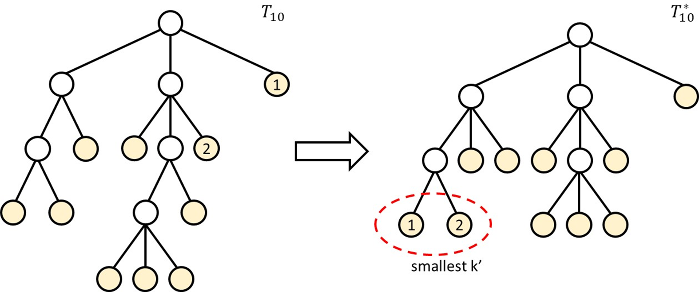

Labs / Term Exams
You can find the editorials of the labs and term exams here.
Lab 0
- Date: 2023.09.18 00:00:00 - 2024.xx.xx 23:59:59
- Scoreboard: Link
A. Hello, world!
- Online Judge: 1600
- Author: Introduction to Algorithms 2021, Lab 0
Problem Description
Editorial
Main Ideas and Concepts
Oh yes, the pure, classic, lovely Hello, world!. What a splendid start to the course.
Edge Cases
Remember to output nycualgo.kcw@gmail.com while .
Notes on Implementation Details
- Think twice on why you might need to input .
- There's no need to give us your email.
- Make sure your copy and paste works fine.
Solutions
Solution
#include <bits/stdc++.h>
using namespace std;
int main() {
int n; cin >> n;
if (n == 1) cout << "Hello, world!" << "\n";
if (n == 2) cout << "nycualgo.kcw@gmail.com" << "\n";
return 0;
}
Expected
- Difficulty: ☆☆☆☆☆
C. Income Tax Rate
- Online Judge: 1602
- Author: Introduction to Algorithms 2021, Lab 0
Problem Description
Editorial
Main Ideas and Concepts
This problem is a simple problem that is intended to explain the concepts of floating point numbers. Although we stated that the absolute or relative error your answer needs to be within , using simple arithmetics and straightforward algorithms actually wouldn't result in errors greater than .
Then how could we solve the problem?
We provide a simple idea for solving it here:
- Store all of the tax brackets and their respective rates in a
pair<int, double>array. - For each income, find the bracket where the income lies in, and accumulate all income ranges before it.
- Simply using an loop is enough, as the input size is not large.
- Beware of some possible edge cases.
Edge Cases
- Note that there should be a range of incomes that don't need to pay taxes.
- the range before the first bracket
- Depending on the way you implement your code, the last bracket should also be checked.
Notes on Implementation Details
- Always use
doubleorlong doubleinstead offloat, asfloatvariables may be prone to introduce errors when working with large numbers. - You can make use of
setprecisionto format floating point output, see cplusplus for more details.
Expected
- Difficulty: ★☆☆☆☆
D. Withdraw
- Online Judge: 1603
- Author: Introduction to Algorithms 2021, Lab 0
Problem Description
Editorial
Main Ideas and Concepts
There are two things to maintain in this task, specifically the student ID sequence and their occurences, so let's split the detailed talks.
Sequence
There are two ways to maintain a sequence when iterating them over and over again and removing elements right after a particular iteration (in the tasks' case, when the professor signs the form). A straightforward idea is to treat the queuing students as like they're in a queue data structure, and push the leading element into the back of the queue if the potential is still positive. Another idea is to use a linked list to represent the students and erase the element once turns zero. One way moves the data, the other moves a pointer, while both are considered efficient enough, as they will iterate through the elements times with every transition to the next element a constant time move.
Occurences
But how do we keep track of the potentials and know when a student should leave the queue? One way would be to map a student ID to its potential. But since the std::map holds a query time complexity of , it might not be fast enough as , thus anything slower than a linear solution may not work. Some may think of std::unordered_map or hash tables, but though the average time complexity of searching is , the calculations still exceed the time limit.
A simple way would to put each students' potential alongside their IDs in an element (of the queue or list, whatever you might be using). Every time the student is iterated, decrease by . If turns zero, remove the element. Updating and removing referred elements are both constant time operations, so we will get as the time complexity over these operations.
Summary
With iterating the sequence and dealing with occurences taking and repectively, the overall time complexity is , with space complexity as each student stores their ID and potential.
Edge Cases
None.
Notes on Implementation Details
The nested STL container std::queue<std::pair<int,int>> may help you maintain the sequence of student ID and there remaining potential.
Expected
- Difficulty: ★☆☆☆☆
F. Postfix
- Online Judge: 1605
- Author: Introduction to Algorithms 2021, Lab 0
Problem Description
Editorial
Main Ideas and Concepts
As everyone of you have taken the Data Structures and Object-Oriented Programming course, we assume that you're familiar with the classic DS problem: Postfix.
It can be easily solved with a simple stack.
However, you might be stuck when you see this line:
Please output the answer modulo .
Or in other cases, you were pretty confused when you got WA for most of your submissions.
The reason why we made this rule is because rapidly and consecutively multiplying integers will result in an integer overflow pretty fast. For example: .
Applying modulo operations is the fix for this problem.
If you're not familiar in doing modulo operations, here is a link to a well-written wikipedia article: Modulo Operation

Refer to the Properties section for more details.
Edge Cases
None.
Notes on Implementation Details
- Even if you've properly implemented the modulo operation, please note that some values still exceed the range of
int, kindly uselong long.
Expected
- Difficulty: ★☆☆☆☆
G. Jujutsu Kaisen 呪術廻戦
- Online Judge: 1606
- Author: Introduction to Algorithms 2021, Lab 0
Problem Description
Editorial
Main Ideas and Concepts
According to the problem statement, our goal is to find the maximum distance between two adjacent jubutsus whenever a new jubutsu is added. A simple idea is to keep track of the distances between each adjacent jubutsu, and by finding the largest distance and dividing the distance by , the answer could be obtained (where we can place a new shikigami). Two approaches are described below:
Straightforward Approach (Inefficient)
The most straightforward approach is to iterate through every jubutsu to find the maximum distance whenever a new jubutsu is added. However, for each newly added jubutsu, it would take us time to search, where is the total number of jubutsus at the moment. This algorithm would result in an time complexity, which is not efficient enough.
Better Approach
The main shortcoming of the straightfoward approach is how we maintain and search for the maximum distance. To reduce the search overhead, we can use containers such as std::map or other data structure that can sort dynamically in or better, to keep track of the distances, where searching for the maximum value only requires time. By using efficient data structures, we can reduce the total complexity from to .
Edge Cases
None.
Notes on Implementation Details
- For students who are using
std::setto maintain the adjacent distances, note that elements instd::setcannot have duplicates, you may refer tostd::multisetif you are interested in using a set structure to solve the problem.
Expected
- Difficulty: ★★☆☆☆
H. Classical Data Structure Problem
- Online Judge: 1607
- Author: SorahISA
Problem Description
Editorial
It's the same as problem I, so please refer to the Editorial.
Expected
- Difficulty: ★★★☆☆
I. Classical Data Structure Problem
- Online Judge: 1608
- Author: SorahISA
Problem Description
給定一個集合 ，你需要支援對這個集合進行 次操作，這些操作分為三種類型：
- 從 中移除最小的整數。保證 。
- 從 中移除最大的整數。保證 。
- 將 插入 中。
這裡的 被定義為在 中尚未出現的最小非負整數。
令 為第 次移除或插入的整數，請輸出 。
You are given a set , and you will have to support operations of three types on this set:
- Remove the smallest integer from . It is guaranteed that .
- Remove the largest integer from . It is guaranteed that .
- Insert into .
Define as the smallest non-negative integer that has not appeared in .
Let be the removed or inserted integer, please output .
Chinese Editorial
子任務 1
可以直接將整個 Set 視為排序後的陣列。
最小最大值就是 跟 ，都可以在 （用 std::vector 的 erase）到 （用 std::deque 的 pop_front、 pop_back ）的時間内將它們刪除。
陣列的 的求法就是對 檢査：如果 就代表陣列中不存在 。
要特別注意可能整個陣列包含了 的所有數字，這時的 値就是 。
以下是求 的 sample code:
Sample code of
int mex(vector<int> &vec) {
// vec is sorted.
// all elements in vec is non-negative and unique
int N = vec.size();
for (int i = 0; i < N; ++i) {
if (vec[i] != i) return i;
}
return N;
}
子任務 2
沒有會加數字的操作 3，只有不斷刪除最小値跟最大値的操作。
那麼就直接開一個 deque 先把數字都排序好，再依據操作來刪掉前後端的數字即可。
子任務 3
只有刪除最大値跟加入 兩種操作。
- Case 1: 如果序列裡的數字是從零開始的連續非負整數們，那刪除 跟加入 都會變得很單純，只會動到序列的最後一個數字而已。
- Case 2: 如果序列裡的數字還不是從零開始的連續非負整數們（有洞），那刪除 跟加入 的數字們就還不會有交集。
- 證明很單純：假設 是最大的 且沒出現在 裡面的數字。那刪除 會去把 刪掉，而加入 會把一個 的數字加進去（補洞）。
- 於是，可以維護一個變數紀錄上一次的 值是多少：
- 只要這個值還小於序列 的長度，就代表還有洞要補，而這次的 也一定會比上一次的還要大。
- 當這個值等於序列 的長度時就會變成 Case 1。
子任務 4
現在多了刪最小値的操作，相當於是在後院鑿洞，上個子任務存在的 遞增的性質也被破壞掉了。不如直接換個思路？
把相鄰的數字「黏」在一起當成一個區間，這樣在算 的時候就可以一次跳過一整段數字。
因為跳過一段數字就會掉進一個洞裡，所以其實跳一次就會直接得到答案了！
刪最小値、刪最大値的操作也仍然只是修改第一個或最後一個區間的端點。
舉個例子：假設在這個子任務依序進行以下操作，那麼會長這樣：
- Empty
- (Insert )
- (Insert )
- (Insert )
- (Insert )
- (Insert )
- (Remove )
- (Remove )
- (Remove )
- (Insert )
- (Remove )
- (Remove )
- (Insert )
- (Insert )
- (Insert )
如果在刪除時把區間整個刪除了就移除、查詢 就是看第一個區間包不包含 ：
- 包含 時 就會是該區間的右界 。
- 不包含 時 就會是 。
實作上需要注意當相鄰兩個區間接觸到彼此就需要將其合併，而這只會發生在前兩個區間。
子任務 5
子任務 4 其實已經把整個解法講完了。
這裡 ，代表一開始已經有一些區間們在裡面了。
只要好好跟他們打招呼就可以 AC 了！
子任務 5 的實作
使用 deque 包 pair 維護區間左右界。
記得要對陣列排序過，並好好打招呼。
更新時也要記得讓鄰居住一起。
結論
要會分析算法的複雜度、以及觀察題目的性質！
在本題中的性質就是 只會出現在從 0 開始的連續一段數字之後，所以加速的做法就是把連續的數字黏起來，做到 査詢。
對 std::vector 做 erase 的複雜度不是 ，他會需要把後面的元素一個一個往前搬。
English Editorial
Subtask 1
The entire set can be treated as a sorted array.
The minimum and maximum values are and , and they can be deleted in time (using std::vector's erase) to time (using std::deque's pop_front, pop_back).
The calculation of for the array involves checking for : if , it means that does not exist in the array.
It is essential to note that if the entire array contains all numbers from to , the value is .
Below is a sample code for calculating :
Sample code for
int mex(vector<int> &vec) {
// vec is sorted.
// all elements in vec is non-negative and unique
int N = vec.size();
for (int i = 0; i < N; ++i) {
if (vec[i] != i) return i;
}
return N;
}
Subtask 2
There are no operations to add numbers; only operations to continuously delete the minimum and maximum values. In this case, create a deque, sort the numbers, and delete the front and back numbers based on the operations.
Subtask 3
There are only two operations: delete the maximum value and add .
- Case 1: If the numbers in the sequence are consecutive non-negative integers starting from zero, deleting and adding become simple, affecting only the last number in the sequence.
- Case 2: If the sequence contains non-consecutive non-negative integers (has gaps), numbers of deleting and adding of will not intersect.
- The proof is simple: assuming is the largest number not in and . Deleting removes , and adding inserts a number (filling the gap).
- Therefore, maintain a variable to record the last value:
- As long as this value is less than the length of the sequence , there are still gaps to fill, and the added will be greater than the previous one.
- When this value equals the length of the sequence , it becomes Case 1.
Subtask 4
Now, the operation to delete the minimum value is added, disrupting the increasing property of observed in the previous subtask. How about changing the approach?
Combine adjacent numbers into an "interval" so that when calculating , an entire segment of numbers can be skipped at once.
Since skipping a segment means falling into a gap, one jump gives the answer directly!
Operations to delete the minimum and maximum values still only modify the endpoints of the first or last interval.
For example: if the following operations are performed in this subtask:
- Empty
- (Insert )
- (Insert )
- (Insert )
- (Insert )
- (Insert )
- (Remove )
- (Remove )
- (Remove )
- (Insert )
- (Remove )
- (Remove )
- (Insert )
- (Insert )
- (Insert )
If the interval becomes empty then just remove it from our consideration.
Querying is whether the first interval contains :
- If it contains , will be the right boundary of that interval .
- If it does not contain , will be .
It is essential to merge adjacent intervals when they touch each other, which only occurs between the first two intervals.
Subtask 5
Subtask 4 has essentially covered the entire solution.
Here, , indicating that some intervals are already present initially.
Just greet them properly, and you will get an AC!
Implementation for Subtask 5
Use a deque to store pairs representing intervals.
Make sure to sort the array and greet the existing intervals properly.
Also, remember to let the neighbors live together during updates.
Conclusion
It's crucial to analyze the algorithm's complexity and observe the properties of the problem!
In this problem, the property is that only appears after a continuous segment of numbers starting from , so the accelerated approach is to glue consecutive numbers together, achieving queries.
Note that the complexity of using erase on std::vector is not ; it requires shifting the elements one by one.
Solutions
By SorahISA
#include "1608.h"
#include <bits/stdc++.h>
using namespace std;
deque<pair<int, int>> itv;
void init(int n, vector<int> a) {
sort(begin(a), end(a));
for (int x : a) {
if (!itv.empty() and x == itv.back().second + 1) ++itv.back().second;
else itv.emplace_back(x, x);
}
}
int remove_min() {
int ans = itv[0].first++;
if (itv[0].first > itv[0].second) itv.pop_front();
return ans;
}
int remove_max() {
int ans = itv.back().second--;
if (itv.back().first > itv.back().second) itv.pop_back();
return ans;
}
int insert_mex() {
if (itv.empty() or itv[0].first > 1) {
itv.emplace_front(0, 0);
return 0;
}
else if (itv[0].first == 1) {
itv[0].first = 0;
return 0;
}
else {
int ans = ++itv[0].second;
if ((int)itv.size() >= 2 and itv[0].second + 1 == itv[1].first) itv.pop_front(), itv[0].first = 0;
return ans;
}
}
Expected
- Difficulty: ★★★☆☆
Lab 1
- Date: 2023.09.30 14:10:00 - 2023.10.17 23:59:59
- Scoreboard: Link
A. Writing Lab 1 Together
- Online Judge: 1610
- Problem Author: 劉永福
- Editorial Author: SorahISA
Problem Description
Given ranges , for each range you have to answer two questions:
- Is there any range that contains this range?
- Is there any range that is contained by this range?
- .
- for .
Chinese Editorial
二維平面
若我們將 當作 座標， 當作 座標，則每個區間都可以視為一個二維平面上的點。
若區間 包含區間 ，則 的 座標必定小於等於 的 座標，且 的 座標必定大於等於 的 座標。 可以列出以下關係式：
也就是說，「 包含 」「 在 的右下方」。
同理可得「 被 包含」「 在 的左上方」。因為兩個問題的做法相同（把點轉 就是了），所以我們只要解決其中一個就可以了。
掃描線
想像有一條線，從下方掃到上方，每當遇到一個點，就把它加入一個集合 。為了方便，我們先假設所有點的 座標都不一樣。
要知道 的右下角有沒有點，相當於是要知道 裡有沒有點的 座標比 大，且 座標比 小。而當我們掃到一個點 時，已經能知道這之前在 裡的點的 座標都比 小了。因此，如果我們能夠快速找到 中存不存在 座標 的點，就能知道 是不是包含了其他點了。
請注意，我們並不需要知道 中有哪些點，只需要知道 中有沒有點的 座標比 大就可以了。如果你看到這裡還打算把這些點存進 std::set 或一個一個檢查，請再重新看看上面的紅字。
作法
使用一個變數紀錄在 裡最大的 座標就好。
完整版
現在考慮「沒有重複的點，但 座標可能相同」的情況。對這些點應該用什麼順序掃過去才能讓上面的作法正確呢？
作法
座標相同就按照 座標由大到小排序。因為在 相同的時候 小的會包含 大的，所以我們要先將 較大的加入 才能正確地判斷。
現在考慮「有重複的點」的情況。對這些點應該用什麼順序掃過去才能讓上面的作法正確呢？
作法
無論是什麼順序都會有一個問題：第一個掃到的點一定不會檢查到其他的點。
但透過觀察到重複點的答案一定是 True，我們可以在排序後先判斷這個點是否跟下個點相同來決定這個點的答案是不是 True，不相同的情況下再去檢查 中的 座標最大值的點。
能證明所有的情況都會被考慮到（a.k.a. 演算法的正確性）嗎？
Proof.
觀察平面上兩點的關係，可以分為以下三種情況：
- 座標相異
- 座標相同、 座標相異
- , 座標皆相同
這三種情況包含了所有兩點之間的關係，而在上面的做法中我們已經對這三種情況都做出了正確的處理，因此所有的情況都會被考慮到。
這個演算法的時間複雜度是多少？
Proof.
排序的時間複雜度是 ，而之後的掃描線只會對每個點做 次檢查，因此時間複雜度是 。
English Editorial
Two-Dimensional Plane
If we regard as the coordinate and as the coordinate, then each range can be seen as a point on a two-dimensional plane.
If range contains range , then 's coordinate must be less than or equal to 's coordinate, and 's coordinate must be greater than or equal to 's coordinate. We can express this relationship as follows:
In other words, " contains " " is located at the lower right of ."
Similarly, " is contained by " " is located at the upper left of ." Since the approach to both problems is the same (flipping the points by is sufficient), we only need to solve one.
Sweepline
Imagine a line sweeping from bottom to top. Whenever it encounters a point, it adds it to a set . For convenience, let's first assume all points have different coordinates.
To know if there is a point at the bottom right of , we need to check if there's a point in whose coordinate is greater than and whose coordinate is less than . And when we reach a point during the sweep, we already know that all points previously in have coordinates less than . So, if we can quickly find if there exists a point in with coordinate , we'll know if contains any other points.
Please note, we don't need to know which points are in , we just need to know if there's a point in whose coordinate is larger than . If you still plan to store these points in a std::set or check them one by one, please revisit the sentence in red above.
Answer
Just use a variable to keep track of the largest coordinate in .
Full Version
Now consider the case where "there are no duplicate points, but coordinates may be the same." What order should we use to sweep over these points to make the above method work correctly?
Answer
If the coordinates are the same, sort by coordinates in descending order. This is because, with the same , the one with a smaller will contain the one with a larger . So, we should add the one with a larger to first to make the judgment correctly.
Now consider the situation where "there are duplicate points." What order should we use to sweep these points to make the method above work correctly?
Answer
Regardless of the order, there will always be an issue: the first point swept won't be able to check other points.
However, by noticing that the answer for duplicate points will definitely be True, we can decide if this point's answer is True by checking if it is the same as the next point after sorting. If not, we then check the point with the maximum coordinate in .
Can you prove that all cases are considered (a.k.a. the correctness of the algorithm)?
Proof.
Observing the relationship between two points on the plane, we can divide it into three scenarios:
- Different coordinates.
- Same coordinates, different coordinates.
- Both and coordinates are the same.
These three scenarios cover all possible relationships between two points. The method above has addressed all these scenarios correctly, so all cases are considered.
What is the time complexity of this algorithm?
Proof.
The time complexity for sorting is , and the subsequent sweep line only checks each point times, so the overall time complexity is .
Solutions
Solution in
#include <bits/stdc++.h>
using namespace std;
struct Interval {
int l, r, id, ans1, ans2;
bool operator == (const Interval &rhs) const {return (l == rhs.l and r == rhs.r);}
};
int main() {
ios_base::sync_with_stdio(0), cin.tie(0);
int N; cin >> N;
vector<Interval> itv(N);
for (int i = 0; i < N; ++i) {
cin >> itv[i].l >> itv[i].r, itv[i].id = i;
itv[i].ans1 = itv[i].ans2 = 0;
}
sort(begin(itv), end(itv), [&](const Interval &a, const Interval &b) {
if (a.r != b.r) return a.r < b.r;
return a.l > b.l;
});
for (int i = 0, mx = 0; i < N; ++i) {
if (i-1 >= 0 and itv[i-1] == itv[i]) itv[i-1].ans1 = 1;
if (mx >= itv[i].l) itv[i].ans1 = 1;
mx = max(mx, itv[i].l);
}
sort(begin(itv), end(itv), [&](const Interval &a, const Interval &b) {
if (a.l != b.l) return a.l < b.l;
return a.r > b.r;
});
for (int i = 0, mx = 0; i < N; ++i) {
if (i-1 >= 0 and itv[i-1] == itv[i]) itv[i-1].ans2 = 1;
if (mx >= itv[i].r) itv[i].ans2 = 1;
mx = max(mx, itv[i].r);
}
sort(begin(itv), end(itv), [&](const Interval &a, const Interval &b) {
return a.id < b.id;
});
for (int i = 0; i < N; ++i) cout << itv[i].ans1 << " \n"[i == N-1];
for (int i = 0; i < N; ++i) cout << itv[i].ans2 << " \n"[i == N-1];
return 0;
}
Expected
- Difficulty: ★★★☆☆
B. Falling Domino
- Online Judge: 1611
- Author: 劉永福
Problem Description
In this problem, you're presented with a table consisting of blocks, where you need to insert distinct numbers. The following conditions must be met:
- Each column is sorted. For every block where , the value of is strictly less than .
- Each row is sorted. For every block where , the value of is strictly less than .
In essence, when the table is filled with numbers, it should conform to the constraints of a Young tableau.
The problem requires you to determine the sum of , where represents whether a method exists to fill the table such that is positioned at , with signifying 'True' and 'False'.
- .
- .
- .
Editorial
Observation
Initially, we can identify a property that will assist us in resolving this problem for any filling method :
-
For any two blocks and , if block is situated in the upper-left corner relative to , then the value of should be less than or equal to .
Figure 1: is at the upper-left conner of
Let's analyze a simple case: , and consider what the answer might be.
Suppose we position in a certain and assess whether it's possible to fill the table under this circumstance.
-
After some try, you may discover that it's impossible to fill.
Because we found there's blocks need to have a number smaller than , but we only have distinct value smaller than .

Figure 2: -
Similar to the case above, it's impossible to find a fill method in this case.
Because there's blocks need to have a number greater than , but we only have distinct value greater then .
Figure 3:
After experimenting, you might realize that filling is unfeasible in some scenarios because there are either too few numbers smaller or larger than for the required blocks.
To generalize the observation, we contemplate a fixed and recognize the constraints for the numbers surrounding it, ensuring there are enough smaller or larger numbers.
-
Upper-left conner of
- Blocks which value must smaller than is .
- Numbers smaller than is .
- Therefore, for to be placed at , we must have .
-
Bottom-right conner of
- Blocks which value must greater than is .
- Numbers greater than is .
- Therefore, for to be placed at , we must have .
After some try, you may find that we can only use these two inequalities to validate that number can or can not be placed on . But is these two inequality really enough?
Let's consider a general way to fill when both inequality holds.
If both inequalities hold, a standard method for filling emerges, suggesting not to waste numbers and fill the upper left and bottom right corners first, followed by the remaining spaces.
 |
-
Step 1: fill the upper-left conner of with .
-
Step 2: fill the bottom-right conner of with
-
Step 3: fill the remaining part with the remaining numbers.
Since both of the inequality holds, there must have enough numbers for Step 1 and Step 2 to fill in.
And since the remaining numbers is greater than and is less than , there's no need to consider the border of left upper part (yellow part) and right bottom part (green part). Only need to fill these numbers into remain part one by one.
Subtask 1 ()
For this subtask, we can traverse all blocks and employ the mentioned inequalities to validate each . The time complexity here is , allowing us to score points.
Subtask 2 (; )
An solution won't suffice for this subtask.
The subsequent strategy involves determining the answer for each row by adjusting the inequalities slightly, thus finding the range of for row .
Since we only place the number inside the table, don't forget this condition:
Finally, combine all we can get our solution for row by calculate the number of :
This adjustment reduces the time complexity to , since and , we know that , which is sufficient for scoring points under the conditions of Subtask 2.
Full Solution ()
Since the time complexity is , it might still get Time Limit Exceeded when is large enough. For example, when .
However, we note a symmetry in the problem: the answer for is identical to that for . Since , there's either or .
This realization means we can swap and when , ensuring that our solution's time complexity is now , which is adequate for achieving an Accepted verdict for this problem.
Additional Notes
- Using
intwill cause overflow in both Subtask 2 and 3, uselong longinstead. - Number of filling method is the number of -dimension Catalan number, it's a very large number. Consequently, even with substantial pruning, calculating these directly would be prohibitively slow for this problem.
Solutions
Solution in
#include <iostream>
using namespace std;
int main()
{
long long n, m, k, ans = 0;
cin >> n >> m >> k;
if (n > m) swap(n, m);
for (int i = 1; i <= n; i++){
ans += min(m, k / i) - max(1LL, (m + 1 - (m * n - k + 1) / (n - i + 1))) + 1;
}
cout << ans << '\n';
return 0;
}
Expected
- Difficulty: ★★☆☆☆
C. Convex Hull
- Online Judge: 1612
- Problem Author: SorahISA
- Editorial Author: 成俊宏
Problem Description
有一個上凸包 ，你每次可以透過 query(m) 詢問一個整數斜率 ，而你會得到該斜率切到 的切點座標 。
你至多只能問 次，請求出 座標為 時對應的 是多少。
You are given an upper convex hull . Each time, you can use query(m) to ask about a tangent with an integer slope , and you will receive the coordinates of the tangent point on .
You can ask at most times, and you need to find out what is when the coordinate is .
- .
- .
- .
- for .
- .
- Points form an upper convex hull.
Chinese Editorial
性質分析
上凸多邊形有許多不錯的性質，如：
- 從左到右，每條邊的斜率會呈現遞減的趨勢。
- 對於上凸多邊形上的每一個點，雖然存在無限多條切線通過它，但可以注意到說這些切線的斜率，會被該點相鄰兩邊的斜率夾住。
綜合以上兩點，可以發現每個點的切線斜率會從左到右呈現遞減的趨勢。
當你使用切線斜率 去查詢，並得到 這個結果，此時你可以做以下的推論：
- ；那麼你找到你需要的 了！
- ；可惜了，但由於你知道點 在右邊，所以你應該使用更小的 才能查詢到點 。
- ；反之，你應該要使用更大的 才能查詢到點 。
我們可以透過調整斜率，來讓我們查詢的切線越來越逼近題目所要求的點。理論上，由於越來越靠近 ，我們使用的斜率也會越來越接近通過 的切線的斜率。
由於切線的斜率只出現在 之間，而我們只能查詢 次，若一個個斜率去查絕不會 AC。所以我們要利用上面的推論，來快速縮小切線斜率的範圍，並藉此將該切線的切點鎖定在 上。
若我們想要透過一次詢問，就將斜率的範圍盡可能縮小，應該怎麼問呢？問得太靠近邊邊，很容易縮小不到範圍；總是問一個區間的中點，保證範圍每次必縮小一半！
實作細節
我們可以有像是以下這樣的 code:
// [lo, hi] is used to maintain the range of possible slopes
int lo = -1'000'000'000, hi = 1'000'000'000, mi;
// If we can't squeeze the answer within [m, m], keep squeezing!
while (lo != hi) {
mi = lo + (hi - lo) / 2;
auto [x, y] = query(mi);
if (x == k) return y;
if (x < k) hi = mi;
else lo = mi + 1;
}
// lo should be the tangent slope at (k, y[k])
auto [x, y] = query(lo);
return y;
詢問次數最壞情況下為 次。
要特別注意的是，由於同一條切線同時切到多個切點時，會回傳最左邊的點，所以若要找的點 在你查到的點 右邊，這兩個點是有可能有相同的斜率的。此時我們應該在縮小斜率的範圍時，把這個可能給保留下來，這也是 hi = mi 而不是 hi = mi - 1 的原因；反之，若點 在點 左邊，可以保證這兩個點一定有不同的斜率，而這也是使用 lo = mi + 1 而不是 lo = mi 的原因。
實作二分搜時要小心的就是迴圈無法達到終止條件，陷入無窮迴圈。以下是發生這種情況的可能原因：
- 都使用
lo = mi,hi = mi- 在這題中，雖然你也可以使用
lo = mi（仍然有包到答案），但這麼做將可能使二分搜在接近邊界條件時仍然停不下來。 - 假設目前二分搜的斜率範圍位在
[lo, lo + 1]，且lo並不是點 的切線斜率，那麼使用斜率mi = lo將會查到點 左邊的點。 - 觸發
lo = mi的條件，搜尋範圍仍然為[lo, lo + 1]；若正確使用lo = mi + 1，搜尋範圍會變成[lo + 1, lo + 1]，達成終止條件。
- 在這題中，雖然你也可以使用
- 選擇錯誤的中點
- 對於區間
[lo, hi]，至多有兩個可以挑選的中點： - 當使用 時，若二分搜裡面縮小範圍的式子是
lo = mi,hi = mi - 1，在搜尋範圍為[lo, lo + 1]的情況時，出現lo = mi的 case 時範圍仍是[lo, lo + 1]，陷入無窮迴圈。 - 當使用 時，若二分搜裡面縮小範圍的式子是
lo = mi + 1,hi = mi，在搜尋範圍為[lo, lo + 1]的情況時，出現hi = mi的 case 時範圍仍是[lo, lo + 1]，陷入無窮迴圈。 - 本題目是屬於
lo = mi + 1,hi = mi的 case，那麼使用mi = (lo + hi) / 2的式子計算出的中點會有什麼問題呢？要注意到在 C++ 的整數運算中，一個負數 除以 的結果會是 （e.g.(-15) / 2 = -7），那使用mi = (lo + hi) / 2在lo + hi是負奇數時會發生無窮迴圈的狀況。 - 使用位元運算
mi = (lo + hi) >> 1可以保證都是計算出 ；位元運算mi = (lo + hi + 1) >> 1可以保證都是計算出 。 - 使用
mi = lo + (hi - lo) / 2也可以保證在 時都是計算出 。
- 對於區間
多點共線
在存在三點共線的情況下，你要找的點 可能會跟其他點落在同一條切線上。我們假設與點 共切線的點中，最左邊的點座標為 ，該切線的斜率為 。
若是直接用上面的程式去執行上述提及的測試資料，最後找到的點並不會是答案，而是 。
二維平面上的一條線，只需要有該線上的一點 ，及該線的斜率 ，就可以唯一得到該線的方程式：
也在線上，故代入上式等號仍會成立：
移項後可得到：
這樣便能求出答案。
常見錯誤
if (tmp = query(mi))
hi = mi;
else
lo = mi + 1;
在左閉右閉的二分搜結束時雖然會保證 ，但 （中間點）卻可能是 或 。
同理，拿二分搜最後一輪的 query 也不能保證 query 的會是 。
這種常見的疏忽是因為我們在寫分搜時可能會假設中間值 在二分搜結束時會相當於左界 或右界 ，但情況並非總是如此。在檢查條件和計算二分搜的結果時，請小心使用正確的界限。
English Editorial
Property Analysis
The upper convex polygon has several nice properties, such as:
- From left to right, the slope of each edge shows a decreasing trend.
- For each point on the upper convex polygon, although there are infinitely many tangents that can pass through it, note that the slopes of these tangents are bounded by the slopes of the adjacent sides of the point.
Combining the above two points, we can find that the slope of the tangents for each point will show a decreasing trend from left to right.
When you query with a tangent slope and receive a result , you can make the following inferences:
- ; then you've found the you need!
- ; unfortunately, but since you know point is on the right, you should use a smaller to query point .
- ; conversely, you should use a larger to query point .
We can adjust the slope to make the tangent we query approach the point required by the problem. Theoretically, as we get closer to , the slope we use will be closer to the slope of the tangent passing through .
Because the slope of the tangents only appears between , and we can only query 32 times, trying each slope one by one definitely won't grant you AC. Therefore, we need to use the inferences mentioned above to quickly narrow down the range of tangent slopes and thereby lock the tangent point on .
If we want to minimize the range of slopes as much as possible with a single query, what should we ask? Asking too close to the edge often makes it impossible to narrow down the range; always asking about the midpoint of a range ensures that the range is reduced by half each time!
Implementation Details
We can have code like the following:
// [lo, hi] is used to maintain the range of possible slopes
int lo = -1'000'000'000, hi = 1'000'000'000, mi;
// If we can't squeeze the answer within [m, m], keep squeezing!
while (lo != hi) {
mi = lo + (hi - lo) / 2;
auto [x, y] = query(mi);
if (x == k) return y;
if (x < k) hi = mi;
else lo = mi + 1;
}
// lo should be the tangent slope at (k, y[k])
auto [x, y] = query(lo);
return y;
The worst-case number of queries is times.
It's important to note that when the same tangent line touches multiple points, it returns the farthest left point. So, if the point you're looking for is to the right of the point you found, these two points might have the same slope. In this case, when narrowing down the range of slopes, we should keep this possibility, which is why we use hi = mi instead of hi = mi - 1. Conversely, if point is to the left of point , these two points definitely have different slopes, and that's why we use lo = mi + 1 instead of lo = mi.
When implementing binary search, you have to be careful that the loop can reach the termination condition without falling into an infinite loop. Here are some possible reasons for such a situation:
- Using both
lo = mi,hi = mi:- In this problem, although you could use
lo = mi(still covering the answer), doing so could potentially cause the binary search to keep running when close to boundary conditions. - Suppose the current range of slopes in the binary search is
[lo, lo + 1], andlois not the tangent slope of point . Then, using the slopemi = lowill query a point to the left of point . - Triggering the
lo = micondition keeps the search range as[lo, lo + 1]. If you correctly uselo = mi + 1, the search range would become[lo + 1, lo + 1], meeting the termination condition.
- In this problem, although you could use
- Choosing the wrong midpoint:
- For the interval
[lo, hi], there are at most two midpoints you can choose: - When using , if the formula inside the binary search for reducing the range is
lo = mi,hi = mi - 1, and the search range is[lo, lo + 1], the occurrence of thelo = micase keeps the range as[lo, lo + 1], falling into an infinite loop. - When using , if the formula inside the binary search for reducing the range is
lo = mi + 1,hi = mi, and the search range is[lo, lo + 1], the occurrence of thehi = micase keeps the range as[lo, lo + 1], falling into an infinite loop. - This problem belongs to the
lo = mi + 1,hi = micase, so what would be the issue with using the formulami = (lo + hi) / 2for calculating the midpoint? It's important to note that in C++ integer operations, a negative number divided by would result in (e.g.,(-15) / 2 = -7). So, usingmi = (lo + hi) / 2whenlo + hiis an odd negative would lead to an infinite loop. - Using the bitwise operation
mi = (lo + hi) >> 1ensures that it always calculates ; the bitwise operationmi = (lo + hi + 1) >> 1ensures that it always calculates . - Using
mi = lo + (hi - lo) / 2will also ensure that if .
- For the interval
Points on the Same Line
In situations where three points lie on the same line, the point you're looking for might be on the same tangent line as other points. We assume that among the points that share a tangent line with point , the one farthest to the left has coordinates , and the slope of the tangent line is .
If you directly use the program mentioned above on the test data described, the final point you find will not be the answer, but rather .
On a two-dimensional plane, you only need one point on the line and the slope of the line to uniquely determine the equation of the line:
Since is also on the line, it can be substituted into the equation, maintaining equality:
After rearranging, we get:
This way, you can calculate the answer.
Common Mistakes
if (tmp = query(mi))
hi = mi;
else
lo = mi + 1;
At the end of a binary search with both ends closed (left-closed and right-closed), even though it ensures , (the middle point) could potentially be or .
Similarly, using the last round of queries in a binary search doesn't guarantee that what's being queried is . This means that relying on the value of in the final iteration might lead to incorrect results, as it might not reflect the exact point where the condition changes (which is what we are often looking for in a binary search).
This common oversight occurs because programmers might assume the middle value reflects the current low or high bound at the end of the binary search, but that's not always the case. Care needs to be taken to use the correct bounds in the condition checking and when finalizing the result of the binary search.
Solutions
Solution
#include "1612.h"
int convex_hull(int L, int k) {
int lo = -1'000'000'000, hi = 1'000'000'000, mi;
while (lo < hi) {
mi = (lo + hi) >> 1;
auto [x, y] = query(mi);
if (x == k) return y;
if (x < k) hi = mi;
else lo = mi + 1;
}
auto [x, y] = query(lo);
return y + (k - x) * lo;
}
Expected
- Difficulty: ★☆☆☆☆
E. Balanced Array
- Online Judge: 1614
- Author: SorahISA
Problem Description
You are given an array of length , and a weight array of length . You can perform any of the following operations any number of times:
- Choose an index such that , let and .
- Choose an index such that , let and .
It is guaranteed that the sum of all elements in is zero, what is the minimum number of operations needed to make all elements in become zero?
- .
- for .
- .
- for .
- .
Editorial
Simplified Problem
Suppose we do not make operations between position and , then there is only one option to make become zero, which is increase position by , and decrease position by .
After that, there is still only one option to make become zero, and so on. Thus in this case the answer can be uniquely determined.
If we define array as the prefix sum array of where , we have the answer:
Original Problem & Solution 1
Now, consider we move from position to , which is and , the prefix sum array will change to for , while the last item stays unchanged.
Note that , so the answer won’t change even if we change to any arbitrary number.
Define be the answer if we move from position to (e.g. the above formula is ), we can calculate as follows:
Since the function is (non-strictly) convex function, and the summation of convex functions is still convex, we have yielded that is convex. Using tenary search is enough to pass and get AC.
- Time Complexity: , where is the maximum value of .
Calculating Optimal & Solution 2
We can reformat the problem as follows:
There are people on coordinate , find a position that minimize the sum of distances to every person.
Proof.
The sum of distances is , which is exactly .For any position that has more people on the left (denoted as ) than on the right (denoted as ), moving left by will make the sum decreases by . Vice versa, if , then moving right will always be better. It is easy to see that the optimal position is the median of these people.
Thus, if we sort by increasing , and calculate the position of the weighted median, we can get the optimal without any call to , and get AC with only one call to .
- Time Complexity: (for sorting).
Find Median Quicker & Solution 3
Actually, we don’t have to sort if we only need the median. Recall "Quick Select" which let you get largest element in just time, if we use it together with binary search on the array, we would yield a , which is an solution!
- Time Complexity: .
Solutions
Subtask 1 in
#include <bits/stdc++.h>
using namespace std;
const int maxnc = 100 * 100 + 5;
const int maxw = 1000;
int32_t main() {
ios_base::sync_with_stdio(0), cin.tie(0);
int N; cin >> N;
vector<int> a(N+1), w(N+1);
for (int i = 1; i <= N; ++i) cin >> a[i];
for (int i = 1; i <= N; ++i) cin >> w[i];
auto check = [&](int pass) -> int64_t {
int64_t cost = 0;
for (int i = 1, sum = a[1] + pass; i <= N-1; sum += a[++i]) {
cost += 1LL * w[i] * abs(sum);
}
return cost;
};
int64_t ans = maxnc * maxw;
for (int i = -maxnc; i <= maxnc; ++i) ans = min(ans, check(i));
cout << ans << "\n";
return 0;
}
Solution in
#include <bits/stdc++.h>
using namespace std;
int maxnc = 1'000'000 * 1'000 + 5;
int32_t main() {
ios_base::sync_with_stdio(0), cin.tie(0);
int N; cin >> N;
vector<int> a(N+1), w(N+1);
for (int i = 1; i <= N; ++i) cin >> a[i];
for (int i = 1; i <= N; ++i) cin >> w[i];
auto check = [&](int pass) -> int64_t {
int64_t cost = 0;
for (int i = 1, sum = a[1] + pass; i <= N-1; sum += a[++i]) {
cost += 1LL * w[i] * abs(sum);
}
return cost;
};
int lo = -maxnc, hi = maxnc, m1, m2;
while (lo < hi) {
m1 = lo + (hi - lo) / 3;
m2 = hi - (hi - lo) / 3;
if (check(m1) < check(m2)) hi = m2 - 1;
else lo = m1 + 1;
}
cout << check(lo) << "\n";
return 0;
}
Solution in
#include <bits/stdc++.h>
using namespace std;
int main() {
ios_base::sync_with_stdio(0), cin.tie(0);
int N; cin >> N;
vector<pair<int, int>> bw(N+1);
int sum_w = 0;
for (int i = 1; i <= N; ++i) cin >> bw[i].first, bw[i].first += bw[i-1].first;
for (int i = 1; i <= N; ++i) cin >> bw[i].second, sum_w += bw[i].second;
int lo = 1, hi = N, mi, pre = 0, tmp;
while (lo < hi) {
mi = (lo + hi) >> 1;
nth_element(begin(bw) + lo, begin(bw) + mi, begin(bw) + hi + 1);
tmp = pre;
for (int i = lo; i <= mi; ++i) tmp += bw[i].second;
if (2*tmp < sum_w) lo = mi + 1, pre = tmp;
else hi = mi;
}
auto check = [&](int pass) -> int64_t {
int64_t cost = 0;
for (int i = 1; i <= N; ++i) {
cost += 1LL * abs(bw[i].first + pass) * bw[i].second;
}
return cost;
};
cout << check(-bw[lo].first) << "\n";
return 0;
}
Expected
- Difficulty: ★★★☆☆
F. Path of the Mind
- Online Judge: 1615
- Author: SorahISA
Problem Description
位勇者要來挑戰 個關卡，勇者們有著攻擊力 、生命值 、以及一個屬性 ，關卡們也有 、、以及 。除此之外，每位勇者都有一個能量為 的護盾。
勇者 挑戰關卡 時，關卡的 跟 會增加 。而這挑戰是一種回合制的對戰，每回合勇者會先攻擊，再被關卡攻擊，直到勇者或關卡其中一方生命值歸零為止。在護盾還有能量時會自動抵擋攻擊傷害。若關卡攻擊力為 且當前護盾能量為 ，則受到的傷害將變為 ，且護盾的能量將變為 。
請問 最小要是多少，才能讓所有勇者都能通過所有關卡？
- .
- .
- for .
- for .
- for .
- for .
Chinese Editorial
觀察單調性
令 代表 assistance 是 時受到的傷害，可以觀察到 越大，每次受到的傷害就會越少，所以 非嚴格遞減。
因為 有單調性，所以可以透過對答案二分搜去檢查 的最小 。
Subtask 3 ()
現在我們要求的是 時的 ，所以我們能搜 並檢查是不是所有的 都滿足條件。
因為每個 的答案是互相獨立的，所以能分開搜再取 就好。
如果每次都重新算很可能會超時，可以先預處理：
- 枚舉 預處理，需要處理 次。
- 枚舉 （值域）預處理，需要處理 次（），較推薦此種做法。
滿分解
現在問題可以簡化成這樣：
你可以給 去花費 時間詢問是否 ，請求出 。
使用 （）次詢問的做法應該很簡單：就對每個 做二分搜就好了。
來唬爛一下
- 維護當前最大的答案 ，進到 時只要 就可以跳過二分搜的部分。
- 期望上數字只會變大 次！
- 期望詢問次數：.
唬爛的結果
- 當然這只是期望，如果答案剛好 遞增就爛了。
- reverse 也很容易構造爛掉的情況。
shuffle？- 恭喜 AC～
如果沒用srand就 callrandom_shuffle也會爛掉。
Proof.
- Let be R.V. that is if for all , we know
- is independent
- The expected number of calls is .
- is the harmonic number.
- Bernstein Inequalities
-
- If we plug in , we will get the following:
-
- Time Complexity (w.h.p.): .
English Editorial
Observing Monotonicity with
Let represent the damage received when assistance is . It is observed that as increases, the damage incurred each time decreases, so is non-strictly decreasing.
Because is monotonic, we can use binary search on the answer to check the minimum for which .
Naïve Battle Simulation (Time Limit Exceeded)
int wd, we, wp, sd, se, sp, a;
sd += gcd(wp, sp);
se += gcd(wp, sp);
while (we > 0 and se > 0) {
se -= wd;
if (se <= 0) break;
int dmg = max(sd - a, 0);
we -= dmg;
if (a > 0) --a;
}
if (we > 0) { /* warrior wins */ }
else { /* warrior loses */ }
Battle Simulation in
bool battle(int wd, int we, int sd, int se, int a) {
int get_hit = (se - 1) / wd;
if (a >= get_hit) {
/// sd - a, sd - a + 1, ..., sd - a + get_hit - 1 ///
we -= sum(max(sd - a, 0), max(sd - a + get_hit - 1, 0));
a -= get_hit, get_hit = 0;
}
else if (a) {
/// sd - a, sd - a + 1, ..., sd - 1 ///
we -= sum(max(sd - a, 0), max(sd - 1, 0));
get_hit -= a, a = 0;
}
we -= get_hit * sd;
return (we > 0); /// 'True' if warrior wins
}
battle(wd, we, sd + gcd(wp, sp), se + gcd(wp, sp), a);
Subtask 3 ()
Now, what we are looking for is the when , so we can search for and check whether all the satisfy the conditions.
Since each 's answer is independent of the others, we can search for them separately and then take the .
If you recompute each time, it's very likely going to cause a timeout, so pre-processing can be done:
- Enumerate for preprocessing, which requires operations.
- Enumerate (for value domains) for preprocessing, which requires operations (where ). This method is more recommended.
Full Score Solution
The problem can now be simplified as follows:
You can query with at the cost of time to ask whether , and you need to find out .
Using the method of querying times (where ) should be quite straightforward: just perform a binary search for each .
Let's bluff a bit
- Maintain the current maximum answer , as long as , you can skip the binary search part for the warrior.
- In expectation, the number would only increase times!
- Expected Calls: .
The result of bluffing
- Of course, this is just an expectation. If the answer happens to have increasing, it would be terrible.
- Doing a reverse would also be terrible, and it is easy to construct worst cases.
shuffle?- Congratulations, AC!
If you callrandom_shufflewithout usingsrand, it will also fall apart.
Proof.
- Let be R.V. that is if for all , we know
- is independent
- The expected number of calls is .
- is the harmonic number.
- Bernstein Inequalities
-
- If we plug in , we will get the following:
-
- Time Complexity (w.h.p.): .
Solutions
Solution
#include <bits/stdc++.h>
using namespace std;
#define int int64_t
const int INF = INT_MAX; /// 501500999
const int maxp = 1000 + 5;
struct Laffey {int d, e, p;};
vector<vector<int>> GCD;
int explore(int N, vector<Laffey> w, int K, vector<Laffey> s) {
auto sum = [](int L, int R) -> int {return R*(R+1)/2 - (L-1)*L/2;};
auto alive = [&](int i, int a) -> bool {
int endurance = w[i].e;
for (int j = 0; j < K; ++j) {
int get_hit = (s[j].e - 1) / w[i].d;
if (a >= get_hit) {
/// s[j].d - a, s[j].d - a + 1, ..., s[j].d - a + get_hit - 1 ///
endurance -= sum(max(s[j].d - a, int(0)), max(s[j].d - a + get_hit - 1, int(0)));
a -= get_hit, get_hit = 0;
}
else if (a) {
/// s[j].d - a, s[j].d - a + 1, ..., s[j].d - 1 ///
endurance -= sum(max(s[j].d - a, int(0)), s[j].d - 1);
get_hit -= a, a = 0;
}
endurance -= get_hit * s[j].d;
if (endurance <= 0) return false;
}
return true;
};
int ans = 0;
for (int i = 0; i < N; ++i) {
for (int j = 0; j < K; ++j) s[j].d += GCD[w[i].p][s[j].p], s[j].e += GCD[w[i].p][s[j].p];
if (!alive(i, ans)) {
int lo = ans + 1, hi = INF, mi;
while (lo < hi) {
mi = (lo + hi) >> 1;
if (alive(i, mi)) hi = mi;
else lo = mi + 1;
}
ans = lo;
}
for (int j = 0; j < K; ++j) s[j].d -= GCD[w[i].p][s[j].p], s[j].e -= GCD[w[i].p][s[j].p];
}
return ans;
}
int32_t main() {
ios_base::sync_with_stdio(0), cin.tie(0);
int N, K; cin >> N >> K;
vector<Laffey> w(N), s(K);
for (auto &[d, e, p] : w) cin >> d;
for (auto &[d, e, p] : w) cin >> e;
for (auto &[d, e, p] : w) cin >> p;
for (auto &[d, e, p] : s) cin >> d;
for (auto &[d, e, p] : s) cin >> e;
for (auto &[d, e, p] : s) cin >> p;
GCD.assign(maxp, vector<int>(maxp, 0));
for (int i = 1; i < maxp; ++i) {
for (int j = 1; j < maxp; ++j) GCD[i][j] = gcd(i, j);
}
/// remove these two lines for Subtask 1,2,3 ///
mt19937_64 rng(1615); /// random seed = 1615
shuffle(begin(w), end(w), rng);
int res = explore(N, w, K, s);
cout << res << "\n";
return 0;
}
Expected
- Difficulty: ★★★★☆
Lab 2
- Date: 2023.10.18 20:00:00 - 2023.11.08 23:59:59
- Scoreboard: Link
A. Easy Problem
- Online Judge: 1620
- Author: detaomega
Problem Description
Given an empty grid of , fill the grid with numbers from to following the rule below.
- If the size of the grid is greater than one, divide it into four quadrants: top-left, top-right, bottom-left, and bottomright.
- Place the first quarter of the numbers in the top-left quadrant,
- the next quarter in the top-right quadrant,
- the subsequent quarter in the bottom-left quadrant,
- and the rest in the bottom-right quadrant.
- If the size of the grid is , fill it with the corresponding number.
- .
Chinese Editorial
根據題目敘述，若 grid 不是 ，我們就以分治來遞迴處理四個方向：左上、右上、左下、右下。若 grid 大小為 ，則直接填入數字。
我們使用了以下技巧來實現該遞迴函式：
num：當前 grid 的第一個數字。row、col、size：rowcol為當前 grid 左上角的位置，size則為 grid 的邊長。
當 grid 的大小為 時，將對應的 row、col 位置填入數字 num。
詳細細節請參閱下方程式碼。
English Editorial
As stated in the problem description, if the grid is not a matrix, divide it recursively into four submatrices using the divide and conquer approach: top-left, top-right, bottom-left, and bottom-right. If the grid size is , store the value directly.
We utilized the following techniques to implement the recursive function:
num: The current number to be placed in the grid.row,col,size:rowcolrepresent the position of the top-left corner of the current grid, andsizeindicates the size of the grid issizesize.
When the size of the grid is , the corresponding row and col values are used to fill the number num.
For detailed specifics, please refer to the provided code below.
Solutions
Solution by detaomega: Divide and Conquer
#include <bits/stdc++.h>
using namespace std;
// The maximum grid for this problem is 1024.
// So we can declare as a global variable with size 1024 * 1024.
int grid[1024][1024];
void fillGrid(int num, int row, int col, int size) {
// If the size of grid is 1 x 1 then fill the answer num in corresponding row and col.
if (size == 1) {
grid[row][col] = num;
return;
}
// If the size of grid is not 1 x 1, recursive and fill the number.
int newSize = size / 2;
// Top-left grid
fillGrid(num, row, col, newSize);
// Top-right grid
fillGrid(num + newSize * newSize, row, col + newSize, newSize);
// Bottom-left grid
fillGrid(num + 2 * newSize * newSize, row + newSize, col, newSize);
// Bottom-right grid
fillGrid(num + 3 * newSize * newSize, row + newSize, col + newSize, newSize);
}
int main() {
int n;
cin >> n;
// N respond the size of the grid.
int N = 1;
for (int i = 1; i <= n; i++) {
N = 2 * N;
}
// Recursive the gird
fillGrid(1, 0, 0, N);
// Output the filled grid
for (int i = 0; i < N; ++i) {
for (int j = 0; j < N; ++j) {
cout << grid[i][j] << " ";
}
cout << "\n";
}
return 0;
}
Solution by SorahISA: Counting
#include <bits/stdc++.h>
using namespace std;
int main() {
ios_base::sync_with_stdio(0), cin.tie(0);
int N; cin >> N;
for (int r = 0; r < (1<<N); ++r) {
for (int c = 0; c < (1<<N); ++c) {
int val = 1;
for (int bit = 0; bit < N; ++bit) {
if (r >> bit & 1) val += (1 << (2*bit+1));
if (c >> bit & 1) val += (1 << (2*bit));
}
cout << val << " \n"[c == (1<<N)-1];
}
}
return 0;
}
Expected
- Difficulty: ★☆☆☆☆
B. Let's Write Divide and Conquer Happily!
- Online Judge: 1621
- Author: 成俊宏、劉永福
Problem Description
給定一個包含 個整數的陣列，你的任務是處理 個以下類型的查詢：
- 更新位置 的值為
- 求區間 中值的總和
- 求區間 中的最大前綴和
- 求區間 中的最大後綴和
輸出每筆詢問對應的答案是多少。
注意，前綴區間和後綴區間長度可為 ，也就是答案最小值為 。
Here is a summary of the tasks for each query:
- Update the value at position to .
- Find the total sum of values in the interval .
- Find the maximum prefix sum in the interval .
- Find the maximum suffix sum in the interval .
Output the answers for each query.
Note: The length of prefix and suffix intervals can be , meaning the minimum value for the answer is .
- .
- .
- for .
- for each query.
- for each query of type .
- for each query of type .
- for each query of type .
Chinese Editorial
照著題目的敘述，先考慮區間總和的部份。選擇一些特定的區間，儲存這些區間的答案，並用這些紀錄的區間透過分治法來完成每次詢問及修改。
大部分的題解已經放在題敘了，這裡會將題敘的中的部分內容與程式碼對照 & 講解。
實作細節
Build
Specifically, you can initially use Divide and Conquer to calculate the answer for and record the answers encountered during the recursion.
在一開始使用分治法求出各區間答案。
參考程式碼及註解，這邊使用在陣列上儲存二元樹的方式去記錄答案：
分治計算區間和，程式碼
#define LEFT_CHILD(idx) (idx << 1)
#define RIGHT_CHILD(idx) ((idx << 1) | 1)
void GetIntervalSum(int l = 1, int r = n, int idx = 1){
if (l == r) { // leaf node
intervals[idx].sum = a[l];
return;
}
int m = (l + r) / 2; // divide
GetIntervalSum(l, m, LEFT_CHILD(idx)); // conquer left part
GetIntervalSum(m + 1, r, RIGHT_CHILD(idx)); // conquer right part
// merge the result of left and right part
intervals[idx].sum = intervals[LEFT_CHILD(idx)].sum + intervals[RIGHT_CHILD(idx)].sum;
}
Range Query
Then, to calculate the answer for , you can start from and employ Divide and Conquer once more. During the recursion, for the current interval and the queried interval , there are three situations:
- is entirely inside . In this case, we can directly add to our answer.
- is entirely outside . In this scenario, this interval doesn't affect the answer.
- Otherwise, we can divide it into two subproblems:
- How the answer of the interval contributes to .
- How the answer of the interval contributes to .
在已知每個區間答案的情況下，可以用以上的方法，利用已儲存的部分來求得 的答案。就如同題敘提到的，我們分成三個 Case 去分治求解。
參考一下程式碼及註解：
區間查詢，程式碼
long long QuerySum(int &ql, int &qr, int l = 1, int r = n, int idx = 1) {
/*** Case 1 : [l, r] is entirely inside [ql, qr] ***/
if (ql <= l && r <= qr) { // contain by query range
return intervals[idx].sum;
}
/*** Case 2 : [l, r] is entirely outside [ql, qr] ***/
if (qr < l || r < ql) {
return 0; // return 0 won't affect the calculation of sum in parent query
}
/*** Case 3 : divide [l, r] into two subproblems ***/
int m = (l + r) / 2; // divide
long long left_part_ans = QuerySum(ql, qr, l, m, LEFT_CHILD(idx)); // conquer left part
long long right_part_ans = QuerySum(ql, qr, m + 1, r, RIGHT_CHILD(idx)); // conquer right part
return left_part_ans + right_part_ans; // merge the result of left and right part
}
Update
Treat updates as a range query of . The path of the range query traverses through intervals whose values will be affected if the number changes to , and we can handle this efficiently.
對於修改的操作，我們要找到所有受修改影響的區間，並更新其答案。
而受影響的區間跟查詢 的過程中遇到的區間一樣，在過程中更新這些區間即可。
參考以下程式碼及註解：
修改操作，程式碼
void UpdateIntervalSum(int k, int u, int l = 1, int r = n, int idx = 1) {
// Treat updates as a range query of [k, k] : ql = qr = k
/*** Case 1 : [l, r] == [k, k] ***/
if (k <= l && r <= k) { // leaf node, same as (l == k && r == k)
intervals[idx].sum = u;
return;
}
/*** Case 2 : [l, r] is entirely outside [k, k] ***/
if (k < l || k > r) // not affected by update
return;
/*** Case 3 : affected by update, divide [l, r] into two parts ***/
int m = (l + r) / 2; // divide
Update(k, u, l, m, LEFT_CHILD(idx)); // conquer left part
Update(k, u, m + 1, r, RIGHT_CHILD(idx)); // conquer right part
// Update the sum of current interval by merging the result of left and right part
intervals[idx].sum = intervals[LEFT_CHILD(idx)].sum + intervals[RIGHT_CHILD(idx)].sum;
}
Merge Maximum Prefix (Suffix) Sum
For each interval with a length greater than or equal to , the maximum prefix sum can only happen in the following two cases:
- we can obtain the candidate answer by considering .
- we can get the other candidate answer by adding and .
我們在題敘提供了最大前綴和的合併方式，參考以下對應的程式碼：
合併最大前綴和，程式碼
intervals[idx].max_prefix_sum = max(
// max prefix sum in left part
intervals[LEFT_CHILD(idx)].max_prefix_sum,
// max prefix sum in right part
intervals[LEFT_CHILD(idx)].sum + intervals[RIGHT_CHILD(idx)].max_prefix_sum
);
一樣概念，這是最大後綴和的合併方式：
合併最大後綴和，程式碼
intervals[idx].max_suffix_sum = max(
// max suffix sum in left part
intervals[LEFT_CHILD(idx)].max_suffix_sum + intervals[RIGHT_CHILD(idx)].sum,
// max suffix sum in right part
intervals[RIGHT_CHILD(idx)].max_suffix_sum
);
最後再將以上合併的過程套用到修改和查詢即可。
Subtasks
-
; .
：每次詢問都可以遍歷整個陣列，直接模擬每個操作就可以拿到分數。
-
for all queries.
因為沒有更新的需求，可以在一開始記錄前綴和
並透過
求解。
-
for all queries.
不用實作「最大前綴和」和「最大後綴和」即可拿到這題子任務的分數。
-
for all queries.
該子任務不需要您完成更新的操作，您可以用此子任務檢查是否只是更新的過程有問題。
-
; .
該子任務只會詢問 ，因此您不需要在區間查詢的時候特別考慮 Case 2 & Case 3，您可以用此子任務檢查是否只是查詢的過程有問題。
English Editorial
Following the description in the problem statement, let's start by considering the part about the sum of intervals. Choose specific intervals, store the answers for these intervals, and use these recorded intervals to handle each query and modification through a divide-and-conquer approach.
Most of the solutions are already provided in the problem statement. Here, we will align and explain some of the content in the statement with the corresponding code.
Implement details
Build
Specifically, you can initially use Divide and Conquer to calculate the answer for and record the answers encountered during the recursion.
In the initial step, employ the divide-and-conquer method to calculate the answers for each interval.
Referencing the code and comments, here we utilize an array to store the answers in a binary tree fashion:
Code: Calculate interval sums using a DnC approach
#define LEFT_CHILD(idx) (idx << 1)
#define RIGHT_CHILD(idx) ((idx << 1) | 1)
void GetIntervalSum(int l = 1, int r = n, int idx = 1){
if (l == r) { // leaf node
intervals[idx].sum = a[l];
return;
}
int m = (l + r) / 2; // divide
GetIntervalSum(l, m, LEFT_CHILD(idx)); // conquer left part
GetIntervalSum(m + 1, r, RIGHT_CHILD(idx)); // conquer right part
// merge the result of left and right part
intervals[idx].sum = intervals[LEFT_CHILD(idx)].sum + intervals[RIGHT_CHILD(idx)].sum;
}
Range Query
Then, to calculate the answer for , you can start from and employ Divide and Conquer once more. During the recursion, for the current interval and the queried interval , there are three situations:
- is entirely inside . In this case, we can directly add to our answer.
- is entirely outside . In this scenario, this interval doesn't affect the answer.
- Otherwise, we can divide it into two subproblems:
- How the answer of the interval contributes to .
- How the answer of the interval contributes to .
With the knowledge of the answers for each interval, we can utilize the previously stored information to determine the answer for using the mentioned method. As the problem statement suggests, we divide the solution into three cases to efficiently apply the divide-and-conquer approach.
Take a look at the code and comments for reference:
Code: Range Query
long long QuerySum(int &ql, int &qr, int l = 1, int r = n, int idx = 1) {
/*** Case 1 : [l, r] is entirely inside [ql, qr] ***/
if (ql <= l && r <= qr) { // contain by query range
return intervals[idx].sum;
}
/*** Case 2 : [l, r] is entirely outside [ql, qr] ***/
if (qr < l || r < ql) {
return 0; // return 0 won't affect the calculation of sum in parent query
}
/*** Case 3 : divide [l, r] into two subproblems ***/
int m = (l + r) / 2; // divide
long long left_part_ans = QuerySum(ql, qr, l, m, LEFT_CHILD(idx)); // conquer left part
long long right_part_ans = QuerySum(ql, qr, m + 1, r, RIGHT_CHILD(idx)); // conquer right part
return left_part_ans + right_part_ans; // merge the result of left and right part
}
Update
Treat updates as a range query of . The path of the range query traverses through intervals whose values will be affected if the number changes to , and we can handle this efficiently.
Regarding the modification operation, we need to identify all intervals affected by the modification and update their answers.
The affected intervals align with the intervals encountered during the process of querying . Updating these intervals during the process is sufficient.
Refer to the code and comments below for clarification:
Code: Update
void UpdateIntervalSum(int k, int u, int l = 1, int r = n, int idx = 1) {
// Treat updates as a range query of [k, k] : ql = qr = k
/*** Case 1 : [l, r] == [k, k] ***/
if (k <= l && r <= k) { // leaf node, same as (l == k && r == k)
intervals[idx].sum = u;
return;
}
/*** Case 2 : [l, r] is entirely outside [k, k] ***/
if (k < l || k > r) // not affected by update
return;
/*** Case 3 : affected by update, divide [l, r] into two parts ***/
int m = (l + r) / 2; // divide
Update(k, u, l, m, LEFT_CHILD(idx)); // conquer left part
Update(k, u, m + 1, r, RIGHT_CHILD(idx)); // conquer right part
// Update the sum of current interval by merging the result of left and right part
intervals[idx].sum = intervals[LEFT_CHILD(idx)].sum + intervals[RIGHT_CHILD(idx)].sum;
}
Merge Maximum Prefix (Suffix) Sum
For each interval with a length greater than or equal to , the maximum prefix sum can only happen in the following two cases:
- we can obtain the candidate answer by considering .
- we can get the other candidate answer by adding and .
The problem statement provides a method for merging the maximum prefix sums. Refer to the corresponding code below for guidance:
Code: Merge Maximum Prefix Sum
intervals[idx].max_prefix_sum = max(
// max prefix sum in left part
intervals[LEFT_CHILD(idx)].max_prefix_sum,
// max prefix sum in right part
intervals[LEFT_CHILD(idx)].sum + intervals[RIGHT_CHILD(idx)].max_prefix_sum
);
Similar concept, here's the merging method for the maximum suffix sums:
Code: Merge Maximum Suffix Sum
intervals[idx].max_suffix_sum = max(
// max suffix sum in left part
intervals[LEFT_CHILD(idx)].max_suffix_sum + intervals[RIGHT_CHILD(idx)].sum,
// max suffix sum in right part
intervals[RIGHT_CHILD(idx)].max_suffix_sum
);
Finally, apply the merging processes mentioned above to both modification and query operations.
Subtasks
-
; .
With , you can iterate through the entire array for each query, simulating each operation directly to achieve the desired score.
-
for all queries.
Given that there's no need for updates, you can initially record the prefix sum for each in the range . Then, utilize the formula
for solving queries.
-
for all queries.
You can achieve the required score for this subtask without implementing the maximum prefix sum and maximum suffix sum.
-
for all queries.
If the subtask doesn't require you to complete update operations, you can use it to check if only the update process is problematic.
-
; .
Since the subtask only queries , you don't need to specifically consider Case 2 & Case 3 during interval queries. You can use this subtask to check if only the query process is problematic.
Solutions
Solution by SorahISA
#include <bits/stdc++.h>
using namespace std;
#define int int64_t
int32_t main() {
ios_base::sync_with_stdio(0), cin.tie(0);
int N, Q; cin >> N >> Q;
vector<int> arr(N+1);
for (int i = 1; i <= N; ++i) cin >> arr[i];
vector<pair<int, int>> ch(2*N);
vector<int> sum(2*N), pmx(2*N), smx(2*N);
function<int(int, int, int&)>
init = [&](int L, int R, int &tok) {
int id = tok++;
if (L == R) {
ch[id] = {-1, -1};
sum[id] = arr[L];
pmx[id] = smx[id] = max(arr[L], int(0));
return id;
}
int M = (L + R) >> 1;
int id_l = init(L, M, tok);
int id_r = init(M+1, R, tok);
ch[id] = {id_l, id_r};
sum[id] = sum[id_l] + sum[id_r];
pmx[id] = max(pmx[id_l], sum[id_l] + pmx[id_r]);
smx[id] = max(smx[id_r], sum[id_r] + smx[id_l]);
return id;
};
function<void(int, int, int, int, int)>
modify = [&](int p, int v, int L, int R, int id) {
if (L == R) {
arr[L] = v;
sum[id] = arr[L];
pmx[id] = smx[id] = max(arr[L], int(0));
return;
}
auto [id_l, id_r] = ch[id];
int M = (L + R) >> 1;
if (p <= M) modify(p, v, L, M, id_l);
if (p > M) modify(p, v, M+1, R, id_r);
sum[id] = sum[id_l] + sum[id_r];
pmx[id] = max(pmx[id_l], sum[id_l] + pmx[id_r]);
smx[id] = max(smx[id_r], sum[id_r] + smx[id_l]);
};
function<void(int, int, int, int, int, vector<int>&)>
query = [&](int l, int r, int L, int R, int id, vector<int> &ids) {
if (l <= L and R <= r) {
ids.emplace_back(id);
return;
}
auto [id_l, id_r] = ch[id];
int M = (L + R) >> 1;
if (l <= M) query(l, r, L, M, id_l, ids);
if (r > M) query(l, r, M+1, R, id_r, ids);
};
{int tok = 0; init(1, N, tok);}
for (int q = 1; q <= Q; ++q) {
int op; cin >> op;
if (op == 1) {
int k, u; cin >> k >> u;
modify(k, u, 1, N, 0);
}
else {
int ql, qr; cin >> ql >> qr;
vector<int> ids; query(ql, qr, 1, N, 0, ids);
int _sum = 0, _pmx = 0, _smx = 0;
for (int id : ids) {
_pmx = max(_pmx, _sum + pmx[id]);
_smx = max(_smx + sum[id], smx[id]);
_sum += sum[id];
}
if (op == 2) cout << _sum << "\n";
if (op == 3) cout << _pmx << "\n";
if (op == 4) cout << _smx << "\n";
}
}
return 0;
}
Expected
- Difficulty: ★★★☆☆
C. Two Increasing Arrays
- Online Judge: 1622
- Author: SorahISA
Problem Description
Given two strictly increasing arrays of numbers each; that is, if and if . Your task is to find the smallest element within these two arrays only with partial order tests.
- .
- .
- To get full score, you can compare at most times.
Editorial
10 points --- tests
Are you able to implement a algorithm to solve this problem?
Just declare a new array with size and copy the elements of and into . Then sort and output .
Sample Code
Number two_increasing_arrays(int n, int k, vector<Number> a, vector<Number> b) {
copy(begin(b), end(b), back_inserter(a));
sort(begin(a), end(a));
return a[k-1];
}
36 ~ 44 points --- tests
Are you able to implement a algorithm to solve this problem?
Recall the Task 8 from Lab 0 Problem B: the merge procedure in merge sort. You can use compares to merge two sorted arrays into one.
Sample Code
Number two_increasing_arrays(int n, int k, vector<Number> a, vector<Number> b) {
vector<Number> c;
merge(begin(a), end(a), begin(b), end(b), back_inserter(c));
return c[k-1];
}
If you deal with the case and separately, then you can reduce the number of compares to at most , which can get you 44 points.
62 points --- tests
To get 62 points, we can use binary search on answer. The answer is either in or in , so we can just do binary search twice.
How to know how many numbers are smaller than ?
In the array , there are number smaller than , namely, .
In the array , we can use std::upper_bound to find the number of elements greater than .
This method uses about compares, which is enough to get 62 points.
Sample Code
Number two_increasing_arrays(int n, int k, vector<Number> a, vector<Number> b) {
--k;
for (int lo = 0, hi = n-1, mi; lo <= hi; ) {
mi = (lo + hi) >> 1;
int small_a = mi;
int small_b = lower_bound(begin(b), end(b), a[mi]) - begin(b);
if (small_a + small_b == k) return a[mi];
if (small_a + small_b < k) lo = mi + 1;
else hi = mi - 1;
}
for (int lo = 0, hi = n-1, mi; lo <= hi; ) {
mi = (lo + hi) >> 1;
int small_a = lower_bound(begin(a), end(a), b[mi]) - begin(a);
int small_b = mi;
if (small_a + small_b == k) return b[mi];
if (small_a + small_b < k) lo = mi + 1;
else hi = mi - 1;
}
}
90 points and above --- tests
Are you able to implement a algorithm to solve this problem?
// TODO
Sample Code
Number two_increasing_arrays(int n, int k, vector<Number> a, vector<Number> b) {
--k;
int len = 2*n, al = 0, ar = n-1, am, bl = 0, br = n-1, bm;
while (al < ar and bl < br) {
am = (al + ar + (2*k >= len)) >> 1;
bm = (bl + br + (2*k >= len)) >> 1;
if (a[am] < b[bm]) {
if (2*k >= len) {
len -= am - al;
k -= am - al;
al = am;
}
else {
len -= br - bm;
br = bm;
}
}
else {
if (2*k >= len) {
len -= bm - bl;
k -= bm - bl;
bl = bm;
}
else {
len -= ar - am;
ar = am;
}
}
}
if (al == ar and bl == br) {
if (k == 0) return min(a[al], b[bl]);
if (k == 1) return max(a[al], b[bl]);
}
if (k == 0) {
return (a[al] < b[bl] ? a[al] : b[bl]);
}
if (al < ar) {
return (b[bl] < a[al+k-1] ? a[al+k-1] : (b[bl] < a[al+k] ? b[bl] : a[al+k]));
}
if (bl < br) {
return (a[al] < b[bl+k-1] ? b[bl+k-1] : (a[al] < b[bl+k] ? a[al] : b[bl+k]));
}
}
100 points --- tests
In order to get full score, we have to ensure that the candidate drops to half the amount in each iteration. This can be done by carefully choosing the next candidate based on the parity of and .
// TODO
Solutions
Solution
#include "1622.h"
#include <bits/stdc++.h>
using namespace std;
Number two_increasing_arrays(int n, int k, vector<Number> a, vector<Number> b) {
int al = 0, ar = n-1, am, bl = 0, br = n-1, bm;
if (k <= n) ar = br = k-1, k = ar - al + 1;
if (k >= n+1) al = bl = k-n-1, k = ar -al + 2;
while (al < ar or bl < br) {
int len = ar - al + 1;
if (len % 2 == 1) {
am = (al + ar) >> 1;
bm = (bl + br) >> 1;
if (a[am] < b[bm]) {
al = am;
br = bm;
k -= len / 2;
}
else {
ar = am;
bl = bm;
k -= len / 2;
}
}
else if (k == len) {
am = (al + ar) >> 1;
bm = (bl + br) >> 1;
if (a[am] < b[bm]) {
al = am + 1;
br = bm;
k -= len / 2;
}
else {
ar = am;
bl = bm + 1;
k -= len / 2;
}
}
else if (k == len + 1) {
am = (al + ar + 1) >> 1;
bm = (bl + br + 1) >> 1;
if (a[am] < b[bm]) {
al = am;
br = bm - 1;
k -= len / 2;
}
else {
ar = am - 1;
bl = bm;
k -= len / 2;
}
}
}
if (a[al] < b[bl]) return (k == 1 ? a[al] : b[bl]);
else return (k == 1 ? b[bl] : a[al]);
}
Expected / Reality
- Diffculty: ★★☆☆☆
- 100 points: 20 / 19
- 90+ points: 75 / 61
- 36+ points: 85 / 70
- 10+ points: 90 / 71
D. Monkey
- Online Judge: 1623
- Author: 林律穎
Problem Description
給定二元樹的中序、後序，以及樹上每個節點的權重，求葉節點的權重總合。
Given the inorder and postorder traversal sequences of a binary tree, along with the weights of each node on the tree. Please find the total sum of weights of the leaf nodes.
- .
Chinese Editorial
重建二元樹
先備知識：有前序、中序、後序遍歷任兩者，則可以還原出唯一的二元樹。
當我們要重建一棵二元樹時，可以使用中序遍歷和後序遍歷序列來實現。
中序遍歷是指按照「左子樹 - 根節點 - 右子樹」的順序遍歷二元樹，可以幫助我們確定樹中節點的相對位置。
後序遍歷是指按照「左子樹 - 右子樹 - 根節點」的順序遍歷二元樹，因此後序遍歷序列的最後一個節點即為樹的根節點。
基於這些特性，我們可以按照以下步驟，以遞迴的方式來重建二元樹：
- 從後序中取出最後一個節點，這個節點是樹的根節點。
- 在中序中找到根節點的位置，這樣我們就可以確定左子樹和右子樹的節點數量。
- 創建一個樹節點，設置其權重為根節點的權重，並根據中序的 index mapping 做切分，遞迴處理左子樹和右子樹。
- 重複以上步驟，直到所有節點都被處理完畢，樹就被完全重建。
範例程式碼
int tree(int l, int r, int l2, int r2) {
if(r < l) return -1;
int root = post[r2];
int rootid = pos[root];
left__[root] = tree(l, rootid-1, l2, l2-l+rootid-1);
right__[root] = tree(rootid+1, r, r2-r+rootid, r2-1);
return root;
}
// Index mapping
for(int i = 0; i < n; i++) pos[in[i]] = i;
// Construct tree
tree(0, n-1, 0, n-1);
計算葉節點權重總和
當成功重建了二元樹之後，我們需要計算葉節點的權重總和。
- 我們可以使用遞迴的方式來遍歷二元樹，從根節點開始。
- 對於每個節點，我們檢查它是否為葉節點（即左子節點和右子節點均為 None）。
- 如果節點是葉節點，我們將其權重添加到總和中。
- 如果節點不是葉節點，我們遞迴處理其左子樹和右子樹，直到所有節點都被檢查完畢。
範例程式碼
long long sum;
void traval(int i) {
if(i == -1) return;
if(left__[i] == -1 && right__[i] == -1) sum += b[i];
traval(left__[i]);
traval(right__[i]);
}
// Travel from root
travel(pos[n-1]);
完成以上兩步驟就能解決這題。
整合版
另外，你也可以在建立二元樹的同時判斷是否為葉節點。這樣可以減少過程中的重複遍歷。
在重建二元樹的過程中，當我們創建每個節點時，可以同時檢查它是否為葉節點。如果一個節點沒有左子節點和右子節點，那麼它就是一個葉節點。在這種情況下，我們可以計算並存儲其權重。
範例程式碼
int tree(int l, int r, int l2, int r2) {
if(r < l) return -1;
int root = post[r2];
int rootid = pos[root];
int lval = tree(l, rootid-1, l2, l2-l+rootid-1);
int rval = tree(rootid+1, r, r2-r+rootid, r2-1);
if (lval == -1 && rval == -1) sum += b[root];
return root;
}
English Editorial
Reconstructing the Binary Tree
Prerequisite Knowledge: Given any two of the preorder, inorder, and postorder traversals, a unique binary tree can be reconstructed.
When we need to reconstruct a binary tree, we can use the inorder and postorder traversal sequences to achieve this.
Inorder traversal follows the order of "left subtree - root node - right subtree," and it helps us determine the relative positions of nodes in the tree.
Postorder traversal follows the order of "left subtree - right subtree - root node." Therefore, the last node in the postorder traversal sequence is the root node of the tree.
Based on these characteristics, we can reconstruct the binary tree recursively using the following steps:
- Take the last node from the postorder traversal, which becomes the root node of the tree.
- Find the position of the root node in the inorder traversal, allowing us to determine the number of nodes in the left subtree and the right subtree.
- Create a tree node and set its weight as the weight of the root node. Divide the inorder traversal using index mapping and recursively process the left subtree and right subtree.
- Repeat the above steps until all nodes have been processed, and the tree is completely reconstructed.
Sample Code
int tree(int l, int r, int l2, int r2) {
if(r < l) return -1;
int root = post[r2];
int rootid = pos[root];
left__[root] = tree(l, rootid-1, l2, l2-l+rootid-1);
right__[root] = tree(rootid+1, r, r2-r+rootid, r2-1);
return root;
}
// Index mapping
for(int i = 0; i < n; i++) pos[in[i]] = i;
// Construct tree
tree(0, n-1, 0, n-1);
Calculating the Sum of Leaf Node Weights
Once the binary tree has been successfully reconstructed, we need to calculate the sum of leaf node weights.
- We can traverse the binary tree using a recursive approach, starting from the root node.
- For each node, we check whether it is a leaf node (i.e., it has no left and right child nodes).
- If the node is a leaf node, we add its weight to the sum.
- If the node is not a leaf node, we recursively process its left subtree and right subtree until all nodes have been checked.
Sample Code
long long sum;
void traval(int i) {
if(i == -1) return;
if(left__[i] == -1 && right__[i] == -1) sum += b[i];
traval(left__[i]);
traval(right__[i]);
}
// Travel from root
travel(pos[n-1]);
Completing these two steps will solve the problem.
Integrated Version
Additionally, you can determine whether a node is a leaf node while constructing the binary tree. This approach reduces the need for repeated traversals.
During the process of reconstructing the binary tree, when creating each node, we can simultaneously check whether it is a leaf node. If a node has no left child and right child, it is a leaf node. In this case, we can calculate and store its weight.
Sample Code
int tree(int l, int r, int l2, int r2) {
if(r < l) return -1;
int root = post[r2];
int rootid = pos[root];
int lval = tree(l, rootid-1, l2, l2-l+rootid-1);
int rval = tree(rootid+1, r, r2-r+rootid, r2-1);
if (lval == -1 && rval == -1) sum += b[root];
return root;
}
Solutions
Solution in
#include <bits/stdc++.h>
#include <iostream>
#define maxn 2000005
using namespace std;
int n, in[maxn], post[maxn], pos[maxn];
long long b[maxn];
long long sum;
int tree(int l, int r, int l2, int r2) {
if(r < l) return -1;
int root = post[r2];
int rootid = pos[root];
int lval = tree(l, rootid-1, l2, l2-l+rootid-1);
int rval = tree(rootid+1, r, r2-r+rootid, r2-1);
if (lval == -1 && rval == -1) sum += b[root];
return root;
}
int main() {
ios_base::sync_with_stdio(false); cin.tie(0);cout.tie(0);
cin >> n;
for(int i = 0; i < n; i++) cin >> b[i];
for(int i = 0; i < n; i++) cin >> in[i], in[i]--;
for(int i = 0; i < n; i++) cin >> post[i], post[i]--;
// index mapping
for(int i = 0; i < n; i++) pos[in[i]] = i;
// construct tree
tree(0, n-1, 0, n-1);
cout << post[n-1]+1 << '\n' << sum << '\n';
return 0;
}
Expected
- Difficulty: ★☆☆☆☆
E. Binary Exponentiation
- Online Judge: 1624
- Problem Author: SorahISA
- Editorial Author: SorahISA、成俊宏
Problem Description
Please calculate . There are testcases.
- .
- .
Chinese Editorial
--- Binary Exponentiation
課堂上有教過如何在 的時間內計算 ，這題在 時，可以直接套用這個方法。
把這題的標題「Binary Exponentiation」放到 Google 搜尋也能找到許多相關的教學文章。
快速冪的具體概念就是將 拆成 重複的子問題 遞迴解決，觀察到 ：
顯然不需要遞迴兩次重複計算一樣的 ，所以可以先 將其記錄下來 以便直接取用。
快速冪－遞迴版本
int fpow(int base, int exp, int mod) {
if (exp == 0) return 1 % mod;
int half = fpow(base, exp/2, mod);
// return half * half % mod * (exp & 1 ? base : 1) % mod;
if (exp % 2 == 0)
return half * half % mod;
else /// remember to take mod to reduce the maximum value during calculation ///
return half * half % mod * base % mod;
/* ^^^^^ */
}
以下再介紹一個不依賴遞迴的實作方式。
這個實作方式利用到了 的 二進位表示法 ，其中 ，這樣就可以將 拆成 。
在 C++ 可以使用 y & (1 << i) 來取得 ，而 y >> i 可以取得 。以下範例程式碼的實作方式是不斷將次方項用 >>= 1 除以二之後以 & 1 來取出「個位數」的值。
快速冪－二進制版本
int fpow(int base, int exp, int mod) {
int ans = 1 % mod;
while (exp) {
if (exp & 1) ans = ans * base % mod;
exp >>= 1, base = base * base % mod;
}
return ans;
}
滿分解 1 --- 將 表達成 的形式
要達到滿分，需要得出一個重要的觀察：
的倍數部分被模 也沒差，但如果餘數部分被模 ，就會無法產生正確的貢獻。
不妨將待相乘的數字表達成 ，代表 ，其中 。觀察兩組數字 跟 相乘的結果：
這樣我們就能將 表示成 了！
而最後的結果 的答案就是 。
不過，當 時， 可能會變得超級大，我們勢必也需要在計算中對餘數做些處理。
而餘數可以再次表示成 的形式貢獻到商裡面，所以 可以再變成如下算式：
也就是說，
如此一來，我們也保證了餘數會在 的範圍內，兩數相乘也不會超出 -bit 整數的範圍。
滿分解 2 --- 改變模數
首先，考慮如何計算 ，即 除以 的餘數。
假設 除以 的商是 、 除以 的餘數是 ，所求為 。
根據除法定理，我們有
將 代入 ：
為了得到 ，注意到
由於 ，這表示右式即為 除以 的餘數：
注意到上式是 等號。由於 ，計算 的方法是直接將 除以 ，商就是答案：
換句話說：
回到原問題 ，根據上式可以得出：
實作上，在計算 的時候改成對 取模，以避免 overflow。
但 的最大值接近 範圍的最大值，在快速冪的過程中需使用 ，才能避免兩數相乘時發生 overflow，得出錯誤的結果。
English Editorial
--- Binary Exponentiation
In class, we learned how to calculate in time. For the subtask we can apply this method directly.
You can also find many related tutorial articles by searching "Binary Exponentiation" on Google.
The concept of binary exponentiation is to break down into repeated subproblems solved recursively. Observe that :
Obviously, there's no need to recursively compute twice, so it can be stored for direct use.
Binary Exponentiation - Recursive Version
int fpow(int base, int exp, int mod) {
if (exp == 0) return 1 % mod;
int half = fpow(base, exp/2, mod);
// return half * half % mod * (exp & 1 ? base : 1) % mod;
if (exp % 2 == 0)
return half * half % mod;
else /// remember to take mod to reduce the maximum value during calculation ///
return half * half % mod * base % mod;
/* ^^^^^ */
}
Here's another implementation that doesn't rely on recursion.
This implementation utilizes the binary representation of , given by , where . This way, can be broken down into .
In C++, you can use y & (1 << i) to obtain , and y >> i to get . The example code continuously divides the exponent term by using >>= 1 and extracts the "unit digit" value using & 1.
Binary Exponentiation - Binary Version
int fpow(int base, int exp, int mod) {
int ans = 1 % mod;
while (exp) {
if (exp & 1) ans = ans * base % mod;
exp >>= 1, base = base * base % mod;
}
return ans;
}
Solution 1 --- Representing as
To achieve a perfect score, an important observation needs to be made:
The multiple-of- part doesn't matter when modulo , but if the remainder part is taken modulo , it will not contribute to the answer correctly.
Let's express the numbers to be multiplied as , representing , where . Observe the result of multiplying two sets of numbers and :
This way, we can represent as !
The final result is then given by .
However, when , might become very large, and we inevitably need to handle remainders in the calculations.
The remainder can once again be expressed as and contributes to the quotient, so can be rewritten into the following equation:
In other words,
This way, we also ensure that the remainder will be in the range , and the product of the two numbers will not exceed the range of a -bit integer.
Solution 2 --- Changing the Modulo
First, consider how to calculate , which is the remainder when divided by .
Assume that the quotient of divided by is and the remainder of divided by is , and what we are seeking is .
According to the division theorem, we have
Substitute into :
To obtain , note that
Since , this means the right side is the remainder when is divided by :
Note that the above equation is an equality. Since , the way to calculate is to directly divide by , and the quotient is the answer:
In other words:
Returning to the original problem , according to the above equation:
In practice, when calculating , it is modified to take modulo to avoid overflow.
However, the maximum value of is close to the maximum value of the range, and in the process of fast exponentiation, must be used to avoid overflow when multiplying two numbers, yielding incorrect results.
Solutions
Solution using
#include <bits/stdc++.h>
using namespace std;
using i64 = int64_t;
using pii = pair<i64, i64>;
pii mul(pii a, pii b, i64 k, i64 p) {
return {
(a.first * b.first % p * k + a.first * b.second + a.second * b.first + a.second * b.second / k) % p,
a.second * b.second % k
};
}
pii fpow(pii base, i64 exp, i64 k, i64 p, pii ans = {0, 1}) {
while (exp) {
if (exp & 1) ans = mul(ans, base, k, p);
exp >>= 1, base = mul(base, base, k, p);
}
return ans;
}
void solve() {
i64 x, y, k, p; cin >> x >> y >> k >> p;
cout << fpow({x/k, x%k}, y, k, p).first % p << "\n";
}
int32_t main() {
ios_base::sync_with_stdio(0), cin.tie(0);
int t; cin >> t;
while (t--) solve();
return 0;
}
Solution calculating
#include <bits/stdc++.h>
using namespace std;
using i64 = int64_t;
using i128 = __int128;
i128 fpow(i128 base, i128 exp, i128 mod, i128 ans = 1) {
while (exp) {
if (exp & 1) ans = ans * base % mod;
exp >>= 1, base = base * base % mod;
}
return ans;
}
void solve() {
i64 x, y, k, p; cin >> x >> y >> k >> p;
cout << i64(fpow(x, y, k*p) / k % p) << "\n";
}
int32_t main() {
ios_base::sync_with_stdio(0), cin.tie(0);
int t; cin >> t;
while (t--) solve();
return 0;
}
Expected / Reality
- Difficulty: ★★☆☆☆
- 100 points: 30 / 44
- 85+ points: 35 / 50
- 75+ points: 85 / 86
- 10+ points: 90 / 86
F. Bad Sequence
- Online Judge: 1625
- Author: SorahISA
Problem Description
Given a sequence of numbers . Define as and vise versa, please count the number of pairs such that and .
- .
- .
- for .
Chinese Editorial
10 points ---
直接暴力兩個 for 迴圈就做完了，這是 送分 兼 確認題目用 的子任務。
int ans = 0;
for (int l = 0; l < n; ++l) {
for (int r = l, mn = A[l], mx = A[l]; r < n; ++r) {
mn = min(mn, A[r]), mx = max(mx, A[r]);
if ((mx - mn) - (r - l) == k) ++ans;
}
}
cout << ans << "\n";
65 ~ 80 points --- 突破
想像你現在想找到左界 在 之間、右界 在 之間的所有區間的答案（ 跟 沒有交集）：
如果算式變成 要怎麼做，能不能在 做完？
作法
簡單嘛，枚舉 ，檢查 有沒有落在 就好了～
如果算式變成 要怎麼做？
作法
先把式子跟 、 有關的分開，得到
對一個 而言，定義 ，只要 落在 就有一組解。
而 可以透過紀錄 從 往前的最大值來做到 維護。
Sample Code
int solve(int L0, int L1, int R0, int R1) {
int ans = 0;
for (int l = L1, mx = a[L1]; l >= L0; --l) {
mx = max(mx, a[l]);
if (R0 <= mx + l - k and mx + l - k <= R1) ++ans;
}
return ans;
}
如果算式變成 要怎麼做？
作法
一樣把式子整理到兩邊，變成
右式雖然 不再是一個區間，但我們還是能透過先計算出所有合法的右界 之後，再枚舉 來找到答案。
需要特別注意的是 中可能會有 重複 的數字（e.g., 的 ），此時，我們也需要 多次 計算到這些右界帶來的貢獻。
以下的實作方式是使用 std::map 來記錄 裡的所有數字跟出現次數，在從 到 遍歷 時便可以直接計算答案。
Sample Code
int solve(int L0, int L1, int R0, int R1) {
int ans = 0;
map<int, int> costR;
for (int r = R0, mn = a[R0]; r <= R1; ++r) {
mn = min(mn, a[r]);
++costR[mn + r];
}
for (int l = L1, mx = a[L1]; l >= L0; --l) {
mx = max(mx, a[l]);
ans += costR[mx + l - k];
}
return ans;
}
如果算式變成 要怎麼做？
作法
一樣把式子整理到兩邊......
咦？好像整理不了了耶 QwQ
那能不能試著 分開討論 可能會出現的 case 啊？
- ：最大值出現在 裡面；
- ：最大值出現在 裡面；
- ：兩邊都有最大值！？
- 還是先考慮 是 的排列好了......
(1.) 跟 (2.) 本質上是相同的，只是左右對調而已，以下說明只講解 (1.) 的部分。
如果我們希望讓最大值出現在 ，那就代表此時的 不能太大，不然可能會把一個超過 的數字加進右半邊。
但這樣對不同的 都會有不同的 範圍，要怎麼做到快速的維護呢？
考慮到當你把 往左移一步的時候 一定只會變大，所以隨著 往 移動，合法的 的 右界 一定也只會 往 靠近（左界一定固定在 ）。
於是，我們可以使用 two-pointer 來維護：用兩個變數分別記錄當前的左右界 ，並在每次移動 的時候都使用 while 迴圈檢查 能往右移動到哪裡。
既然我們已經知道最大值出現在 裡面，那我們就可以把式子整理成第二個提示中的算式：
剩下的實作部分請參考 code。
Sample Code
int solve(int L0, int L1, int R0, int R1) {
int ans = 0;
for (int l = L1, r = R0-1, mx = a[L1]; l >= L0; --l) {
mx = max(mx, a[l]);
while (r < R1 and a[r+1] < mx) ++r;
if (R0 <= mx + l - k and mx + l - k <= r) ++ans;
}
for (int l = L1+1, r = R0, mx = a[R0]; r <= R1; ++r) {
mx = max(mx, a[r]);
while (l > L0 and a[l-1] < mx) --l;
if (l <= -mx + r + k and -mx + r + k <= L1) ++ans;
}
return ans;
}
如果算式變回原本那樣要怎麼做？
作法
先忽略 範圍的東西。也就是說，我們現在要找到所有 pair 使得
繼續分 case：
- 且 ：最大跟最小值都出現在 裡面；
- 且 ：最大跟最小值都出現在 裡面；
- 且 ：最大值在左邊、最小值在右邊；
- 且 ：最大值在右邊、最小值在左邊。
因為對稱性，以下只分析 (1.) 跟 (3.) 的 case：
在 (1.) 最大最小值都出現在 的時候，我們可以得出跟上一個提示一樣的性質：
- 隨著 往 移動，合法的 的 右界 一定也只會 往 靠近（左界也一定固定在 ）。
在 (3.) 最大值在左邊、最小值在右邊的時候，我們也可以得出類似的性質：
- 隨著 往 移動，合法的 的 右界 一定也只會 往 靠近。
但注意到 如果取太小的話，最小值可能就會跑到左邊去了，也就是說此時我們也會需要維護 的 左界：
- 隨著 往 移動， 會越來越小，所以 的 左界 也要 往右移動 到 足夠小的位置。
實際上，可以觀察到 (3.) 裡 的左界其實就是滿足 的最小的 （記 ），而又 (1.) 裡的右界就是滿足 最大的 （記 ）：
- 必定滿足 。
於是我們可以在移動 時同時維護 跟 ，將 (1.) 跟 (3.) 的 case 合併處理。
回到原本關鍵的問題：要怎麼將所有 pair（）分進一些沒有交集的 裡面？
俗話說：「有兩個 index 就很欠分治」，就來嘗試看看吧！
可以從 Lab 2 Problem B (happily) 的做法得到靈感：
每次將區間 分成兩半 跟 遞迴處理，這樣
- 如果 都落在左半邊或右半邊就會被遞迴處理到。
- 如果 落在左半邊、 落在右半邊，就會被當下的函式處理到。
int solve(int L, int R) {
int M = (L + R) >> 1;
int L0 = L, L1 = M, R0 = M+1, R1 = R;
int ans = 0;
/* calculate answer */
return solve(L, M) + solve(M+1, R) + ans;
}
這也解釋了為什麼上面會說「先忽略 範圍的東西」，因為 ，這個範圍根本就沒有東西啊！
至此，我們已經有了一個 的做法了！
Sample Code for Subtask 1, 3, 4:
#include <bits/stdc++.h>
using namespace std;
int main() {
ios_base::sync_with_stdio(0), cin.tie(0);
int N, K; cin >> N >> K;
vector<int> A(N);
for (int &x : A) cin >> x;
int64_t ans = (K == 0 ? N : 0);
function<void(int, int)> recur = [&](int L, int R) {
if (L == R) return;
int M = (L + R) >> 1;
recur(L, M), recur(M+1, R);
static vector<int> mn(N), mx(N);
static map<int, int> cnt1, cnt2;
mn[M] = mx[M] = A[M];
for (int i = M-1; i >= L; --i) mn[i] = min(mn[i+1], A[i]), mx[i] = max(mx[i+1], A[i]);
mn[M+1] = mx[M+1] = A[M+1];
for (int i = M+2; i <= R; ++i) mn[i] = min(mn[i-1], A[i]), mx[i] = max(mx[i-1], A[i]);
for (int l = M, r1 = M, r2 = M; l >= L; --l) {
/// r1: last pos which mn[r1] and mx[r1] is between mn[l] and mx[l] ///
/// r1: [max - min - r + l = k] ==> [r = l - k + max - min] ///
while (r1 < R and mn[r1+1] > mn[l] and mx[r1+1] < mx[l]) {
++r1;
++cnt1[r1];
--cnt2[r1 + mn[r1]];
}
/// r2: last pos which mx[r2] is below mx[l] ///
/// r2: [max - min - r + l = k] ==> [r + min = l - k + max] ///
while (r2 < R and mx[r2+1] < mx[l]) {
++r2;
++cnt2[r2 + mn[r2]];
}
ans += cnt1[l - K + mx[l] - mn[l]];
ans += cnt2[l - K + mx[l]];
}
cnt1.clear(), cnt2.clear();
for (int l1 = M+1, l2 = M+1, r = M+1; r <= R; ++r) {
/// l1: first pos which mn[l1] and mx[l1] is between mn[r] and mx[r] ///
/// l1: [max - min - r + l = k] ==> [l = r + k + min - max] ///
while (l1 > L and mn[l1-1] > mn[r] and mx[l1-1] < mx[r]) {
--l1;
++cnt1[l1];
--cnt2[l1 - mn[l1]];
}
/// l2: first pos which mx[l2] is below mx[r] ///
/// l2: [max - min - r + l = k] ==> [l - min = r + k - max] ///
while (l2 > L and mx[l2-1] < mx[r]) {
--l2;
++cnt2[l2 - mn[l2]];
}
ans += cnt1[r + K + mn[r] - mx[r]];
ans += cnt2[r + K - mx[r]];
}
cnt1.clear(), cnt2.clear();
};
recur(0, N-1);
cout << ans << "\n";
return 0;
}
或許你有這樣的想法：「把 std::map 換成 std::unordered_map 就直接是 了耶，一定會跑比較快吧！」，但其實 std::unordered_map 的 常數非常大，往往跑的比 std::map 還要更慢。
任意的陣列
好吧，我們終究得面對 的情況。
Or, do we?
對於任意相同的兩個數字 ，我們其實只需要把位置小的 在比較時 看成是 小一點點 的數字，就可以讓任兩個數字都不會被當成相同的值了！
- 請試著想想看為什麼上面的計算不會爛掉。
更直接的，我們可以先將 以 重新編號 變成 ，把 當成是 的排列，這樣就可以直接套用上面的做法了！
請仔細觀察下面 rk[] 的使用方式，mn[] 跟 mx[] 分別代表了什麼，以及思考為什麼在計算答案時要套上 A[]。
Sample Code for Subtask 1 ~ 5:
#include <bits/stdc++.h>
using namespace std;
int main() {
ios_base::sync_with_stdio(0), cin.tie(0);
int N, K; cin >> N >> K;
vector<int> A(N);
for (int &x : A) cin >> x;
vector<pair<int, int>> A_sorted;
vector<int> rk(N);
for (int i = 0; i < N; ++i) A_sorted.emplace_back(A[i], i);
sort(begin(A_sorted), end(A_sorted));
for (int i = 0; i < N; ++i) rk[i] = lower_bound(begin(A_sorted), end(A_sorted), pair{A[i], i}) - begin(A_sorted);
sort(begin(A), end(A)); /// use A[rk[i]] to find original A[i]
int64_t ans = (K == 0 ? N : 0);
function<void(int, int)> recur = [&](int L, int R) {
if (L == R) return;
int M = (L + R) >> 1;
recur(L, M), recur(M+1, R);
static vector<int> mn(N), mx(N);
static map<int, int> cnt1, cnt2;
mn[M] = mx[M] = rk[M];
for (int i = M-1; i >= L; --i) mn[i] = min(mn[i+1], rk[i]), mx[i] = max(mx[i+1], rk[i]);
mn[M+1] = mx[M+1] = rk[M+1];
for (int i = M+2; i <= R; ++i) mn[i] = min(mn[i-1], rk[i]), mx[i] = max(mx[i-1], rk[i]);
for (int l = M, r1 = M, r2 = M; l >= L; --l) {
/// r1: last pos which mn[r1] and mx[r1] is between mn[l] and mx[l] ///
/// r1: [max - min - r + l = k] ==> [r = l - k + max - min] ///
while (r1 < R and mn[r1+1] > mn[l] and mx[r1+1] < mx[l]) {
++r1;
++cnt1[r1];
--cnt2[r1 + A[mn[r1]]];
}
/// r2: last pos which mx[r2] is below mx[l] ///
/// r2: [max - min - r + l = k] ==> [r + min = l - k + max] ///
while (r2 < R and mx[r2+1] < mx[l]) {
++r2;
++cnt2[r2 + A[mn[r2]]];
}
ans += cnt1[l - K + A[mx[l]] - A[mn[l]]];
ans += cnt2[l - K + A[mx[l]]];
}
cnt1.clear(), cnt2.clear();
for (int l1 = M+1, l2 = M+1, r = M+1; r <= R; ++r) {
/// l1: first pos which mn[l1] and mx[l1] is between mn[r] and mx[r] ///
/// l1: [max - min - r + l = k] ==> [l = r + k + min - max] ///
while (l1 > L and mn[l1-1] > mn[r] and mx[l1-1] < mx[r]) {
--l1;
++cnt1[l1];
--cnt2[l1 - A[mn[l1]]];
}
/// l2: first pos which mx[l2] is below mx[r] ///
/// l2: [max - min - r + l = k] ==> [l - min = r + k - max] ///
while (l2 > L and mx[l2-1] < mx[r]) {
--l2;
++cnt2[l2 - A[mn[l2]]];
}
ans += cnt1[r + K + A[mn[r]] - A[mx[r]]];
ans += cnt2[r + K - A[mx[r]]];
}
cnt1.clear(), cnt2.clear();
};
recur(0, N-1);
cout << ans << "\n";
return 0;
}
滿分解
雖然用 std::map 存很爽，而且很多諸如 陣列該開多大、會不會戳出陣列、要怎麼歸零 之類的問題都可以不用擔心，但他畢竟還是多了一個 的複雜度，所以我們還是要試著把他換成更好的資料結構。
- 不，當然不是用
std::unordered_map。
觀察一下我們每次戳 std::map 的數值範圍是多少
r1：大概是r1 + mn[r1]：大概是r2 + mn[r2]：大概是l - K + mx[l] - mn[l]：大概是 （因為mx[l]mn[l]）l - K + mx[l]：大概是l1：大概是l1 - mn[l1]：大概是l2 - mn[l2]：大概是r + K + mn[r] - mx[r]：大概是 （因為mx[r]mn[r]）r + K - mx[r]：大概是
其實根本只會戳到 範圍內的東西嘛！那我們根本就可以開一個長度 的 std::vector 來取代 std::map，每次要 access 的時候直接平移 格用 vec[x + n] 就好了！
我們已經解決了「陣列該開多大」跟「會不會戳出陣列」的兩個問題了，但「要怎麼歸零」還是沒有解決。沒辦法直接用 for 迴圈歸零，也不能用 std::fill 或 memset 之類的手段（這些都要花 的時間來歸零陣列，而不是 區間長度），那我們要怎麼做呢？
我們可以 回～溯～時～間～
以上半段計算 Case 1 跟 3 的部分舉例：
- 我們知道
cnt1[]根本只會戳r的位置， - 我們知道
cnt2[]也根本只會戳r + A[mn[r]]的位置， - 我們也知道
r1跟r2最後的值是多少了，
所以我們可以在計算完 Case 1 跟 3 之後，把 r2 移回 r1、再把 r1 移回 M 的位置，並在移動的同時在 cnt1[] 跟 cnt2[] 上面反著 減一，如此就能在 時間內清空一個區間了！
- 請想想看，為什麼要先移動
r2再移動r1？
- 時間複雜度：。
- 空間複雜度：。
English Editorial
10 points ---
Simply use two nested for loops to iterate over all pairs of indices. This is a gimme task and serves as a verification task.
int ans = 0;
for (int l = 0; l < n; ++l) {
for (int r = l, mn = A[l], mx = A[l]; r < n; ++r) {
mn = min(mn, A[r]), mx = max(mx, A[r]);
if ((mx - mn) - (r - l) == k) ++ans;
}
}
cout << ans << "\n";
65 ~ 80 points --- Breaking
Imagine you want to find all intervals where the left boundary is in and the right boundary is in for all non-overlapping intervals and :
If the equation becomes , how can you solve it in time?
Approach
It's simple, iterate over and check if falls in .
If the equation becomes , what can you do?
Approach
Separate the expression involving and to obtain
For a given , define . There is a solution if falls in .
The value of can be maintained in time by keeping track of the maximum value of from backward.
Sample Code
int solve(int L0, int L1, int R0, int R1) {
int ans = 0;
for (int l = L1, mx = a[L1]; l >= L0; --l) {
mx = max(mx, a[l]);
if (R0 <= mx + l - k and mx + l - k <= R1) ++ans;
}
return ans;
}
If the equation becomes , how can you solve it?
Approach
Similarly, rearrange the equation to
Even though the right side is no longer an interval, we can calculate all valid right boundaries first. Then, iterate over to find the solution.
Note that may contain duplicates (e.g., with ), so we need to calculate the contribution of these right boundaries multiple times.
The following implementation uses std::map to record all numbers and their occurrences in . While traversing from to , we can directly calculate the answer.
Sample Code
int solve(int L0, int L1, int R0, int R1) {
int ans = 0;
map<int, int> costR;
for (int r = R0, mn = a[R0]; r <= R1; ++r) {
mn = min(mn, a[r]);
++costR[mn + r];
}
for (int l = L1, mx = a[L1]; l >= L0; --l) {
mx = max(mx, a[l]);
ans += costR[mx + l - k];
}
return ans;
}
If the equation becomes , what can you do?
Approach
Similarly, rearrange the equation...
Hmm? It seems like it can't be rearranged, huh? QwQ
Can we try to discuss separately the possible cases that might arise?
- : The maximum value is in ;
- : The maximum value is in ;
- : Both sides have the maximum value!?
- Maybe let's first consider is a permutation of ...
(1.) and (2.) are essentially the same, just with left and right swapped. The explanation below focuses on (1.).
If we want the maximum value to appear in , it means that at this time, should not be too large, or else we may include a number greater than in the right half.
But how can we quickly maintain different ranges for as moves left?
Considering that when you move one step to the left, will definitely only increase. Therefore, as moves towards , the right boundary of valid will only move closer to (the left boundary will always be fixed at ).
Thus, we can use a two-pointer approach to maintain: use two variables to record the current left and right boundaries and use a while loop to check where can move to each time moves.
Now that we know the maximum value is in , we can rearrange the equation into the same form as the second hint:
Refer to the code for the remaining implementation.
Sample Code
int solve(int L0, int L1, int R0, int R1) {
int ans = 0;
for (int l = L1, r = R0-1, mx = a[L1]; l >= L0; --l) {
mx = max(mx, a[l]);
while (r < R1 and a[r+1] < mx) ++r;
if (R0 <= mx + l - k and mx + l - k <= r) ++ans;
}
for (int l = L1+1, r = R0, mx = a[R0]; r <= R1; ++r) {
mx = max(mx, a[r]);
while (l > L0 and a[l-1] < mx) --l;
if (l <= -mx + r + k and -mx + r + k <= L1) ++ans;
}
return ans;
}
If the equation returns to its original form, what can you do?
Approach
First, ignore the range . In other words, we want to find all pairs such that
Continue to split the cases:
- and : Both maximum and minimum values are in ;
- and : Both maximum and minimum values are in ;
- and : Maximum value is on the left, minimum value is on the right;
- and : Maximum value is on the right, minimum value is on the left.
Due to symmetry, the analysis below only discusses cases (1.) and (3.):
In case (1.) where both maximum and minimum values are in , we can obtain a similar property as in the previous hint:
- As moves towards , the right boundary of valid will only move closer to (the left boundary will always be fixed at ).
In case (3.) where the maximum value is on the left and the minimum value is on the right, we can also deduce a similar property:
- As moves towards , the right boundary of valid will only move closer to .
However, note that if becomes too small, the minimum value may end up on the left. Therefore, we also need to maintain the left boundary of as moves towards :
- As moves towards , will become smaller, so the left boundary of must also move to the right to a small enough position relative to .
In practice, it can be observed that in case (3.), the left boundary of is actually the smallest that satisfies (denoted as ), and in case (1.), the right boundary is the largest that satisfies (denoted as ):
- must satisfy .
Therefore, we can maintain and simultaneously while moving , and reset them to after finishing Case 1 and Case 3. During the movement, decrement cnt1[] and cnt2[] in reverse order.
- Think about why we need to move
r2before movingr1.
Now we have a solution with !
Sample Code for Subtask 1, 3, 4:
#include <bits/stdc++.h>
using namespace std;
int main() {
ios_base::sync_with_stdio(0), cin.tie(0);
int N, K; cin >> N >> K;
vector<int> A(N);
for (int &x : A) cin >> x;
int64_t ans = (K == 0 ? N : 0);
function<void(int, int)> recur = [&](int L, int R) {
if (L == R) return;
int M = (L + R) >> 1;
recur(L, M), recur(M+1, R);
static vector<int> mn(N), mx(N);
static map<int, int> cnt1, cnt2;
mn[M] = mx[M] = A[M];
for (int i = M-1; i >= L; --i) mn[i] = min(mn[i+1], A[i]), mx[i] = max(mx[i+1], A[i]);
mn[M+1] = mx[M+1] = A[M+1];
for (int i = M+2; i <= R; ++i) mn[i] = min(mn[i-1], A[i]), mx[i] = max(mx[i-1], A[i]);
for (int l = M, r1 = M, r2 = M; l >= L; --l) {
/// r1: last pos which mn[r1] and mx[r1] is between mn[l] and mx[l] ///
/// r1: [max - min - r + l = k] ==> [r = l - k + max - min] ///
while (r1 < R and mn[r1+1] > mn[l] and mx[r1+1] < mx[l]) {
++r1;
++cnt1[r1];
--cnt2[r1 + mn[r1]];
}
/// r2: last pos which mx[r2] is below mx[l] ///
/// r2: [max - min - r + l = k] ==> [r + min = l - k + max] ///
while (r2 < R and mx[r2+1] < mx[l]) {
++r2;
++cnt2[r2 + mn[r2]];
}
ans += cnt1[l - K + mx[l] - mn[l]];
ans += cnt2[l - K + mx[l]];
}
cnt1.clear(), cnt2.clear();
for (int l1 = M+1, l2 = M+1, r = M+1; r <= R; ++r) {
/// l1: first pos which mn[l1] and mx[l1] is between mn[r] and mx[r] ///
/// l1: [max - min - r + l = k] ==> [l = r + k + min - max] ///
while (l1 > L and mn[l1-1] > mn[r] and mx[l1-1] < mx[r]) {
--l1;
++cnt1[l1];
--cnt2[l1 - mn[l1]];
}
/// l2: first pos which mx[l2] is below mx[r] ///
/// l2: [max - min - r + l = k] ==> [l - min = r + k - max] ///
while (l2 > L and mx[l2-1] < mx[r]) {
--l2;
++cnt2[l2 - mn[l2]];
}
ans += cnt1[r + K + mn[r] - mx[r]];
ans += cnt2[r + K - mx[r]];
}
cnt1.clear(), cnt2.clear();
};
recur(0, N-1);
cout << ans << "\n";
return 0;
}
You might think, "Replacing std::map with std::unordered_map would make it , and it should be faster, right?" However, in practice, the constant factor for std::unordered_map is often larger than that for std::map, making it slower.
Arbitrary Array
Okay, we ultimately have to face the situation where .
Or, do we?
For any two identical numbers , we can consider the position with the smaller index as slightly smaller when comparing. This way, any two numbers will not be treated as the same!
- Please try to understand why the previous calculations won't fail.
More directly, we can renumber as using , treating as a permutation of . Now we can directly apply the previous approach!
Carefully observe how rk[] is used, what mn[] and mx[] represent, and why A[] is used when calculating the answer.
Sample Code for Subtask 1 ~ 5:
#include <bits/stdc++.h>
using namespace std;
int main() {
ios_base::sync_with_stdio(0), cin.tie(0);
int N, K; cin >> N >> K;
vector<int> A(N);
for (int &x : A) cin >> x;
vector<pair<int, int>> A_sorted;
vector<int> rk(N);
for (int i = 0; i < N; ++i) A_sorted.emplace_back(A[i], i);
sort(begin(A_sorted), end(A_sorted));
for (int i = 0; i < N; ++i) rk[i] = lower_bound(begin(A_sorted), end(A_sorted), pair{A[i], i}) - begin(A_sorted);
sort(begin(A), end(A)); /// use A[rk[i]] to find original A[i]
int64_t ans = (K == 0 ? N : 0);
function<void(int, int)> recur = [&](int L, int R) {
if (L == R) return;
int M = (L + R) >> 1;
recur(L, M), recur(M+1, R);
static vector<int> mn(N), mx(N);
static map<int, int> cnt1, cnt2;
mn[M] = mx[M] = rk[M];
for (int i = M-1; i >= L; --i) mn[i] = min(mn[i+1], rk[i]), mx[i] = max(mx[i+1], rk[i]);
mn[M+1] = mx[M+1] = rk[M+1];
for (int i = M+2; i <= R; ++i) mn[i] = min(mn[i-1], rk[i]), mx[i] = max(mx[i-1], rk[i]);
for (int l = M, r1 = M, r2 = M; l >= L; --l) {
/// r1: last pos which mn[r1] and mx[r1] is between mn[l] and mx[l] ///
/// r1: [max - min - r + l = k] ==> [r = l - k + max - min] ///
while (r1 < R and mn[r1+1] > mn[l] and mx[r1+1] < mx[l]) {
++r1;
++cnt1[r1];
--cnt2[r1 + A[mn[r1]]];
}
/// r2: last pos which mx[r2] is below mx[l] ///
/// r2: [max - min - r + l = k] ==> [r + min = l - k + max] ///
while (r2 < R and mx[r2+1] < mx[l]) {
++r2;
++cnt2[r2 + A[mn[r2]]];
}
ans += cnt1[l - K + A[mx[l]] - A[mn[l]]];
ans += cnt2[l - K + A[mx[l]]];
}
cnt1.clear(), cnt2.clear();
for (int l1 = M+1, l2 = M+1, r = M+1; r <= R; ++r) {
/// l1: first pos which mn[l1] and mx[l1] is between mn[r] and mx[r] ///
/// l1: [max - min - r + l = k] ==> [l = r + k + min - max] ///
while (l1 > L and mn[l1-1] > mn[r] and mx[l1-1] < mx[r]) {
--l1;
++cnt1[l1];
--cnt2[l1 - A[mn[l1]]];
}
/// l2: first pos which mx[l2] is below mx[r] ///
/// l2: [max - min - r + l = k] ==> [l - min = r + k - max] ///
while (l2 > L and mx[l2-1] < mx[r]) {
--l2;
++cnt2[l2 - A[mn[l2]]];
}
ans += cnt1[r + K + A[mn[r]] - A[mx[r]]];
ans += cnt2[r + K - A[mx[r]]];
}
cnt1.clear(), cnt2.clear();
};
recur(0, N-1);
cout << ans << "\n";
return 0;
}
Full Score Solution
Although using std::map is convenient and many issues like "how big should the array be", "will it go out of bounds", and "how to zero out the array" are not a concern, it still adds an additional complexity. So, let's try to replace it with a better data structure.
- No, it's not using
std::unordered_map.
Observe how much we poke the std::map
r1: Roughlyr1 + mn[r1]: Roughlyr2 + mn[r2]: Roughlyl - K + mx[l] - mn[l]: Roughly (becausemx[l]mn[l])l - K + mx[l]: Roughlyl1: Roughlyl1 - mn[l1]: Roughlyl2 - mn[l2]: Roughlyr + K + mn[r] - mx[r]: Roughly (becausemx[r]mn[r])r + K - mx[r]: Roughly
Actually, we only need to access elements within the range of . Therefore, we can replace std::map with a std::vector of length . To access elements, we can simply shift by and use vec[x + n].
We have addressed the issues of "how large should the array be" and "will it go out of bounds." However, we still need to solve the problem of zeroing out the array. We cannot directly use a for loop to zero out the array, and methods like std::fill or memset are not suitable since they take time to zero out the entire array, not interval length.
We can utilize a technique known as backtracking through time.
Consider the calculation of Cases 1 and 3 in the first half:
- We know that
cnt1[]only affects the position ofr. - We know that
cnt2[]only affects the position ofr + A[mn[r]]. - We also know the final values of
r1andr2.
After calculating Cases 1 and 3, we can move r2 back to r1 and then move r1 back to the position M. During these movements, we can decrement the values in cnt1[] and cnt2[] in reverse. This process allows us to clear an interval in time!
Think about why we need to move r2 before r1.
- Time complexity: .
- Space complexity: .
Solutions
Solution by Algorithms TA
#include <bits/stdc++.h>
using namespace std;
int main() {
ios_base::sync_with_stdio(0), cin.tie(0);
int N, K; cin >> N >> K;
vector<int> A(N);
for (int &x : A) cin >> x;
vector<pair<int, int>> A_sorted;
vector<int> rk(N);
for (int i = 0; i < N; ++i) A_sorted.emplace_back(A[i], i);
sort(begin(A_sorted), end(A_sorted));
for (int i = 0; i < N; ++i) rk[i] = lower_bound(begin(A_sorted), end(A_sorted), pair{A[i], i}) - begin(A_sorted);
sort(begin(A), end(A)); /// use A[rk[i]] to find original A[i]
int64_t ans = (K == 0 ? N : 0);
function<void(int, int)> recur = [&](int L, int R) {
if (L == R) return;
int M = (L + R) >> 1;
recur(L, M), recur(M+1, R);
static vector<int> mn(N), mx(N);
static vector<int> cnt1(4*N), cnt2(4*N); /// offset by 2*N
mn[M] = mx[M] = rk[M];
for (int i = M-1; i >= L; --i) mn[i] = min(mn[i+1], rk[i]), mx[i] = max(mx[i+1], rk[i]);
mn[M+1] = mx[M+1] = rk[M+1];
for (int i = M+2; i <= R; ++i) mn[i] = min(mn[i-1], rk[i]), mx[i] = max(mx[i-1], rk[i]);
for (int l = M, r1 = M, r2 = M; l >= L; --l) {
/// r1: last pos which mn[r1] and mx[r1] is between mn[l] and mx[l] ///
/// r1: [max - min - r + l = k] ==> [r = l - k + max - min] ///
while (r1 < R and mn[r1+1] > mn[l] and mx[r1+1] < mx[l]) {
++r1;
++cnt1[2*N + r1];
--cnt2[2*N + r1 + A[mn[r1]]];
}
/// r2: last pos which mx[r2] is below mx[l] ///
/// r2: [max - min - r + l = k] ==> [r + min = l - k + max] ///
while (r2 < R and mx[r2+1] < mx[l]) {
++r2;
++cnt2[2*N + r2 + A[mn[r2]]];
}
ans += cnt1[2*N + l - K + A[mx[l]] - A[mn[l]]];
ans += cnt2[2*N + l - K + A[mx[l]]];
if (l == L) {
while (r2 != r1) --cnt2[2*N + r2 + A[mn[r2]]], --r2;
while (r1 != M) --cnt1[2*N + r1], --r1;
}
}
for (int l1 = M+1, l2 = M+1, r = M+1; r <= R; ++r) {
/// l1: first pos which mn[l1] and mx[l1] is between mn[r] and mx[r] ///
/// l1: [max - min - r + l = k] ==> [l = r + k + min - max] ///
while (l1 > L and mn[l1-1] > mn[r] and mx[l1-1] < mx[r]) {
--l1;
++cnt1[2*N + l1];
--cnt2[2*N + l1 - A[mn[l1]]];
}
/// l2: first pos which mx[l2] is below mx[r] ///
/// l2: [max - min - r + l = k] ==> [l - min = r + k - max] ///
while (l2 > L and mx[l2-1] < mx[r]) {
--l2;
++cnt2[2*N + l2 - A[mn[l2]]];
}
ans += cnt1[2*N + r + K + A[mn[r]] - A[mx[r]]];
ans += cnt2[2*N + r + K - A[mx[r]]];
if (r == R) {
while (l2 != l1) --cnt2[2*N + l2 - A[mn[l2]]], ++l2;
while (l1 != M+1) --cnt1[2*N + l1], ++l1;
}
}
};
recur(0, N-1);
cout << ans << "\n";
return 0;
}
Solution by Probability TA
#ifndef Yamada
#define Yamada
#include Yamada __FILE__ Yamada
const int maxn = 1e6+5;
const int INF = INT_MAX;
int A[maxn];
vector<int> suf_mn(maxn+5, INF), suf_mx(maxn+5, -1);
vector<int> pre_mn(maxn+5, INF), pre_mx(maxn+5, -1);
vector<int> cnt(maxn << 1, 0), cnt1(maxn << 1, 0);
int gogo(int L, int R, int K) {
if (L == R-1) return (K == 0);
int M = (L + R) >> 1;
for (int i = M - 1; i >= L; --i) {
suf_mn[i] = min(suf_mn[i+1], A[i]);
suf_mx[i] = max(suf_mx[i+1], A[i]);
}
for (int i = M; i < R; ++i) {
pre_mn[i] = min(pre_mn[i-1], A[i]);
pre_mx[i] = max(pre_mx[i-1], A[i]);
}
int ret = 0;
int R_min = M, R_max = M;
int mx = -1, mn = INF;
for (int i = M - 1; i >= L; --i) {
chmax(mx, A[i]), chmin(mn, A[i]);
while (R_max < R && pre_mx[R_max] <= mx) {
cnt[pre_mn[R_max] + R_max]++;
R_max++;
}
while (R_min < R_max && pre_mn[R_min] >= mn) {
cnt[pre_mn[R_min] + R_min]--;
R_min++;
}
int R_target = mx - mn + i - K;
ret += (M <= R_target && R_target < R_min);
if (mx + i - K >= 0) ret += max(int(0), cnt[mx + i - K]);
}
while (R_min < R_max) cnt[pre_mn[R_min] + R_min]--, R_min++;
int L_min = M-1, L_max = M-1;
mx = -1, mn = INF;
for (int i = M; i < R; ++i) {
chmax(mx, A[i]), chmin(mn, A[i]);
while (L_max >= L && suf_mx[L_max] < mx) {
cnt1[suf_mn[L_max] - L_max + maxn]++;
L_max--;
}
while (L_min > L_max && suf_mn[L_min] >= mn) {
cnt1[suf_mn[L_min] - L_min + maxn]--;
L_min--;
}
int tg = mn - mx + i + K;
ret += (L_min < tg && tg < M);
if (mx - i - K + maxn >= 0) ret += max(int(0), cnt1[mx - i - K + maxn]);
}
while (L_min > L_max) cnt1[suf_mn[L_min] - L_min + maxn]--, L_min--;
for (int i = M - 1; i >= L; --i) {
suf_mn[i] = INF, suf_mx[i] = -1;
}
for (int i = M; i < R; ++i) {
pre_mn[i] = INF, pre_mx[i] = -1;
}
return ret + gogo(L, M, K) + gogo(M, R, K);
}
void solve() {
int N, K; cin >> N >> K;
for (int i = 1; i <= N; ++i) cin >> A[i];
cout << gogo(1, N+1, K) << '\n';
}
signed main() {
IOS();
int t = 1; // cin >> t;
for (int i=1;i<=t;++i) solve();
return 0;
}
#else
#ifdef cold66
#define _GLIBCXX_DEBUG 1
#endif
#pragma GCC optimize ("Ofast", "unroll-loops")
#include <bits/stdc++.h>
using namespace std;
#define int int64_t
// #define double __float80
using pii = pair<int, int>;
template <typename T> using MaxHeap = priority_queue<T>;
template <typename T> using MinHeap = priority_queue<T, vector<T>, greater<T>>;
#define SZ(a) ((int)(a).size())
#define ALL(a) begin(a), end(a)
#define RALL(a) rbegin(a), rend(a)
#define ee emplace
#define eb emplace_back
#define ef emplace_front
#define pb pop_back
#define pf pop_front
// #define X first
// #define Y second
template <size_t D, typename T> struct Vec : vector<Vec<D-1, T>> {
template <typename... U> Vec(int n = 0, U ... _u) : vector<Vec<D-1, T>>(n, Vec<D-1, T>(_u...)) {}
};
template <typename T> struct Vec<1, T> : vector<T> {
Vec(int n = 0, const T& val = T()) : vector<T>(n, val) {}
};
#ifdef local
#define IOS() void()
#define debug(...) \
fprintf(stderr, "\e[3;93m"), \
fprintf(stderr, "At [%s], line %d: (%s) = ", __FUNCTION__, __LINE__, #__VA_ARGS__), \
_do(__VA_ARGS__), \
fprintf(stderr, "\e[3;0m")
template <typename T> void _do(T &&_t) {cerr << _t << endl;}
template <typename T, typename ...U> void _do(T &&_t, U &&..._u) {cerr << _t << ", ", _do(_u...);}
#else
#define IOS() ios_base::sync_with_stdio(0); cin.tie(0)
#define debug(...) void()
#define endl '\n'
#endif
template <typename U, typename V> bool chmin(U &u, V v) {return u > v ? u = v, 1 : 0;}
template <typename U, typename V> bool chmax(U &u, V v) {return u < v ? u = v, 1 : 0;}
#endif
Expected / Reality
- Difficulty: ★★★★☆
- 100 points: 6 / 3
- 80+ points: 12 / 5
- 65+ points: 15 / 5
- 10+ points: 80 / 37
Lab 3
- Date: 2023.11.01 18:00:00 - 2023.11.16 23:59:59
- Scoreboard: Link
A. Hero Wars
- Online Judge: 1630
- Author: 林律穎
Problem Description
Chinese Editorial
首先，將怪物們按照等級排序。
Subtask 2
考慮 ，每次詢問採取 的複雜度是被允許的。
當你面對（剛好打不過）某個怪物，但等級比他低的怪物都打得過時，優先打等級最大或是最小的怪物會是最佳解？
當打怪升級到可以挑戰新的一批怪物時，要怎麼維護好目前還沒打的低等級怪物，又同時顧及新的一批怪物？
從初始狀態開始考慮，先把排序後的怪物分成打得過跟打不過兩區 。嘗試用簡易的資料結構維護當前打得過的怪物 ，並且可以優先取得當前最適合挑戰的怪物（打得過的等級最高的怪物）。你會發現用 stack 可以達成這個效果，只要放怪物進去的順序有按照最優解的策略，則可以保證拿出來的怪物也會是當前最佳挑戰的怪物。
Sample Code
#include <bits/stdc++.h>
using namespace std;
using int64 = long long;
const int64 INF = 1E16;
int main() {
ios_base::sync_with_stdio(0), cin.tie(0);
int N, Q; cin >> N >> Q;
vector<int64> V(N), pre;
for (int64 &x : V) cin >> x;
V.emplace_back(INF);
sort(begin(V), end(V));
for (int q = 1; q <= Q; ++q) {
int64 X, Y; cin >> X >> Y;
stack<int> alive;
int cnt = 0;
for (int i = 0; i <= N and X < Y; ++i) {
while (alive.size() and X < min(V[i], Y)) X += alive.top(), alive.pop(), ++cnt;
if (X < min(V[i], Y)) { cnt = -1; break; }
alive.emplace(V[i]);
}
cout << cnt << "\n";
}
return 0;
}
Subtask 3
又 ，可知初始等級就可打敗所有的怪物。你能試著證明，優先挑戰等級最高的怪物，是最佳策略嗎？
先計算怪物等級的前綴和。
若從等級最高的怪物開始挑戰，則可以對排序後的怪物做二分搜，找到要挑戰的怪物區間（原怪物序列右半邊）。二分搜時可以用事先計算好的前綴和差，得知區間怪物等級加總，以利於二分搜。
Subtask 1
可以打倒 時，表示 ，打敗怪物後的等級為 ，又 。由此可知只要初始能力值大於任何一隻怪物，就有能力挑戰完所有怪物。接下來要思考的是要以何種策略擊敗怪物，才可以在最小的次數達到等級 。你能試著證明，優先往上挑戰等級較高的怪物，如果往上挑戰完，仍未達到目標 ()，則再挑戰等級較低的怪物，是最佳策略嗎？
假設初始等級可以挑戰的最高等級怪物是 ，可以把排序後的怪物分成兩個區間 。若可以藉由挑戰第二個區間達到目標等級，則對第二區間二分搜，找到要挑戰的怪物（第二區間左半邊）。若第二區間總和無法滿足目標等級，則挑戰完第二區間後，換成對第一個區間二分搜，尋找要挑戰的怪物（第一區間右半邊）。
Subtask 4
有一個簡單的想法是 greedy 找 自身等級的最大值的怪物，直接實作是 甚至更糟。
考慮用陣列維護怪物活著的區間們 ，當前面對第 隻怪物的時候必定會從 打回來。
- 面對的定義是剛好打不過他。
由後往前檢查，哪一段區間裡面打完都還沒辦法超過 （用前綴和），就直接一次打掉整個區間，直到找到某個區間，打完能挑戰下一個怪物，則對此區間二分搜，找到要挑戰的怪物（在原區間右半邊），並把原本的區間縮小到剩下的怪物（原區間左半邊）。
- 如果打完所有人都沒辦法那就代表他失敗，輸出 。
接著就二分搜，「跳關」到下一個必須面對的怪物（可以當作有一個等級 的怪物在最後面守著），並把「跳關」的區間加到維護的陣列裡面。重複前面的操作。
時間複雜度：。
-
Proof.
假設這次面對的怪物是 ，則有當前等級 。
前述維護區間的作法複雜度顯然是 。
二分搜並成長到能夠打敗怪物 之後，假設你下一個面對的怪物是 ，則因為 所以 所以 ，此時只要打敗怪物 就可以讓等級變成 。所以「跳關」的次數上界是 。
維護的區間數量只會在每次跳關時增加 ，所以區間數量上限是 ，但每個區間只要被刪掉一次（全部打完都沒超過 ）就會消失了，所以詢問的複雜度是 。
是一開始的排序。
Sample Code
#include <bits/stdc++.h>
using namespace std;
using int64 = long long;
const int64 INF = 1E16;
int main() {
ios_base::sync_with_stdio(0), cin.tie(0);
int N, Q; cin >> N >> Q;
vector<int64> V(N), pre;
for (int64 &x : V) cin >> x;
V.emplace_back(INF);
sort(begin(V), end(V));
partial_sum(begin(V), end(V), back_inserter(pre));
auto sum = [&](int L, int R) -> int64 { return pre[R] - pre[L] + V[L]; };
for (int q = 1; q <= Q; ++q) {
int64 X, Y; cin >> X >> Y;
vector<pair<int, int>> alive;
int cnt = 0, lst = 0;
while (X < Y) {
int pos = upper_bound(begin(V), end(V), X) - begin(V);
int64 goal = min(V[pos], Y);
alive.emplace_back(lst, pos - 1);
while (alive.size() and X + sum(alive.back().first, alive.back().second) < goal) {
X += sum(alive.back().first, alive.back().second);
cnt += alive.back().second - alive.back().first + 1;
alive.pop_back();
}
if (alive.empty()) { cnt = -1; break; }
auto [L, R] = alive.back();
int lo = L, hi = R, mi;
while (lo < hi) {
mi = (lo + hi + 1) >> 1;
if (X + sum(mi, R) < goal) hi = mi - 1;
else lo = mi;
}
X += sum(lo, R);
cnt += R - lo + 1;
alive.back().second = lo - 1;
if (alive.back().first > alive.back().second) alive.pop_back();
lst = pos;
}
cout << cnt << "\n";
}
return 0;
}
English Editorial
Firstly, sort the monsters in ascending order of their levels.
Subtask 2
Consider , and it is allowed for each query to have a complexity of .
When facing a monster (just barely unable to defeat it), but all monsters with lower levels have been defeated, is it optimal to prioritize attacking the monster with the highest or lowest level?
When leveling up to challenge a new batch of monsters, how to maintain the lower-level monsters that haven't been defeated yet, while also taking into account the new batch of monsters?
Starting from the initial state, consider dividing the sorted monsters into two regions: those that can be defeated and those that cannot, denoted as and . Attempt to use a simple data structure to maintain the currently defeatable monsters within and prioritize obtaining the most suitable monster from this region (the highest-level monster that can be defeated). You will find that using a stack can achieve this effect, as long as the order in which monsters are placed into it follows the optimal strategy. This ensures that the monster taken out will also be the best.
Sample Code
#include <bits/stdc++.h>
using namespace std;
using int64 = long long;
const int64 INF = 1E16;
int main() {
ios_base::sync_with_stdio(0), cin.tie(0);
int N, Q; cin >> N >> Q;
vector<int64> V(N), pre;
for (int64 &x : V) cin >> x;
V.emplace_back(INF);
sort(begin(V), end(V));
for (int q = 1; q <= Q; ++q) {
int64 X, Y; cin >> X >> Y;
stack<int> alive;
int cnt = 0;
for (int i = 0; i <= N and X < Y; ++i) {
while (alive.size() and X < min(V[i], Y)) X += alive.top(), alive.pop(), ++cnt;
if (X < min(V[i], Y)) { cnt = -1; break; }
alive.emplace(V[i]);
}
cout << cnt << "\n";
}
return 0;
}
Subtask 3
With and , it is known that the initial level can defeat all monsters. Can you try to prove that prioritizing challenging the highest-level monster is the optimal strategy?
If starting from the highest-level monster, it is possible to perform a binary search on the sorted monsters to find the interval of monsters to challenge (original monster sequence's right part).
Subtask 1
When it is possible to defeat a monster with a level of , it implies . After defeating the monster, the new level is , and since , it is evident that as long as the initial ability level is greater than that of any monster, one can challenge all monsters. The consideration is to determine the strategy to defeat monsters in the fewest attempts to reach level . Can you attempt to prove whether it is the optimal strategy to prioritize challenging higher-level monsters first, and if after challenging them the target level () is still not achieved, then challenge lower-level monsters?
Assuming the highest-level monster that can be challenged at the initial level is , the sorted monsters can be divided into two intervals: and . If it is possible to reach the target level by challenging monsters in the second interval, binary search within the second interval to find the monster to challenge (left part of the second interval). If the sum of the second interval cannot meet the target level, then after completing the second interval, switch to binary search within the first interval to find the monster to challenge (right part of the first interval).
Subtask 4
A simple idea is to greedily find the monster with the maximum level its own level. However, direct implementation is or even worse.
Consider maintaining intervals of alive monsters using an array, denoted as . When facing the -th monster, it must be defeated starting from .
- The definition of "facing" is just being unable to defeat it.
Check backward, and for a range where defeating all monsters within cannot exceed (using prefix sums), directly eliminate the entire range until finding a range where defeating it allows challenging the next monster. Then, binary search within this range to find the monster to challenge (on the original right half of the range), and reduce the original range to the remaining monsters (on the original left half of the range).
- If it is impossible to defeat all monsters, output .
Then, perform binary search, "jump" to the next monster that must be faced (considering there is a monster with level guarding at the end), and add the "jumped" range to the maintained array. Repeat the previous operation.
Time complexity: .
-
Proof.
Assuming the monster faced this time is , then the current level is .
The complexity of maintaining intervals mentioned above is clearly .
The binary search grows to be able to defeat the monster . Assume the next monster faced is , then because , , so . At this point, defeating the monster is sufficient to raise the level to . Therefore, the number of "jumps" is bounded above by .
The number of maintained intervals only increases by 1 each time a "jump" occurs, so the upper limit on the number of intervals is , but each interval disappears as soon as it is removed once (all defeated monsters do not exceed ), so the query complexity is .
is for the initial sorting.
Sample Code
#include <bits/stdc++.h>
using namespace std;
using int64 = long long;
const int64 INF = 1E16;
int main() {
ios_base::sync_with_stdio(0), cin.tie(0);
int N, Q; cin >> N >> Q;
vector<int64> V(N), pre;
for (int64 &x : V) cin >> x;
V.emplace_back(INF);
sort(begin(V), end(V));
partial_sum(begin(V), end(V), back_inserter(pre));
auto sum = [&](int L, int R) -> int64 { return pre[R] - pre[L] + V[L]; };
for (int q = 1; q <= Q; ++q) {
int64 X, Y; cin >> X >> Y;
vector<pair<int, int>> alive;
int cnt = 0, lst = 0;
while (X < Y) {
int pos = upper_bound(begin(V), end(V), X) - begin(V);
int64 goal = min(V[pos], Y);
alive.emplace_back(lst, pos - 1);
while (alive.size() and X + sum(alive.back().first, alive.back().second) < goal) {
X += sum(alive.back().first, alive.back().second);
cnt += alive.back().second - alive.back().first + 1;
alive.pop_back();
}
if (alive.empty()) { cnt = -1; break; }
auto [L, R] = alive.back();
int lo = L, hi = R, mi;
while (lo < hi) {
mi = (lo + hi + 1) >> 1;
if (X + sum(mi, R) < goal) hi = mi - 1;
else lo = mi;
}
X += sum(lo, R);
cnt += R - lo + 1;
alive.back().second = lo - 1;
if (alive.back().first > alive.back().second) alive.pop_back();
lst = pos;
}
cout << cnt << "\n";
}
return 0;
}
Expected / Reality
- Difficulty: ★★★★☆
B. Intel CPU
- Online Judge: 1631
- Author: 楊秉宇
Problem Description
有 個區間 ，每一個區間都有一個價值 。從這 個區間選出一組區間集合，這組集合裡面的沒有任何一對區間沒有一個是有重疊的。如何選使得裡面區間的價值和越大越好。
There are intervals , and each interval has a value . Select a set of intervals from these intervals, where no two intervals in the set overlap. How to choose to maximize the sum of values of intervals in this set?
Chinese Editorial
Subtask 1 & 3
所有價值 皆為 ，題目等價於如何選擇使得集合裡面的區間數量越多越好。這個問題也被稱為 Activity Selection。
首先對於所有的區間依照 由小到大做排序。要讓選擇區間的數量越多越好，就代表盡可能選擇 越小的區間。
假設已選擇的區間集合最右端的值為 ，現在要考慮一個區間 是否能加進集合，他能加進這個集合的條件為 ，加進去後 更新為 。我們還要在 找出一個組數量最多的區間集合，由於 是目前還沒被考慮過的區間 的最小值，因此 的範圍會是最大的，所以這樣排序方式會是正確的。
實作方式可以參考下面程式碼：
Sample Code 1
struct Interval {
int L, R;
};
bool compare_function(Interval x, Interval y) {
return x.R < y.R;
}
int main() {
// Sort the intervals in ascending order based on R
std::sort(interval + 1, interval + 1 + n, compare_function);
int max_R = -1; // Initially, no interval is selected
int sizeOfIntervalSet = 0; // Final answer
for (int i = 1; i <= n; ++i) {
if (interval[i].L > max_R) {
max_R = interval[i].R;
sizeOfIntervalSet++;
}
}
}
Subtask 1 使用 ) 氣泡排序 + 判斷能選的區間。總時間複雜度為 。
Subtask 3 使用 使用 C++ 內建排序 + 判斷能選的區間。總時間複雜度為 。
Subtask 2
現在考慮區間 ，令 區間為區間集合 的最右端 。透過貪心的想法，如果想要最大化 的值，那我們要從所有的區間集合中選出一個最大的價值出來，且該區間集合的最右端在 。假設符合該條件的區間集合 ，那麼 ， 的價值為 。
首先對於所有的區間依照 由小到大做排序。由於 是遞增的，所以只需要考慮前 個由區間 且 的最大的區間集合價值。並且更新以 為最右端， 的值。
程式的實作可以參考下面的程式碼：
Sample Code 2
struct Interval {
int L, R;
};
bool compare_function(Interval x, Interval y) {
return x.L < y.L;
}
int main() {
// Sort the intervals in ascending order based on R
sort (interval + 1, interval + 1 + n, compare_function);
long long intervalValueS[n + 1] = {};
for (int i = 1; i <= n; ++i) {
int mx = 0;
for (int j = 1; j < i; j++) {
if (interval[j].R < interval[i].L)
mx = max(mx, intervalValueS[j]);
}
intervalValueS[i] = mx + value[i];
}
}
複雜度 。
Subtask 4
需要考慮的區間對於 會是 ，由於 是遞增的，可發現最大值一定會是越來越大的。我們可以使用一個資料結構將儲存當前所有 的區間，若發現區間 將其移除這個資料結構，這個資料結構可以是用 set 或是 priority_queue ，並且最大值跟以 為最右端 ， 的值取。將區間 存在這個資料結構裡面。
There are intervals , and each interval has a value . Select a set of intervals from these intervals, where no two intervals in the set overlap. How to choose to maximize the sum of values of intervals in this set?
English Editorial
Subtask 1 & 3
All values are equal to , and the problem is equivalent to selecting a set of intervals to maximize the number of intervals in the set. This problem is also known as Activity Selection.
First, sort all intervals in non-decreasing order of . To maximize the number of selected intervals, choose intervals with smaller values of .
Assume the rightmost value in the selected interval set is . Now consider whether an interval can be added to the set. It can be added if , and after adding it, update to . We also need to find the maximum number of intervals in the range , as is the smallest value among the intervals not considered yet. Therefore, the range will be the largest, and this sorting method will be correct.
The implementation can be referred to in the following code:
Sample Code 1
struct Interval {
int L, R;
};
bool compare_function(Interval x, Interval y) {
return x.R < y.R;
}
int main() {
// Sort the intervals in ascending order based on R
std::sort(interval + 1, interval + 1 + n, compare_function);
int max_R = -1; // Initially, no interval is selected
int sizeOfIntervalSet = 0; // Final answer
for (int i = 1; i <= n; ++i) {
if (interval[i].L > max_R) {
max_R = interval[i].R;
sizeOfIntervalSet++;
}
}
}
Subtask 1 uses ) bubble sort + to check intervals that can be selected. The total time complexity is .
Subtask 3 uses with the built-in sort in C++ + to check intervals that can be selected. The total time complexity is .
Subtask 2
Now consider the interval , and let be the rightmost of the interval set . Using a greedy approach, to maximize the value of , we need to choose the interval with the maximum value from all interval sets, and the rightmost of that set is in . If there exists an interval set satisfying this condition, then , and the value of is .
First, sort all intervals in non-decreasing order of . Since is increasing, only consider the maximum value of interval sets for the first intervals, , and . Update the value of with as the rightmost.
The implementation can be referred to in the following code:
Sample Code 2
struct Interval {
int L, R;
};
bool compare_function(Interval x, Interval y) {
return x.L < y.L;
}
int main() {
// Sort the intervals in ascending order based on R
sort (interval + 1, interval + 1 + n, compare_function);
long long intervalValueS[n + 1] = {};
for (int i = 1; i <= n; ++i) {
int mx = 0;
for (int j = 1; j < i; j++) {
if (interval[j].R < interval[i].L)
mx = max(mx, intervalValueS[j]);
}
intervalValueS[i] = mx + value[i];
}
}
Complexity is .
Subtask 4
The intervals to consider for will be , and since is increasing, it can be observed that the maximum value will always be increasing. We can use a data structure to store all intervals with , and remove them from the data structure if . This data structure can be a set or a priority_queue, and the maximum value is taken from the interval set with as the rightmost. Store the interval in this data structure.
Solutions
Solution
#include <bits/stdc++.h>
#define int long long
using namespace std;
const int maxn = 5e5 + 5;
struct Line {
int x, y, val;
};
vector<Line> line;
int ans[maxn] = {};
int32_t main() {
ios::sync_with_stdio(0); cin.tie(0);
int n;
cin >> n;
for (int i = 1; i <= n; i++) {
int l, r, x;
cin >> l >> r >> x;
line.push_back({l, r, x});
}
sort (line.begin(), line.end(), [](Line a, Line b) {
return a.x < b.x;
});
priority_queue<pair<int, int>, vector<pair<int, int>>, greater<pair<int, int>>> pq;
int mx = 0;
for (int i = 0; i < n; i++) {
while (pq.size() && pq.top().first < line[i].x) {
mx = max(mx, ans[pq.top().second]);
pq.pop();
}
ans[i] = mx + line[i].val;
pq.push({line[i].y, i});
}
cout << *max_element(ans, ans + n) << '\n';
}
Expected / Reality
- Difficulty: ★★☆☆☆
C. Pecola or Treat
- Online Judge: 1632
- Author: 劉永福
Problem Description
一個賽程 (Schedule) 裡面包含多個決鬥 (Battle)，每次決鬥最多只能有 人參加，且有一位會進行之後的賽程。
定義一個賽程的成本 ，其中 為第 參賽者在賽程 中，最多需要參加的決鬥數量。
你需要找到一個賽程 ，使得 是最小的。
輸出 以及描述該賽程。
根據以上敘述，可以發現一個賽程等同於 元樹，每個參賽者可以視為葉子節點，而 則是每個葉子節點的深度。
A schedule contains multiple battles, and each battle can have a maximum of participants. Additionally, there is a subsequent schedule for the winner of each battle.
Define the cost of a schedule , where is the maximum number of battles participant needs to attend in schedule .
Your task is to find a schedule such that is minimized.
Output and describe the corresponding schedule.
Based on the description above, a schedule can be considered equivalent to a -ary tree, where each participant is a leaf node, and represents the depth of each leaf node.
Chinese Editorial
Subtask 1
當 時，不需要進行決鬥就能決定出勝者， 。
其餘狀況，因為 ，所有參賽者都可以在一次決鬥中就決定勝者，且至少都需要進行一次決鬥，所以最小的 。
Subtask 2
仔細觀察題目的敘述，可以將 視作 Huffman encoding 中的頻率， 視作編碼的長度。
那麼 就完全等同於有 個字元的 Huffman Encoding 問題。
因此，我們可以像講義中所提到的，將節點中頻率最小的兩個節點 挑出並組成一個新的節點 ，且其頻率為 。不斷重複，直到節點數 。
使用 priority queue 去找到並移除過程中最小頻率的兩個節點 ，再將新節點 放進去。這過程就等同題目的，挑選 進行決鬥，決鬥的勝者作為 進行剩下的賽程。
Subtask 3 & 4
接著將題目擴展到 ，一個直覺的想法是用跟 Subtask 2 一樣的操作，每次從 priority queue 裡面挑出 個權重最小的節點，將這些節點的總和作為新節點 的權重，最後放回 priority queue。
然而這樣做真的是最好的嗎？套用到 Sample Case 2，會發現得到的答案不是最佳解。 不過稍微觀察，會發現在 的時候 (Subtask 3)，直接挑權重前 小的能保證有最佳解。
接著進一步分析，對於最佳的賽程 ( 元樹 )，我們能有以下幾個 Claim
-
Claim 1: 所有深度不是最深的節點，其 Sibling 節點的數量必須為 ，且子節點要有兩個以上
可以簡單地觀察出，如果不是的話，將深度更深的節點往上移可以使 更小。

-
Claim 2: 對於任意葉子節點 ，若，則
類似地，如果不是的話，可以將兩葉子節點的位置交換，能使得 更小。

-
Claim 3: 對於任意葉子節點，若將 移到同深度的其他位置，答案不變
因為深度一樣，所以任意交換不會影響 的結果

透過以上幾點觀察，試著猜出以下的 Greedy 演算法，並證明他是對的
Greedy Algorithm
A(a, k) // a is set of node()
S := a
cost := 0
while |S| ≠ 1 :
Z := new node()
Z.childs := ∅ // set of node()
Z.val := 0
while |Z.childs| < 2 or |S| % (k - 1) != 0 : // at least 2 in one battle
minNode := node with smallest val in S
Z.childs = Z.childs ∪ minNode
Z.val += minNode.val
S := S - minNode
cost += Z.val
S := S ∪ Z
root := the remained node in S
return root, cost
證明固定一個 ，對於任意 個參賽者，我們用 做出來的賽程會是最佳解：
令 是用 做出來的賽程， 是最佳賽程，我們想證明
我們可以使用歸納法
- base:
- ，不需要進行比賽
- ，只需要一場比賽
- 針對以上兩種狀況， 顯然能做出最好的賽程。
- induction:
-
對於任意 的參賽者組合成立，我們都有
-
用反證法證明: 假設存在
-
我們可以根據Claim 1 & Claim 2 & Claim 3，將 轉成新的賽程 ，在 中權重前 小的參賽者會參加一場決鬥，其中 。且

令 為權重前 小的集合
令 為權重前 小的總和
令 ，
轉成賽程 後，我們能保證 一定會存在由 組成的一場決鬥；同樣地，按照 做出來 ，也一定會存在由 組成的一場決鬥。
我們移除掉在 中，由 構成的決鬥，變成 。可以得到滿足 的解
直接用 對 做出來的賽程，我們稱為
而我們知道 ，且因為 ，所以我們可以推導出
這與我們的假設 矛盾
因此我們可以知道
-
-
English Editorial
Subtask 1
When , no battles are needed to determine the winner, and .
For other cases where , all participants can determine the winner in a single battle. At least one battle is required, so the minimum .
Subtask 2
By carefully observing the problem description, can be regarded as frequencies in Huffman encoding, and can be viewed as the length of the encoding.
For , this is equivalent to the Huffman Encoding problem with characters.
Therefore, as mentioned in the lecture notes, we can select the two nodes with the smallest frequencies, and , and create a new node with a frequency of . This process is repeated until the number of nodes is less than or equal to 1.
Use a priority queue to find and remove the two nodes with the smallest frequencies, and , and then insert the new node . This process is equivalent to selecting and for a battle, and the winner continues in the remaining schedule.
Subtasks 3 & 4
Next, extend the problem to . An intuitive approach is to perform similar operations as in Subtask 2. Each time, select nodes with the smallest weights from the priority queue, use their sum as the weight of the new node , and finally, insert it back into the priority queue.
However, is this truly the best approach? Applying it to Sample Case 2, we find that the obtained answer is not optimal. Yet, with a closer observation, it is noted that when (Subtask 3), selecting the smallest weights directly ensures the optimal solution.
Continuing with a more in-depth analysis, for the optimal schedule (-ary tree), we have the following claims:
-
Claim 1: For all non-deepest nodes, the number of sibling nodes must be , and each node must have at least two child nodes.
It can be observed that if this is not the case, moving a deeper node up can reduce .
-
Claim 2: For any leaf nodes and , if , then .
Similarly, if not, swapping the positions of the two leaf nodes can reduce .
-
Claim 3: For any leaf node, moving it to another position at the same depth does not change the answer.
Since the depth is the same, any exchange does not affect the result of .
Based on the observations above, let's attempt to infer the following Greedy algorithm and provide a proof of its correctness.
Greedy Algorithm
A(a, k) // a is set of node()
S := a
cost := 0
while |S| ≠ 1 :
Z := new node()
Z.childs := ∅ // set of node()
Z.val := 0
while |Z.childs| < 2 or |S| % (k - 1) != 0 : // at least 2 in one battle
minNode := node with smallest val in S
Z.childs = Z.childs ∪ minNode
Z.val += minNode.val
S := S - minNode
cost += Z.val
S := S ∪ Z
root := the remained node in S
return root, cost
To prove that for a fixed , for any participants, the schedule produced by algorithm is optimal:
Let be the schedule produced by , and be the optimal schedule. We want to prove that .
We can use induction:
- Base:
- For , no competition is needed.
- For , only one competition is needed.
- In both cases, can obviously produce the best schedule.
- Induction:
- For any combination of participants where , we have .
- Prove by contradiction: Suppose there exists .
-
According to Claim 1, Claim 2, and Claim 3, we can transform into a new schedule , where the smallest-weight participants participate in a battle, and . Additionally, .
Let be the set of the smallest weights.
Let be the sum of the smallest weights.
Let , .
After transforming to schedule , we can guarantee that will have a battle composed of participants from . Similarly, according to , the schedule will also have a battle composed of participants from .
We remove the battle composed of in , resulting in . This provides a solution satisfying .
By directly using to produce the schedule for , denoted as , we know that , and because , we can deduce that .
This contradicts our assumption .
-
Solutions
Solution
#include <iostream>
#include <vector>
#include <queue>
#define rep(i, a, b) for (int i = a; i < b; i++)
#define rrep(i, a, b) for (int i = a; i <= b; i++)
#define val first
#define idx second
using namespace std;
using ll = long long;
using pli = pair<ll, int>;
int main()
{
cin.tie(0);
ios_base::sync_with_stdio(0);
int n, k, rating;
priority_queue<pli, vector<pli>, greater<pli>> pq;
/**************** input ****************/
cin >> n >> k;
for(int i = 1; i <= n; i++)
{
cin >> rating;
pq.push({rating, i});
}
/**************** build schedule ****************/
vector<vector<int>> battles;
ll ans = 0;
int nodeIdx = n;
while (pq.size() != 1) // until only one member left
{
ll sum = 0; // value of the new battle
battles.push_back({}); // new battle
while (battles.back().size() < 2 || pq.size() % (k - 1)) // put the k' smallest nodes into battles
{
pli node = pq.top();
pq.pop();
sum += node.val;
battles.back().push_back(node.idx);
}
ans += sum;
pq.push({sum, ++nodeIdx});
}
/**************** output ****************/
cout << ans << '\n';
cout << battles.size() << '\n';
for(int i = 0; i < battles.size(); i++)
{
cout << battles[i].size() << ' ';
for(int j = 0; j < battles[i].size(); j++)
{
cout << battles[i][j] << " \n"[j == battles[i].size() - 1];
}
}
return 0;
}
Expected / Reality
- Difficulty: ★★★☆☆
D. Thrill Factor
- Online Judge: 1633
- Author: 成俊宏
Problem Description
Chinese Editorial
Subtask 1
在這個子任務中，你只需讀入向量和矩陣，然後使用矩陣乘法計算答案，最後按照指定格式輸出原矩陣即可。以下是一個範例解法：
Sample Code 1
using ll = long long;
int main() {
// Input u, v, A
// Calculate u^TA first
// u^TA has the size of 1 x m
vector<ll> uTA(m, 0);
for (int i = 0; i < 1; ++i) {
for (int j = 0; j < m; ++j) {
for (int k = 0; k < n; ++k) {
uTA[j] += u[k] * A[k][j];
}
}
}
// Calculate (u^TA)v
// (u^TA)v has the size of 1 x 1
ll val = 0;
for (int i = 0; i < m; i++) {
val += uTA[i] * v[i];
}
cout << val << endl;
// Output the same u, v, A
return 0;
}
Subtask 2
在 的狀況下， 會退化為一個純量， 會退化成一個向量，問題退化成二個向量內積之最大值。
我們可以任意排列這二個向量內的元素，所以我們可以直接暴力列舉所有可能的排列，並記錄最大值。複雜度會是 。
不過內積的計算只和哪個元素對上哪個元素有關，所以其實可以固定某一個向量，只需要列舉另外一邊的排列就可以了。
我們可以使用 C++ STL 函式 next_permutation 來幫助實作所有可能的排列。
Sample Code 2
using ll = long long;
struct Matrix {
int n, m, val[15][15];
Matrix() {
n = m = 1;
memset(val, 0, sizeof(val));
}
Matrix operator * (const Matrix &b) const {
Matrix res;
res.n = n;
res.m = b.m;
for (int i = 1; i <= n; i++) {
for (int j = 1; j <= b.m; j++) {
for (int k = 1; k <= m; k++) {
res.val[i][j] += val[i][k] * b.val[k][j];
}
}
}
return res;
}
};
int main() {
// Input u, v, A
// u is a scalar
// A is a vector of size 1 x m
ll maxVal = -1e18;
vector<int> bestV;
sort (v.begin(), v.end());
do {
for (int i = 0; i < m; i++) {
V.val[i + 1][1] = v[i];
}
if (maxVal < (U * A * V).val[1][1]) {
maxVal = (U * A * V).val[1][1];
bestV = v;
}
}while(next_permutation(v.begin(), v.end()));
// out maxVal
// out u
// put bestv
// out A
}
時間複雜度為 。
以下引理，將用以得出更有效率的解法：
Lemma
If and , then
Proof:
To prove this, just expand .
這個引理告訴我們，當我們將大數字與大數字相乘，小數字與小數字相乘時，我們將得到更大的結果。
我們可以得出一個結論：若我們將這二個向量排序，讓大的數字對上大的數字，此時答案會有最大值。
請注意 的正負號對答案的影響。
Sample Code 3
using ll = long long;
int main()
{
// Input u, v, A
// u is a scalar
// A is a vector of size 1 x m
ll max_val = 0;
if (u > 0) {
sort(A.begin(), A.end());
} else {
sort(A.rbegin(), A.rend());
}
sort(v.begin(), v.end());
for (int i = 0; i < m; ++i) {
max_val += u * A[i] * v[i];
}
cout << max_val << endl;
// Output u, v, A
return 0;
}
時間複雜度為 。
Subtask 3
下面是將要求的答案轉換為數學式的步驟：
當 中的元素都是 時，式子變為 。
一樣可以使用大數乘以大數，小數乘以小數的想法，先將 從大到小（小到大）排序，再將 從大到小（小到大）排序後，從填滿第 個 column 開始，依序填滿直至第 個 column。
Sample Code 4
#include <bits/stdc++.h>
using namespace std;
using ll = long long;
int main()
{
// Input...
vector<ll> A_flat(n * m);
for (int i = 0; i < n; ++i) {
for (int j = 0; j < m; j++) {
A_flat[i * m + j] = A[i][j];
}
}
sort(v.begin(), v.end());
sort(A_flat.begin(), A_flat.end());
ll max_val = 0;
for (int j = 0; j < m; j++) {
for (int i = 0; i < n; ++i) {
A[i][j] = A_flat[j * n + i];
max_val += A[i][j] * v[j];
}
}
// Output...
}
這段程式碼將 展平為一維向量，然後將 和 進行排序。接著，根據排序後的 將 填充為新的矩陣，最終計算並輸出最大值。
複雜度為 。
Subtask 4
由於可以重新排列所有元素，大多數人可能會考慮首先將向量 和 排序，然後再考慮如何排列矩陣 以獲得最佳結果。
然後，你可能會遇到一個情況，即矩陣 的左上角元素將與向量 和 中的較大數字相乘，而右下角元素將與二個較小的數字相乘。但如果向量 和 同時包含正數和負數，那麼左上角的元素將與正的大數字相乘，右下角的元素將負負得正…與正的大數字相乘？
因此，這個子任務提供了一個簡化的情況，其中所有數字都是非負整數，這樣你就不必擔心這個問題。
理論上，你可以將矩陣 的左上角填充為較大的數字，右下角填充為較小的數字，這應該會得到正確的答案。但是，右上角和左下角的元素應該如何填充？
實際上，我們並不知道如何填充這些元素，但我們希望你可以通過這個子問題來思考：究竟向量 和 中的數字將如何影響我們填充矩陣 的數字。
Solution
再看一次答案的式子：
由於 可以任意排列，我們其實可以固定住 跟 ，然後根據所有的 的大小來重排 中的數字，讓 中大的數字跟大的 對上。
實作上可以先預處理 所有的乘積，然後對 中的數字進行排序。
複雜度為 。
English Editorial
Subtask 1
In this subtask, you only need to read vectors and matrices, perform matrix multiplication to calculate the answer, and finally output the original matrix in the specified format. Here is an example solution:
Sample Code 1
using ll = long long;
int main() {
// Input u, v, A
// Calculate u^TA first
// u^TA has the size of 1 x m
vector<ll> uTA(m, 0);
for (int i = 0; i < 1; ++i) {
for (int j = 0; j < m; ++j) {
for (int k = 0; k < n; ++k) {
uTA[j] += u[k] * A[k][j];
}
}
}
// Calculate (u^TA)v
// (u^TA)v has the size of 1 x 1
ll val = 0;
for (int i = 0; i < m; i++) {
val += uTA[i] * v[i];
}
cout << val << endl;
// Output the same u, v, A
return 0;
}
Subtask 2
In the case where , vector degenerates into a scalar, and matrix degenerates into a vector. The problem then simplifies to finding the maximum value of the dot product of two vectors.
Since the order of elements in these two vectors can be arbitrary, we can brute force all possible permutations and record the maximum value. The complexity is .
However, the calculation of the dot product depends only on which element corresponds to which element. So, we can fix one vector and enumerate the permutations of the other side.
We can use the C++ STL function next_permutation to help implement all possible permutations.
Sample Code 2
using ll = long long;
struct Matrix {
int n, m, val[15][15];
Matrix() {
n = m = 1;
memset(val, 0, sizeof(val));
}
Matrix operator * (const Matrix &b) const {
Matrix res;
res.n = n;
res.m = b.m;
for (int i = 1; i <= n; i++) {
for (int j = 1; j <= b.m; j++) {
for (int k = 1; k <= m; k++) {
res.val[i][j] += val[i][k] * b.val[k][j];
}
}
}
return res;
}
};
int main() {
// Input u, v, A
// u is a scalar
// A is a vector of size 1 x m
ll maxVal = -1e18;
vector<int> bestV;
sort (v.begin(), v.end());
do {
for (int i = 0; i < m; i++) {
V.val[i + 1][1] = v[i];
}
if (maxVal < (U * A * V).val[1][1]) {
maxVal = (U * A * V).val[1][1];
bestV = v;
}
}while(next_permutation(v.begin(), v.end()));
// out maxVal
// out u
// put bestv
// out A
}
The time complexity is .
The following lemma will be used to derive a more efficient solution:
Lemma
If and , then
Proof:
To prove this, just expand .
This lemma tells us that when we multiply large numbers with large numbers and small numbers with small numbers, we get a larger result.
We can conclude that if we sort these two vectors, aligning larger numbers with larger numbers, the answer will have the maximum value.
Note the impact of the sign of vector on the answer.
Sample Code 3
using ll = long long;
int main()
{
// Input u, v, A
// u is a scalar
// A is a vector of size 1 x m
ll max_val = 0;
if (u > 0) {
sort(A.begin(), A.end());
} else {
sort(A.rbegin(), A.rend());
}
sort(v.begin(), v.end());
for (int i = 0; i < m; ++i) {
max_val += u * A[i] * v[i];
}
cout << max_val << endl;
// Output u, v, A
return 0;
}
The time complexity is .
Subtask 3
Here are the steps to transform the required answer into a mathematical expression:
When the elements of are all , the expression becomes .
We can use the idea of multiplying large numbers by large numbers and small numbers by small numbers. First, sort vector from large to small (or small to large), then sort matrix from large to small (or small to large). Start filling from the first column and fill in order until all columns are filled.
Sample Code 4
#include <bits/stdc++.h>
using namespace std;
using ll = long long;
int main()
{
// Input...
vector<ll> A_flat(n * m);
for (int i = 0; i < n; ++i) {
for (int j = 0; j < m; j++) {
A_flat[i * m + j] = A[i][j];
}
}
sort(v.begin(), v.end());
sort(A_flat.begin(), A_flat.end());
ll max_val = 0;
for (int j = 0; j < m; j++) {
for (int i = 0; i < n; ++i) {
A[i][j] = A_flat[j * n + i];
max_val += A[i][j] * v[j];
}
}
// Output...
}
This code flattens matrix into a one-dimensional vector, sorts vectors and , and fills matrix based on the sorted order. Finally, it calculates and outputs the maximum value.
The complexity is .
Subtask 4
Since all elements can be rearranged, most people might consider sorting vectors and first and then think about how to arrange matrix for optimal results.
You may encounter a situation where the upper-left element of matrix will be multiplied by the larger numbers in vectors and , while the lower-right element will be multiplied by the two smaller numbers. But if vectors and contain both positive and negative numbers, the upper-left element will be multiplied by the positive large number, and the lower-right element will result in a positive product as well. It sounds weird, right?
Therefore, this subtask provides a simplified scenario where all numbers are non-negative integers, so you don't have to worry about this issue.
In theory, you can fill the upper-left of matrix with larger numbers and the lower-right with smaller numbers, and this should yield the correct answer. However, how should the elements in the upper-right and lower-left be filled?
In reality, we don't know how to fill these elements, but we hope you can think about how the numbers in vectors and will affect filling the numbers in matrix through this subproblem.
Solution
Let's revisit the formula for the answer:
Since can be arbitrarily rearranged, we can actually fix and and rearrange the numbers in based on the sizes of all to align the larger numbers in with the larger .
In practice, you can preprocess all products of , then sort the numbers in .
The complexity is .
Solutions
By SorahISA
#include <bits/stdc++.h>
using namespace std;
using int64 = long long;
int main() {
ios_base::sync_with_stdio(0), cin.tie(0);
int N, M; cin >> N >> M;
vector<int64> U(N), V(M), A(N*M);
for (int64 &x : U) cin >> x;
for (int64 &x : V) cin >> x;
for (int64 &x : A) cin >> x;
sort(begin(A), end(A));
/// ans = sum_i sum_j u[i] * A[i][j] * v[j] ///
vector<int> id(N*M), id_inv(N*M);
iota(begin(id), end(id), 0);
sort(begin(id), end(id), [&](int x, int y) {
int rx = x / M, cx = x % M;
int ry = y / M, cy = y % M;
return U[rx] * V[cx] < U[ry] * V[cy];
});
for (int i = 0; i < N*M; ++i) id_inv[id[i]] = i;
stringstream sout;
int64 ans = 0;
for (int i = 0; i < N; ++i) sout << U[i] << " \n"[i == N-1];
for (int j = 0; j < M; ++j) sout << V[j] << " \n"[j == M-1];
for (int i = 0; i < N; ++i) {
for (int j = 0; j < M; ++j) {
sout << A[id_inv[M*i + j]] << " \n"[j == M-1];
ans += U[i] * A[id_inv[M*i + j]] * V[j];
}
}
cout << ans << "\n";
cout << sout.str();
return 0;
}
Expected / Reality
- Difficulty: ★★☆☆☆
E. The Path of Wealth
- Online Judge: 1634
- Author: 陳星宇
Problem Description
Editorial
Subtask 1
As is very small, we can brute-force this subtask by traversing all the nodes to get the best answer and the corresponding path. The expected complexity is .
Subtask 2
Please refer to subtask 6.
Subtask 3
In this subtask, we can visit every node in the beginning, so we only need to determine the precedence of each node. There are only 18 kinds of nodes, consisting of and .
Suppose there are several nodes , where denotes the value of node with '' sign and denotes the value of node with '' sign. There are three possible scenarios to compare two arbitrary nodes:
- vs
- vs
- vs
(Define as the initial value before doing the below operation)
Scenario 1:
- If we do first then , the value will be .
- If we do first then , the value will be .
We can find that the two approaches has no difference, indicating that the priority of arbitrary two addition nodes are the same.
Scenario 2:
- If we do first then , the value will be .
- If we do first then , the value will be .
We can find that the two approaches has no difference, indicating that the priority of arbitrary two multiplication nodes are the same.
Scenario 3:
- If we do first then , the value will be .
- If we do first then , the value will be .
We can find that the first approach will always be larger than or equal to the second one, so we can conclude that we always do addition first then do multiplication.
In summary, we can sort all nodes by performing addition followed by multiplication, and thereby identify the maximum value for the solution.
- Note that the from this subtask on, the answer may exceed , so you may use either double or __int128 to record the current answer, whenever the node value exceed , record the value as and set the inf flag as true**.
Subtask 4
In this subtask, we know that every route has a multiplication node followed by an addition node. However, we cannot use the skill used in Subtask 3 as the addition nodes are "hidden" behind the multiplication node. Luckily, we can observe that whenever a multiplication node is visited, we will definitely visit its following addition node at once due to the conclusion derived in subtask 3 (as it is the only one addition node that can be visited at that time). Therefore, we can “merge” the two nodes in every route. Let’s take the following example:
As mentioned above, it is equivalent to visit a single node with when we choose the first route. So we can combine the original map into the new one below:
So here’s the next question, how to determine the precedence of each node?
Same as what we do in subtask 3, we can perform some computation:
- vs
-
If we do first, then the value will be
-
If we do first, then the value will be
-
We can find that if , we will visit the previous node first. The formula can be further inducted into a relationship formula by rearranging items:

We can calculate the comparing value of each node and determine the order, which is . Finally, the value will be
In summary, we can sort all the combined nodes by the value of , Note that you have to deal with the edge case , which has the highest priority as the value of will be infinite. This also meet the conclusion we derived from subtask 3: “addition always has precedence over other nodes”.
- Note that when you're implementing the compare function, please use the rule instead, as might lead to wrong answer due to incorrect precision of floating point computation.
Subtask 5
In this subtask, each route might have several multiplication nodes, so it might be hard to decide which route to traverse if you only take the first merged multiplication node into consideration (since there might be a better merged multiplication hidden behind). We will introduce a little trick here. Just like what you did to merge addition node into multiplication node, we can also merge multiplication node into another one. Therefore, we can merge all the nodes into a single node in the order of . So here’s the question, how to merge two merged multiplication nodes?
-
Merge into
Which means you do first then do , the value will be
That’s right! you will find that you get a node with .
After you merge the two nodes, don’t forget to add this new node value into the priority queue to update its order (the comparing value of this node is )
Let’s take the following example:

-
In the beginning, we calculate the comparing value of each node.

-
Merge node of value inf into its parent and reassign the parent of its child to its parent.
-
Recalculate the comparing value of each value and determine which node to be chosen. The merged node will be .
-
The next node selected should be node 1; however, it has nothing to merge, so we just simply ignore it. Instead, we take in order. Finally we will get a node
, which is . Then we can calculate the answer .
Subtask 6
In this subtask, each mode might have several children nodes, so we need a data structure to record the children of each node (since if you iterate through all the nodes to get the children every time, you will get TLE). Here, we provide you a solution with adjacency matrix (which is an array of set). When you scan node 1 is the parent of node 2, you will insert into array[1]’s set. This is helpful when you need to update a node’s children to its parent, as you only need to insert the set into its parent’s set.
Solutions
Solution
#include <bits/stdc++.h>
#define i128 __int128
using namespace std;
typedef struct Node{
int id;
i128 mult;
i128 add;
vector<int> order;
} Node;
struct cmp{
bool operator()(Node &a, Node &b){
if(a.mult==1) return false;
if(b.mult==1) return true;
return a.add*(b.mult-1)<b.add*(a.mult-1);
}
};
ostream& operator << (ostream &os, const i128 &x) {
if (x == 0) return os << "0";
i128 tmp = x;
int sign = (tmp > 0 ? 1 : -1);
if (tmp < 0) tmp *= -1;
string ret;
while (tmp) ret += char('0' + tmp % 10), tmp /= 10;
if (sign == -1) ret += "-";
reverse(begin(ret), end(ret));
return os << ret;
}
i128 inf = pow(10, 18);
int main(){
cin.tie(0);
cin.sync_with_stdio(0);
int t;
cin>>t;
while(t--){
int N;
cin>>N;
vector<int> par(N+1);
vector<set<int>> adj(N+1);
vector<Node> nodes(N+1);
priority_queue<Node, vector<Node>, cmp> pq;
for(int i = 1;i<=N;i++){
int node;
cin>>node;
par[i] = node;
adj[node].insert(i);
}
for(int i = 1;i<=N;i++){
char op;
int co;
cin>>op>>co;
if(op=='x'){
nodes[i] = {i, co, 0, {i}};
}
else{
nodes[i] = {i, 1, co, {i}};
}
pq.push(nodes[i]);
}
vector<bool> traversed(N+1, false);
traversed[1] = true;
while(!pq.empty()){
Node tmp = pq.top();
pq.pop();
if(traversed[tmp.id]) continue;
traversed[tmp.id] = true;
// merge current node with the previous one
Node par_node = nodes[par[tmp.id]];
Node tmp_node = nodes[tmp.id]; // this is the real tmp node, as when weights are the same, older node might come first in the pq
par_node.mult = min(tmp_node.mult*par_node.mult, inf);
par_node.add = min(tmp_node.mult*par_node.add+tmp_node.add, inf);
nodes[par_node.id] = par_node; // update value of parent node
if(par_node.id!=1) pq.push(par_node);
// update children of current node to it's parent using adj matrix
for(auto &i: adj[tmp.id]){
par[i] = par[tmp.id];
}
adj[par[tmp.id]].erase(tmp.id);
adj[par[tmp.id]].insert(adj[tmp.id].begin(), adj[tmp.id].end()); // insert children of this node to its parent
nodes[par[tmp.id]].order.insert(nodes[par[tmp.id]].order.end(), nodes[tmp.id].order.begin(), nodes[tmp.id].order.end());
}
i128 ans = nodes[1].mult+nodes[1].add;
if(ans>=inf){
cout<<"infinite"<<'\n';
}
else{
cout<<ans<<'\n';
}
for(int i = 0;i<nodes[1].order.size();i++){
cout<<nodes[1].order[i]<<' ';
}
cout<<'\n';
}
}
Expected / Reality
- Difficulty: ★★★★★
Lab 4
- Date: 2023.12.05 00:00:00 - 2024.01.02 23:59:59
- Scoreboard: Link
Hewwo =^-w-^=
We will give out some hints for each problem at , , , , and days before the deadline.
The hint () for each problem will be the subtask with smallest subtask number that less than people scored.
-
2023.12.11 Updated: The first group of hints are given.
Problem Subtask 1 1,2 1 1 1 1 1 Scored 8 26 18 3 2 0 0 -
2023.12.15 Updated: The second group of hints are given.
Problem Subtask 1 3 2 1 - 1 1 Scored 11 17 28 6 - 2 2 -
2023.12.18 Updated: The third group of hints are given.
Problem Subtask 2,3 4,5,6 3 2,3 2 4 1 Scored 16 7 3 8 14 6 2
Notes from TAs
Dear students,
We've noticed that many students struggled with one or two problems in the midterm, resulting in bad grades due to difficulties in fixing code bugs. The purpose of this lab is to acquaint you with the concept of "not getting AC." Yes, we acknowledge that this lab is challenging, and we mean it.
While the final term may not be as demanding as the lab, the scenario is quite similar. There will be quite a number of subtasks, many of which fall into the category of "you can score if you read the problem thoroughly." We expect most students to attempt these subtasks (and highly recommend spending ~30 minutes reading all problems first). It is preferable to earn some points on every problem than to get AC on one problem while ignoring all the subtasks.
Please don't give up!
Best,
TAs
Expected median for each problems
| Problem | |||||||
|---|---|---|---|---|---|---|---|
| Score | [60, 80] | [60, 75] | 80 | 65 | [55, 100] | [60, 80] | [20, 40] |
A. Group Assignments
- Online Judge: 1640
- Author: SorahISA
Problem Description
Hints
Hint for Subtask 1: (Released 2023.12.11)
Let denotes the number of ways to partition people into several segments and denotes the number of accesses to cost matrix , we have the transition formula as
and the base cases are and for .
Therefore, if we fix the permutation, there are only ways to partition people into several segments and accesses to the cost matrix.
Hint for Subtask 1: (Released 2023.12.14)
To enumerate all the permutation, we can use the std::next_permutation function:
std::vector<int> perm(n);
// for (int i = 0; i < n; ++i) perm[i] = i;
std::iota(begin(perm), end(perm), 0); /// perm = [0, 1, 2, ..., n-1]
do {
/* do something */
} while (std::next_permutation(begin(perm), end(perm)));
To enumerate all the ways to partition people into several segments of size , we can use the following recursive function:
void recur(int n, int last, ...) {
if (n == last) {
/// all people are partitioned ///
}
else {
for (int now = last + 2; now <= n; ++now) {
/// [last, now) is in the same group ///
recur(n, now, ...);
}
}
}
recur(n, 0, ...);
Hint for Subtasks 2, 3: (Released 2023.12.18)
Let where denotes the minimum cost to assign all students in to some group. We can loop through each and update with .
A dumb way of implementation is to have dimension of states: where denotes the state that the student is assigned to some group.
- But we must copy our code for each possible , and the code would be extremely redundant.
We may also use an std::vector as the state, where we declare as std::map<std::vector, int>.
- This implementation is better than the previous one, but it is still slow.
Observe that , does it remind you of anything?
Answer
Binary representation of integers.
We may use an integer in to represent the state, where the bit of the integer denotes the state of the student (whether ).
Remark
- We can use
S & (1 << i)or(S >> i) & 1to check whether the bit ofSis on. - To check whether
Sis a subset ofT, we can use(S & T) == Sor(S | T) == T. - To get the complement set of
S, we can useS ^ U, whereU = (1 << n) - 1is the mask of 's.
Hint for Subtasks 2, 3: (Released 2023.12.29)
Let .
For :
For :
If and :
Update with .
In order for the above algorithm to work, we must ensure that each is enumerated after we have used all to update .
The above algorithm works in since the first and second for loops each has iterations.
If the is precomputed, the algorithm can run in .
Hint for Subtasks 3, 4: (Released 2023.12.29)
Suppose we can enumerate through only necessary 's, what is the time complexity of the below algorithm?
Let .
For :
For :
If :
Update with .
Answer
Consider base- representation: the position is if , if , and if . Each pair can be represented by a unique base- number of length .
Therefore, we can enumerate through all pairs in .
Sample Code
int U = (1 << n) - 1;
for (S be the subset of U) { /* and all subset of S is enumerated */
for (int T = /* complement set of S */; T is non-empty; T = (T-1) & (/* complement set of S */)) {
if (the number of 1s in T is >= 2) {
dp[S union T] = min(dp[S union T], dp[S] + cost(T));
}
}
}
Line 3 in the above code is the key to enumerate through only necessary . Please try to understand the code before you proceed.
You can check the bit one by one, or you may check out __builtin_popcount / std::popcount.
Editorial
Solutions
-- Enumerate Superset of
/**
* Time Complexity: O(4^n)
**/
#include <bits/stdc++.h>
using namespace std;
const int INF = INT_MAX >> 1;
signed main() {
ios_base::sync_with_stdio(0), cin.tie(0);
int n; cin >> n;
unsigned U = (1 << n) - 1;
vector<vector<int>> c(n, vector<int>(n, 0));
for (auto &vec : c) for (int &x : vec) cin >> x;
vector<int> cost(U+1, 0);
for (unsigned S = 0; S <= U; ++S) {
if (popcount(S) == 1) cost[S] = INF;
else {
for (int i = 0; i < n; ++i) {
if (~S >> i & 1) continue;
for (int j = i+1; j < n; ++j) {
if (~S >> j & 1) continue;
cost[S] += c[i][j];
}
}
}
}
vector<int> dp(U+1, INF), fr(U+1, 0);
dp[0] = 0;
for (unsigned S = 0; S <= U; ++S) {
for (unsigned T = S+1; T <= U; ++T) {
if ((S & T) == 0 and dp[S | T] > dp[S] + cost[T]) {
dp[S | T] = dp[S] + cost[T];
fr[S | T] = T;
}
}
}
vector<int> ans(n, 0);
int tok = 0;
unsigned now = U;
while (now) {
++tok;
unsigned ids = fr[now];
while (ids) ans[__lg(ids & -ids)] = tok, ids -= ids & -ids;
now ^= fr[now];
}
cout << dp.back() << "\n";
for (int i = 0; i < n; ++i) cout << ans[i] << " \n"[i == n-1];
return 0;
}
-- Enumerate Subset of
/**
* Time Complexity: O(4^n)
**/
#include <bits/stdc++.h>
using namespace std;
const int INF = INT_MAX >> 1;
signed main() {
ios_base::sync_with_stdio(0), cin.tie(0);
int n; cin >> n;
unsigned U = (1 << n) - 1;
vector<vector<int>> c(n, vector<int>(n, 0));
for (auto &vec : c) for (int &x : vec) cin >> x;
vector<int> cost(U+1, 0);
for (unsigned S = 0; S <= U; ++S) {
if (popcount(S) == 1) cost[S] = INF;
else {
for (int i = 0; i < n; ++i) {
if (~S >> i & 1) continue;
for (int j = i+1; j < n; ++j) {
if (~S >> j & 1) continue;
cost[S] += c[i][j];
}
}
}
}
vector<int> dp(U+1, INF), fr(U+1, 0);
dp[0] = 0;
for (unsigned S = 1; S <= U; ++S) {
for (unsigned T = S; T >= 1; --T) {
if ((S & T) == T and dp[S] > dp[S ^ T] + cost[T]) {
dp[S] = dp[S ^ T] + cost[T];
fr[S] = T;
}
}
}
vector<int> ans(n, 0);
int tok = 0;
unsigned now = U;
while (now) {
++tok;
unsigned ids = fr[now];
while (ids) ans[__lg(ids & -ids)] = tok, ids -= ids & -ids;
now ^= fr[now];
}
cout << dp.back() << "\n";
for (int i = 0; i < n; ++i) cout << ans[i] << " \n"[i == n-1];
return 0;
}
/**
* Time Complexity: O(2^n n^2)
**/
#include <bits/stdc++.h>
using namespace std;
const int INF = INT_MAX >> 1;
signed main() {
ios_base::sync_with_stdio(0), cin.tie(0);
int n; cin >> n;
int U = (1 << n) - 1;
vector<vector<int>> c(n, vector<int>(n));
for (auto &vec : c) for (int &x : vec) cin >> x;
vector<vector<int>> cost2(n, vector<int>(n));
vector<vector<vector<int>>> cost3(n, vector<vector<int>>(n, vector<int>(n)));
for (int i = 0; i < n; ++i) for (int j = i+1; j < n; ++j) cost2[i][j] = c[i][j];
for (int i = 0; i < n; ++i) for (int j = i+1; j < n; ++j) for (int k = j+1; k < n; ++k) cost3[i][j][k] = c[i][j] + c[i][k] + c[j][k];
vector<int> dp(U+1, INF), fr(U+1, -1); dp[0] = 0;
for (int mask = 1; mask <= U; ++mask) {
int i = __lg(mask & -mask);
for (int j = i+1; j < n; ++j) {
if (~mask >> j & 1) continue;
if (dp[mask] > dp[mask^(1<<i)^(1<<j)] + cost2[i][j]) {
dp[mask] = dp[mask^(1<<i)^(1<<j)] + cost2[i][j];
fr[mask] = (1<<i) | (1<<j);
}
for (int k = j+1; k < n; ++k) {
if (~mask >> k & 1) continue;
if (dp[mask] > dp[mask^(1<<i)^(1<<j)^(1<<k)] + cost3[i][j][k]) {
dp[mask] = dp[mask^(1<<i)^(1<<j)^(1<<k)] + cost3[i][j][k];
fr[mask] = (1<<i) | (1<<j) | (1<<k);
}
}
}
}
vector<int> ans(n, 0);
int now = U, tok = 0;
while (now) {
++tok;
int ids = fr[now];
while (ids) ans[__lg(ids & -ids)] = tok, ids -= ids & -ids;
now ^= fr[now];
}
cout << dp.back() << "\n";
for (int i = 0; i < n; ++i) cout << ans[i] << " \n"[i == n-1];
return 0;
}
B. Knapsack Problem (Real)
- Online Judge: 1641
- Author: SorahISA
Problem Description
We use to denote the upper bound of .
Hints
Hint for Subtask 1: ; (Released 2023.12.11)
There are only ways to partition into ordered sequence of positive integers (far less ( partitions when ) if you consider only unordered sequences1).
For example, for , we may check what maximum value of some partition such as , , or may give us.
Please note that each item can be choosed infinite times.
Hint for Subtask 2: ; (Released 2023.12.11)
This is a classical problem called "Unbounded Knapsack / 無限背包," you may refer to the internet to find more details (we encourage you to come up with the solution by yourself).
Hint for Subtask 3: ; (Released 2023.12.14; Updated 2023.12.18)
Consider two items with and , in which case can we immediately discard item ? That is, when can we say that item is dominated by item ?
Answer (Released 2023.12.18)
When and .
That is, we can reduce the number of items to by removing items with same cost but lower value.
Hint for Subtask 4: (Released 2023.12.18)
Try to find out the in the following theorem:
.
- For the Unbounded-Knapsack problem, the capacity of the knapsack can be reduced to by greedily chosing items with maximum CP value.
.
- Pick any item with maximum CP value, let be its cost.
- For any (multi)set of items , if the sum of the costs is , then the items in can be changed to copies of the item with maximum CP value and the total profit will not decrease.
- Furthermore, if contains any item that does not have the maximum CP value, then the total profit will increase by a positive value.
.
- For any multiset , if then there exists an non-empty multiset such that for any .
Hint for Full Solution (Released 2023.12.18)
You may check this blog: https://codeforces.com/blog/entry/98663.
Editorial
Solutions
-- Knapsack with Binary Exponentiation
/**
* Time Complexity: O(C^2 log V)
**/
#include <bits/stdc++.h>
using namespace std;
#define int int64_t
const int INF = LLONG_MAX >> 1;
const int maxc = 1200 + 5;
struct State {
vector<int> dp;
State () { dp.assign(2 * maxc + 1, 0); }
int& operator [] (int x) { return dp[x + maxc]; }
int operator [] (int x) const { return dp[x + maxc]; }
State operator * (const State &rhs) const {
const State &lhs = *this;
State res;
for (int i = -maxc; i <= maxc; ++i) {
for (int j = max(-maxc, -maxc-i); j <= min(maxc, maxc-i); ++j) {
res[i+j] = max(res[i+j], lhs[i] + rhs[j]);
}
}
return res;
}
};
void solve() {
int n, V; cin >> n >> V;
vector<int> c(n), v(n);
for (int &x : c) cin >> x;
for (int &x : v) cin >> x;
vector<int> best(maxc, 0);
for (int i = 0; i < n; ++i) best[c[i]] = max(best[c[i]], v[i]);
State base, ans;
for (int i = 0; i <= 2*maxc; ++i) {
for (int j = 1; j <= min(i, maxc-1); ++j) {
base.dp[i] = max(base.dp[i], base.dp[i-j] + best[j]);
}
}
for (int i = -maxc; i <= maxc; ++i) ans[i] = (i < 0 ? -INF : base[i - maxc]);
// assert(base.dp == (ans * base).dp);
int exp = V / maxc;
while (exp) {
if (exp & 1) ans = ans * base;
exp >>= 1, base = base * base;
}
cout << ans[V % maxc] << "\n";
}
signed main() {
ios_base::sync_with_stdio(0), cin.tie(0);
int t = 1; cin >> t;
for (int _ = 1; _ <= t; ++_) {
solve();
}
return 0;
}
C. Longest Common Subsequence
- Online Judge: 1642
- Author: SorahISA
Problem Description
Hints
Hint for Subtask 1: (Released 2023.12.11)
Seeing that , you may want to enumerate all subsequences of .
After fixing , how can you choose , a subsequence of , efficiently such that ?
Answer
Greedy. Pick if you can.
You may come up with some claims easily, but the important thing is: Can you prove that the greedy algorithm always produce the optimal solution?
Hint for Subtask 2: (Released 2023.12.14)
Recall the real Longest Common Subsequence problem taught in class. The state definition of the problem is as follows:
Since for all and , and dominates all other options in the first case, and dominates all other options in the second case. Therefore, we can simplify the state definition as follows:
The base cases are for all and , and the answer is .
This problem is similar to the real LCS problem, can you modify the state definition and the transition formula above to solve this problem?
Hint for Subtask 3: (Released 2023.12.18; Updated 2023.12.29)
What is the minimum length of the LCS? Can you come up with any and to achieve this minimum length?
Answer (Released 2023.12.29)
The minimum length of the LCS is .
For the proof (and the construction), you may consider the path from to in the DP table: How many obstacles do you need to make the answer always ?
Hint for Subtask 3: (Released 2023.12.29)
Your path from to in the DP table will not diverge too much from the diagonal line .
Hint for Full Solution (Released 2023.12.29)
Consider turning the DP table by , what do you see?
Hint for Full Solution (Released 2023.12.29)
Do you think that and look similar? Can you find a way to compute from in or time?
Editorial
Solutions
-- Simple DP Formula
/**
* Time Complexity: O(n^2)
**/
#include <bits/stdc++.h>
using namespace std;
void solve() {
int n; cin >> n;
vector<int> a(n), b(n);
for (int &x : a) cin >> x;
for (int &x : b) cin >> x;
vector<vector<int>> dp(n+1, vector<int>(n+1, 0));
for (int i = 1; i <= n; ++i) {
for (int j = 1; j <= n; ++j) {
dp[i][j] = max({
dp[i][j-1],
dp[i-1][j],
dp[i-1][j-1] + (a[i-1] != b[j-1])
});
}
}
vector<pair<int, int>> ans;
{
int nx = n, ny = n;
while (nx and ny) {
if (dp[nx][ny] == dp[nx][ny-1]) --ny;
else if (dp[nx][ny] == dp[nx-1][ny]) --nx;
else ans.emplace_back(a[--nx], b[--ny]);
}
reverse(begin(ans), end(ans));
}
int m = dp[n][n];
cout << m << "\n";
for (int i = 0; i < m; ++i) cout << ans[i].first << " \n"[i == m-1];
for (int i = 0; i < m; ++i) cout << ans[i].second << " \n"[i == m-1];
}
signed main() {
ios_base::sync_with_stdio(0), cin.tie(0);
int t = 1; cin >> t;
for (int _ = 1; _ <= t; ++_) {
solve();
}
return 0;
}
-- Changing DP State
/**
* Time Complexity: O(n^1.5)
* - The minimum answer is n - floor(sqrt(n)).
**/
#include <bits/stdc++.h>
using namespace std;
const int INF = INT_MAX >> 1;
void solve() {
int n; cin >> n;
int sqn = int(ceil(sqrtl(n))) + 5;
vector<int> a(n), b(n);
for (int &x : a) cin >> x;
for (int &x : b) cin >> x;
vector<vector<int>> dp(n+1, vector<int>(sqn+1, INF));
for (int j = 0; j <= sqn; ++j) dp[0][j] = 0;
for (int i = 1; i <= n; ++i) {
dp[i][0] = dp[i-1][0] + 1 + (dp[i-1][0] < n and a[i-1] == b[dp[i-1][0]]);
for (int j = 1; j <= sqn; ++j) {
dp[i][j] = min(
dp[i-1][j-1],
dp[i-1][j] + 1 + (dp[i-1][j] < n and a[i-1] == b[dp[i-1][j]])
);
}
}
for (int j = 0; j <= sqn; ++j) {
if (dp[n][j] > n) continue;
int nx = n, ny = j;
vector<pair<int, int>> ans;
while (nx) {
if (ny and dp[nx][ny] == dp[nx-1][ny-1]) --nx, --ny;
else ans.emplace_back(a[nx-1], b[dp[nx][ny]-1]), --nx;
}
reverse(begin(ans), end(ans));
cout << n - j << "\n";
for (int i = 0; i < n-j; ++i) cout << ans[i].first << " \n"[i == n-j-1];
for (int i = 0; i < n-j; ++i) cout << ans[i].second << " \n"[i == n-j-1];
break;
}
}
signed main() {
ios_base::sync_with_stdio(0), cin.tie(0);
int t = 1; cin >> t;
for (int _ = 1; _ <= t; ++_) {
solve();
}
return 0;
}
-- Observing DP Properties
/**
* Time Complexity: O(n)
**/
#include <bits/stdc++.h>
using namespace std;
void solve() {
int n; cin >> n;
vector<int> a(n+1), b(n+1), inv(n+1), bar(n+1);
for (int i = 1; i <= n; ++i) cin >> a[i], inv[a[i]] = i;
for (int i = 1; i <= n; ++i) cin >> b[i], bar[inv[b[i]]] = i;
vector<pair<int, int>> dp(2*n+1); /// [-n, n]
vector<pair<int, int>> fr(n+2, {0, 0}); /// [2, n+1]
for (int i = 0; i <= n; ++i) dp[i - 0 + n] = {0, i + 0};
for (int j = 1; j <= n; ++j) dp[0 - j + n] = {0, 0 + j};
for (int i = 2; i <= n+1; ++i) {
int j = bar[i-1] + 1;
auto [val_u, lst_u] = dp[(i-1) - j + n]; val_u += ((i-1) + j - lst_u) / 2;
auto [val_l, lst_l] = dp[i - (j-1) + n]; val_l += (i + (j-1) - lst_l) / 2;
if (val_u >= val_l) dp[i - j + n] = {val_u, i + j}, fr[i] = {-1, 0};
else dp[i - j + n] = {val_l, i + j}, fr[i] = {0, -1};
}
auto [val, lst] = dp[n - n + n]; val += (n + n - lst) / 2;
int m = val;
vector<pair<int, int>> ans;
{
int i = n+1, j = n+1;
while (i > 1 and j > 1) {
if (bar[i-1] == j-1) {
auto [di, dj] = fr[i];
i += di, j += dj;
}
else {
--i, --j;
if (i and j) ans.emplace_back(a[i], b[j]);
}
}
reverse(begin(ans), end(ans));
}
cout << m << "\n";
for (int i = 0; i < m; ++i) cout << ans[i].first << " \n"[i == m-1];
for (int i = 0; i < m; ++i) cout << ans[i].second << " \n"[i == m-1];
}
signed main() {
ios_base::sync_with_stdio(0), cin.tie(0);
int t = 1; cin >> t;
for (int _ = 1; _ <= t; ++_) {
solve();
}
return 0;
}
D. Longest Increasing Subsequence
- Online Judge: 1643
- Author: SorahISA
Problem Description
Hints
General Hint (Released 2023.12.29)
Try projecting the problem to a 2D plane, where the -axis is and the -axis is .
This may help you understand more about the problem.
Hint for Subtask 1: (Released 2023.12.11)
Seeing that , you may want to enumerate all subset of .
The only thing left is to check a subsequence's validness.
Hint for Subtask 1: (Released 2023.12.14)
There are several method to enumerate all subset of .
- layers of
forloops: ??? - Recursion: using DFS-like recursion is helpful when you want to improve the time complexity by .
- Bitmasks: it is the fastest and is the most simple one to write.
for (int mask = 0; mask < (1<<n); ++mask) { /// (1<<n) is 2**n
vector<int> subset;
for (int bit = 0; bit < n; ++bit) {
/// check if the i-th bit is 1 ///
// if (mask & (1 << bit)) subset.emplace_back(bit);
if ((mask >> bit) & 1) subset.emplace_back(bit);
}
/* do something */
}
For a subset to be valid, we need to check:
- is increasing: .
- is valid: , such that .
Hint for Subtask 2: (Released 2023.12.18; Updated 2023.12.29)
We may use to denote the number of the maximal increasing subsequences (MIS) of .
What is the necessary and sufficient condition for to transition to ?
Answer (Released 2023.12.29)
Consider the following state: " denotes the MIS count ending at ," which position may become the second to last number in the MIS?
- , since the second to last number must be in the left of .
- , since the second to last number must be smaller than .
- , since the sequence must be maximal.
From here, you might come up with an brute force solution which loops through , , and .
Hint for Subtask 3: (Released 2023.12.29)
If you enumerate in some specific order, you may find that the third condition can be checked in .
Hint for Subtask 4: (Released 2023.12.29)
Since , there are not many transitions for each .
Proof.
Consider where , then is not a valid transition for since the third condition is violated when .
Editorial
Solutions
-- Calculating Sum with one DP
/**
* Time Complexity: O(n^3)
**/
#include <bits/stdc++.h>
using namespace std;
using i64 = long long;
const i64 mod = 1'000'000'007;
void solve() {
int N; cin >> N;
vector<i64> A(N+2), nA(N+2);
for (int i = 1; i <= N; ++i) cin >> A[i], nA[N+1-i] = mod - A[i];
A[0] = 0, A[N+1] = mod;
vector<pair<i64, i64>> dp(N+2, {0, 0});
dp[0] = {1, 0};
for (int i = 1; i <= N+1; ++i) {
for (int j = 0; j < i; ++j) {
if (A[j] > A[i]) continue;
bool valid = true;
for (int k = j+1; k <= i-1; ++k) {
if (A[j] <= A[k] and A[k] <= A[i]) valid = false;
}
if (valid) {
dp[i].first = (dp[i].first + dp[j].first) % mod;
dp[i].second = (dp[i].second + dp[j].second + dp[j].first * A[i]) % mod;
}
}
}
i64 cnt = dp[N+1].first, sum = dp[N+1].second;
cout << cnt << " " << sum << "\n";
}
signed main() {
ios_base::sync_with_stdio(0), cin.tie(0);
int t = 1; cin >> t;
for (int _ = 1; _ <= t; ++_) {
solve();
}
return 0;
}
-- Calculating Sum with two DPs
/**
* Time Complexity: O(n^3)
**/
#include <bits/stdc++.h>
using namespace std;
using i64 = long long;
const int INF = 1'000'000'000 + 5;
const i64 mod = 1'000'000'007;
vector<i64> solve_dp(int N, vector<i64> A) {
vector<i64> dp(N+2, 0);
dp[0] = 1;
for (int i = 1; i <= N+1; ++i) {
for (int j = 0; j < i; ++j) {
if (A[j] > A[i]) continue;
bool valid = true;
for (int k = j+1; k <= i-1; ++k) {
if (A[j] <= A[k] and A[k] <= A[i]) valid = false;
}
if (valid) dp[i] = (dp[i] + dp[j]) % mod;
}
}
return dp;
}
void solve() {
int N; cin >> N;
vector<i64> A(N+2), nA(N+2);
for (int i = 1; i <= N; ++i) cin >> A[i], nA[N+1-i] = INF - A[i];
A[0] = nA[0] = 0, A[N+1] = nA[N+1] = INF;
vector<i64> dp = solve_dp(N, A);
vector<i64> ndp = solve_dp(N, nA);
reverse(begin(ndp), end(ndp));
i64 cnt = dp[N+1], sum = 0;
for (int i = 1; i <= N; ++i) sum = (sum + dp[i] * ndp[i] % mod * A[i]) % mod;
cout << cnt << " " << sum << "\n";
}
signed main() {
ios_base::sync_with_stdio(0), cin.tie(0);
int t = 1; cin >> t;
for (int _ = 1; _ <= t; ++_) {
solve();
}
return 0;
}
-- DP with Divide and Conquer
/**
* Time Complexity: O(n log^2 n)
**/
#include <bits/stdc++.h>
using namespace std;
#define int int64_t
const int INF = 1'000'000'000 + 5;
const int mod = 1'000'000'007;
struct ID {
int a, i, sum;
ID (int _a, int _i, int _sum) :
a(_a), i(_i), sum(_sum) {}
bool operator < (const ID &rhs) { return a > rhs.a; }
};
vector<int> solve_dp(int N, vector<int> A) {
vector<pair<int, int>> disc;
for (int i = 0; i <= N+1; ++i) disc.emplace_back(A[i], i);
sort(begin(disc), end(disc));
vector<int> _id(N+2);
for (int i = 0; i <= N+1; ++i) {
A[i] = lower_bound(begin(disc), end(disc), pair{A[i], i}) - begin(disc);
_id[A[i]] = i;
}
vector<int> dp(N+2, 0); dp[0] = 1;
function<void(vector<int>, int, int)> recur = [&](vector<int> id, int L, int R) {
if (L == R) return;
int M = (L + R) >> 1;
vector<int> id_L, id_R;
for (int i : id) (i <= M ? id_L : id_R).emplace_back(i);
recur(id_L, L, M);
deque<ID> stk_L; /// (a[i], i, prefix_sum)
deque<int> stk_R; /// (i)
for (int i : id) {
if (i <= M) {
/// maintain stk with increasing a[i] and decreasing i ([0] is smallest) ///
while (stk_L.size() and i > stk_L[0].i) stk_L.pop_front();
stk_L.emplace_front(A[i], i, (stk_L.size() ? stk_L[0].sum : 0) + dp[i]);
}
else {
/// maintain stk with increasing a[i] and increasing i ([0] is largest) ///
while (stk_R.size() and i < stk_R[0]) stk_R.pop_front();
/// query stk_L range sum (back, stk_R[0]) ///
if (stk_L.size()) {
auto it = lower_bound(begin(stk_L), end(stk_L), ID{(stk_R.size() ? A[stk_R[0]] : -1), 0, 0});
// while (it != begin(stk_L)) {
// it = prev(it);
// dp[i] = (dp[i] + dp[it->i]) % mod;
// debug(i, it->i);
// }
int cnt = (stk_L[0].sum - (it != end(stk_L) ? it->sum : 0)) % mod;
dp[i] = (dp[i] + cnt) % mod;
}
stk_R.emplace_front(i);
}
}
recur(id_R, M+1, R);
};
recur(_id, 0, N+1);
return dp;
}
void solve() {
int N; cin >> N;
vector<int> A(N+2), nA(N+2);
for (int i = 1; i <= N; ++i) cin >> A[i], nA[N+1-i] = INF - A[i];
A[0] = nA[0] = 0, A[N+1] = nA[N+1] = INF;
vector<int> dp = solve_dp(N, A);
vector<int> ndp = solve_dp(N, nA);
reverse(begin(ndp), end(ndp));
int cnt = dp[N+1], sum = 0;
for (int i = 1; i <= N; ++i) sum = (sum + dp[i] * ndp[i] % mod * A[i]) % mod;
cout << cnt << " " << sum << "\n";
}
signed main() {
ios_base::sync_with_stdio(0), cin.tie(0);
int t = 1; cin >> t;
for (int _ = 1; _ <= t; ++_) {
solve();
}
return 0;
}
E. Maximum Sum Path
- Online Judge: 1644
- Author: SorahISA
Problem Description
Hints
Hint for Subtask 1: ; (Released 2023.12.11)
is very small, in this case we may implement an algorithm that enumerates all permutations of the edges and check the validness of the path.
Keyword: std::next_permutation
Hint for Subtask 2: ; (Released 2023.12.18; Updated 2023.12.29)
If we are not constrained by the given graph, let's try treating the states as nodes and the transitions as edges, creating a new graph.
Consider a graph with nodes , where denotes the state where the last edge you walked is black, and vice versa.
How do we connect the nodes? How can the constraint "It is guaranteed that even with an infinite number of stars, it is not possible to traverse this graph infinitely" help?
Answer (Released 2023.12.29)
In the new graph, we create an edge if and only if there is an edge .
The constraint means that there is no cycle in the new graph. In other words, the new graph is a directed acyclic graph (DAG).
Hint for Full Solution (Released 2023.12.29)
The problem now (almost) boils down to "finding the longest path in a DAG," which is a classical problem in dynamic programming.
Editorial
Solutions
-- Finding Longest Path on DAG
/**
* Time Complexity: O(n+m)
**/
#include <bits/stdc++.h>
using namespace std;
const int INF = INT_MAX >> 1;
signed main() {
ios_base::sync_with_stdio(0), cin.tie(0);
int n, m; cin >> n >> m;
vector<int> l(n);
for (int &x : l) cin >> x;
vector<vector<pair<int, int>>> adj(2*n+1);
vector<int> deg_i(2*n+1, 0), vis(2*n+1, 0);
for (int i = 0; i < 2*n; ++i) {
if (l[i>>1] == 0) adj[2*n].emplace_back(i, 0), ++deg_i[i];
else adj[2*n].emplace_back(i, -INF), ++deg_i[i];
}
for (int i = 0; i < m; ++i) {
int u, v, w; char c; cin >> u >> v >> c >> w, --u, --v;
if (c == 'B') adj[u<<1].emplace_back(v<<1|1, w), ++deg_i[v<<1|1];
if (c == 'W') adj[u<<1|1].emplace_back(v<<1, w), ++deg_i[v<<1];
}
vector<int> ans(n, 0);
vector<int> dp(2*n+1, 0);
function<void(int)> dag_dp = [&](int now) {
for (auto [x, star] : adj[now]) {
dp[x] = max(dp[x], dp[now] + star);
if (++vis[x] == deg_i[x]) {
ans[x>>1] = max(ans[x>>1], dp[x]);
if (dp[x] < l[x>>1]) dp[x] = -INF;
dag_dp(x);
}
}
};
dag_dp(2*n);
for (int i = 0; i < n; ++i) cout << ans[i] << " \n"[i == n-1];
return 0;
}
F. Counting Paths on a Graph
- Online Judge: 1645
- Author: SorahISA
Problem Description
Hints
Hint for Subtask 1: ; (Released 2023.12.11)
Here is the graph for :
There are only edges even when , you may try to enumerate each subset of the edges and check whether they form an exciting route.
Hint for Subtask 1: ; (Released 2023.12.15)
For subset of edges to form an exciting route, we need to check:
- The length of the edges are all different.
- If we sort the edges by their length, the edge is connected to the edge.
These two conditions are necessary and sufficient.
Hint for Subtask 4: (Released 2023.12.18)
The only two things that matter are the last visited vertex and the absolute difference between the last two verices .
How may the state be defined? What is the transition between states? In what order should we update the DP tables?
Editorial
Solutions
/**
* Time Complexity: O(n log n + m log m)
**/
#include <bits/stdc++.h>
using namespace std;
signed main() {
ios_base::sync_with_stdio(0), cin.tie(0);
int N, M, mod; cin >> N >> M >> mod;
vector<tuple<int, int, int>> edges(M);
for (auto &[s, u, v] : edges) cin >> u >> v, s = v - u;
sort(begin(edges), end(edges));
vector<int> dp[2];
dp[0].assign(N+1, 1), dp[0][0] = 0;
dp[1].assign(N+1, 0);
auto modadd = [&](int x, int y) -> int { return (x + y >= mod ? x + y - mod : x + y); };
for (int step = 1, tok1 = 0, tok2 = 0; step <= N; ++step) {
for (int i = step; i <= N; i += step) dp[1][i] = modadd((i+step <= N ? dp[0][i+step] : 0), dp[0][i-step]);
while (tok1 < M and get<0>(edges[tok1]) == step) {
auto [s, u, v] = edges[tok1++];
dp[1][v] = modadd(dp[1][v], dp[0][u]);
dp[1][u] = modadd(dp[1][u], dp[0][v]);
}
for (int i = step; i <= N; i += step) dp[0][i] = modadd(dp[0][i], dp[1][i]), dp[1][i] = 0;
while (tok2 < tok1) {
auto [s, u, v] = edges[tok2++];
dp[0][v] = modadd(dp[0][v], dp[1][v]), dp[1][v] = 0;
dp[0][u] = modadd(dp[0][u], dp[1][u]), dp[1][u] = 0;
}
}
int ans = mod - N;
for (int i = 1; i <= N; ++i) ans = modadd(ans, dp[0][i]);
cout << ans << "\n";
return 0;
}
G. Rod Cutting
- Online Judge: 1646
- Author: SorahISA
Problem Description
Hints
Hint for Subtask 1: (Released 2023.12.11)
Since , you may come up with a solution, but this is infeasible for the later subtasks.
Maybe you can try another state definition? What are the minimal requirements for a cutting plan to be valid?
Hint: The intended time complexity for this subtask is , which runs suprisingly fast.
Hint for Subtask 1: (Released 2023.12.15)
You may start with the state like , but it is not enough if we only keep track of the length of the current rod, as the cutting cost may differ depending on the position of the cut.
Answer
A better way is to keep track of the both endpoints of the current rod, so that you know the position of the cut.
But this definition is still not enough, as we need to know whether the rods can be packed into bags of rods which lengths sum up to meters each.
Hint for Subtask 1: (Released 2023.12.15; Updated 2023.12.18)
Observe that after cutting, the rod will be divided into several subsegments with length .
Since we must pack the rods into bags of rods which lengths sum up to meters each, the length of rods in each bag are either
- three length rods,
- one length rod and one length rod, or
- one length rod.
Answer (Released 2023.12.18)
So we may define the state as , where
- and are the left and right endpoints of the current rod, and
- and are the number of subsegments of length and .
Editorial
Solutions
Lab 5
- Date: 2023.12.26 00:00:00 - 2024.01.07 23:59:59
- Scoreboard: Link
The problems will be released slowly during the lab period.
- 2023.12.26 00:00 Update
- "Problem A. Long Long Mouse" is added.
- "Problem B. Amusement Park" is added.